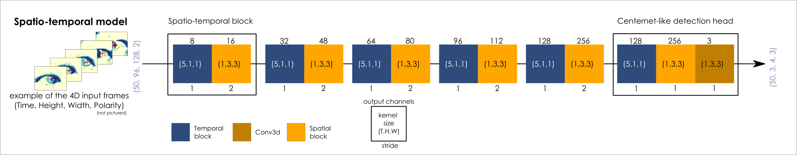
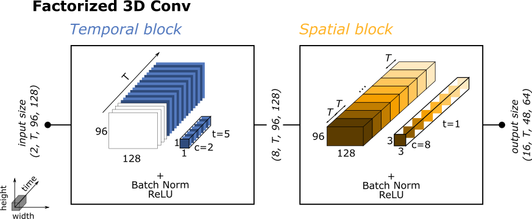
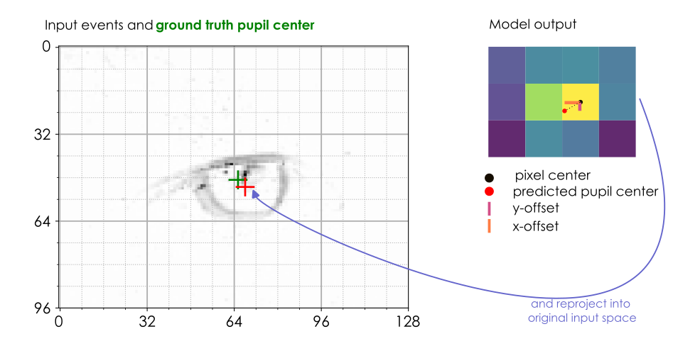
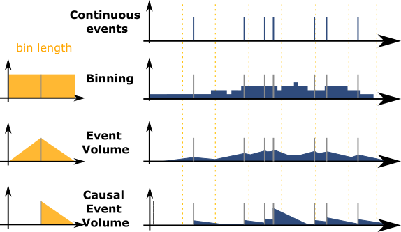
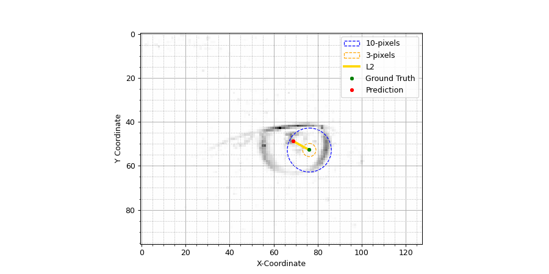
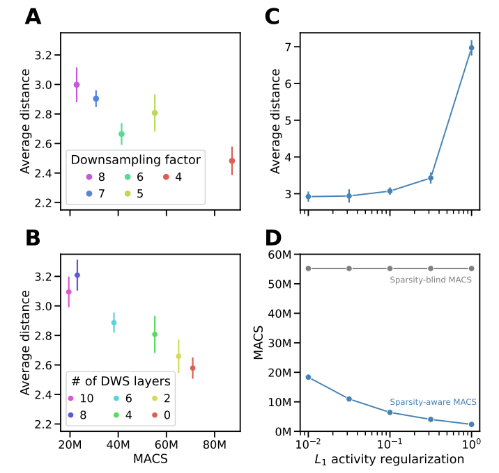

<!DOCTYPE html>
<html class="writer-html5" lang="en" data-content_root="../../">
<head>
  <meta charset="utf-8" /><meta name="viewport" content="width=device-width, initial-scale=1" />

  <meta name="viewport" content="width=device-width, initial-scale=1.0" />
  <title>Efficient online eye tracking with a lightweight spatiotemporal network and event cameras &mdash; Akida Examples  documentation</title>
      <link rel="stylesheet" type="text/css" href="../../_static/pygments.css?v=b86133f3" />
      <link rel="stylesheet" type="text/css" href="../../_static/css/theme.css?v=e59714d7" />
      <link rel="stylesheet" type="text/css" href="../../_static/sg_gallery.css?v=d2d258e8" />
      <link rel="stylesheet" type="text/css" href="../../_static/sg_gallery-binder.css?v=f4aeca0c" />
      <link rel="stylesheet" type="text/css" href="../../_static/sg_gallery-dataframe.css?v=2082cf3c" />
      <link rel="stylesheet" type="text/css" href="../../_static/sg_gallery-rendered-html.css?v=1277b6f3" />
      <link rel="stylesheet" type="text/css" href="../../_static/sphinx-design.min.css?v=95c83b7e" />
      <link rel="stylesheet" type="text/css" href="../../_static/custom.css?v=c4c4e161" />

  
    <link rel="shortcut icon" href="../../_static/favicon.ico"/>
      <script src="../../_static/jquery.js?v=5d32c60e"></script>
      <script src="../../_static/_sphinx_javascript_frameworks_compat.js?v=2cd50e6c"></script>
      <script src="../../_static/documentation_options.js?v=5929fcd5"></script>
      <script src="../../_static/doctools.js?v=9bcbadda"></script>
      <script src="../../_static/sphinx_highlight.js?v=dc90522c"></script>
      <script src="../../_static/design-tabs.js?v=f930bc37"></script>
      <script src="../../_static/leadlander_tag.js?v=d65c0df8"></script>
    <script src="../../_static/js/theme.js"></script>
    <link rel="index" title="Index" href="../../genindex.html" />
    <link rel="search" title="Search" href="../../search.html" />
    <link rel="next" title="Model zoo performance" href="../../model_zoo_performance.html" />
    <link rel="prev" title="Gesture recognition with spatiotemporal models" href="plot_0_introduction_to_spatiotemporal_models.html" /> 
</head>

<body class="wy-body-for-nav"> 
  <div class="wy-grid-for-nav">
    <nav data-toggle="wy-nav-shift" class="wy-nav-side">
      <div class="wy-side-scroll">
        <div class="wy-side-nav-search"  style="background: #000000" >

          
          
          <a href="../../index.html">
            
              
          </a>
<div role="search">
  <form id="rtd-search-form" class="wy-form" action="../../search.html" method="get">
    <input type="text" name="q" placeholder="Search docs" aria-label="Search docs" />
    <input type="hidden" name="check_keywords" value="yes" />
    <input type="hidden" name="area" value="default" />
  </form>
</div>
        </div><div class="wy-menu wy-menu-vertical" data-spy="affix" role="navigation" aria-label="Navigation menu">
              <ul class="current">
<li class="toctree-l1"><a class="reference internal" href="../../index.html">Overview</a></li>
<li class="toctree-l1"><a class="reference internal" href="../../installation.html">Installation</a><ul>
<li class="toctree-l2"><a class="reference internal" href="../../installation.html#supported-configurations">Supported configurations</a></li>
<li class="toctree-l2"><a class="reference internal" href="../../installation.html#quick-installation">Quick installation</a></li>
<li class="toctree-l2"><a class="reference internal" href="../../installation.html#running-examples">Running examples</a></li>
</ul>
</li>
<li class="toctree-l1"><a class="reference internal" href="../../user_guide/user_guide.html">User guide</a><ul>
<li class="toctree-l2"><a class="reference internal" href="../../user_guide/akida.html">Akida user guide</a><ul>
<li class="toctree-l3"><a class="reference internal" href="../../user_guide/akida.html#overview">Overview</a></li>
<li class="toctree-l3"><a class="reference internal" href="../../user_guide/akida.html#programming-interface">Programming interface</a><ul>
<li class="toctree-l4"><a class="reference internal" href="../../user_guide/akida.html#the-akida-model">The Akida Model</a></li>
<li class="toctree-l4"><a class="reference internal" href="../../user_guide/akida.html#akida-layers">Akida layers</a></li>
</ul>
</li>
<li class="toctree-l3"><a class="reference internal" href="../../user_guide/akida.html#model-hardware-mapping">Model Hardware Mapping</a><ul>
<li class="toctree-l4"><a class="reference internal" href="../../user_guide/akida.html#devices">Devices</a></li>
<li class="toctree-l4"><a class="reference internal" href="../../user_guide/akida.html#model-mapping">Model mapping</a></li>
<li class="toctree-l4"><a class="reference internal" href="../../user_guide/akida.html#advanced-mapping-details-and-hardware-devices-usage">Advanced Mapping Details and Hardware Devices Usage</a></li>
<li class="toctree-l4"><a class="reference internal" href="../../user_guide/akida.html#performance-measurement">Performance measurement</a></li>
<li class="toctree-l4"><a class="reference internal" href="../../user_guide/akida.html#command-line-interface-for-model-evaluation">Command-line interface for model evaluation</a></li>
</ul>
</li>
<li class="toctree-l3"><a class="reference internal" href="../../user_guide/akida.html#using-akida-edge-learning">Using Akida Edge learning</a><ul>
<li class="toctree-l4"><a class="reference internal" href="../../user_guide/akida.html#learning-constraints">Learning constraints</a></li>
<li class="toctree-l4"><a class="reference internal" href="../../user_guide/akida.html#compiling-a-layer">Compiling a layer</a></li>
</ul>
</li>
</ul>
</li>
<li class="toctree-l2"><a class="reference internal" href="../../user_guide/quantizeml.html">QuantizeML toolkit</a><ul>
<li class="toctree-l3"><a class="reference internal" href="../../user_guide/quantizeml.html#overview">Overview</a></li>
<li class="toctree-l3"><a class="reference internal" href="../../user_guide/quantizeml.html#the-fixedpoint-representation">The FixedPoint representation</a></li>
<li class="toctree-l3"><a class="reference internal" href="../../user_guide/quantizeml.html#quantization-flow">Quantization flow</a><ul>
<li class="toctree-l4"><a class="reference internal" href="../../user_guide/quantizeml.html#compatibility-constraints">Compatibility constraints</a></li>
<li class="toctree-l4"><a class="reference internal" href="../../user_guide/quantizeml.html#model-loading">Model loading</a></li>
</ul>
</li>
<li class="toctree-l3"><a class="reference internal" href="../../user_guide/quantizeml.html#command-line-interface">Command line interface</a><ul>
<li class="toctree-l4"><a class="reference internal" href="../../user_guide/quantizeml.html#quantize-cli">quantize CLI</a></li>
<li class="toctree-l4"><a class="reference internal" href="../../user_guide/quantizeml.html#config-cli">config CLI</a></li>
<li class="toctree-l4"><a class="reference internal" href="../../user_guide/quantizeml.html#check-cli">check CLI</a></li>
<li class="toctree-l4"><a class="reference internal" href="../../user_guide/quantizeml.html#insert-rescaling-cli">insert_rescaling CLI</a></li>
</ul>
</li>
<li class="toctree-l3"><a class="reference internal" href="../../user_guide/quantizeml.html#supported-layer-types">Supported layer types</a><ul>
<li class="toctree-l4"><a class="reference internal" href="../../user_guide/quantizeml.html#keras-support">Keras support</a></li>
<li class="toctree-l4"><a class="reference internal" href="../../user_guide/quantizeml.html#onnx-support">ONNX support</a></li>
</ul>
</li>
<li class="toctree-l3"><a class="reference internal" href="../../user_guide/quantizeml.html#analysis-module">Analysis module</a><ul>
<li class="toctree-l4"><a class="reference internal" href="../../user_guide/quantizeml.html#kernel-distribution">Kernel distribution</a></li>
<li class="toctree-l4"><a class="reference internal" href="../../user_guide/quantizeml.html#quantization-error">Quantization error</a></li>
<li class="toctree-l4"><a class="reference internal" href="../../user_guide/quantizeml.html#metrics">Metrics</a></li>
<li class="toctree-l4"><a class="reference internal" href="../../user_guide/quantizeml.html#command-line">Command line</a></li>
</ul>
</li>
</ul>
</li>
<li class="toctree-l2"><a class="reference internal" href="../../user_guide/cnn2snn.html">CNN2SNN toolkit</a><ul>
<li class="toctree-l3"><a class="reference internal" href="../../user_guide/cnn2snn.html#overview">Overview</a></li>
<li class="toctree-l3"><a class="reference internal" href="../../user_guide/cnn2snn.html#conversion-flow">Conversion flow</a><ul>
<li class="toctree-l4"><a class="reference internal" href="../../user_guide/cnn2snn.html#conversion-compatibility">Conversion compatibility</a></li>
<li class="toctree-l4"><a class="reference internal" href="../../user_guide/cnn2snn.html#command-line-interface">Command-line interface</a></li>
</ul>
</li>
<li class="toctree-l3"><a class="reference internal" href="../../user_guide/cnn2snn.html#handling-akida-1-0-and-akida-2-0-specificities">Handling Akida 1.0 and Akida 2.0 specificities</a></li>
</ul>
</li>
<li class="toctree-l2"><a class="reference internal" href="../../user_guide/akida_models.html">Akida models zoo</a><ul>
<li class="toctree-l3"><a class="reference internal" href="../../user_guide/akida_models.html#overview">Overview</a></li>
<li class="toctree-l3"><a class="reference internal" href="../../user_guide/akida_models.html#command-line-interface-for-model-creation">Command-line interface for model creation</a></li>
<li class="toctree-l3"><a class="reference internal" href="../../user_guide/akida_models.html#command-line-interface-for-model-training">Command-line interface for model training</a><ul>
<li class="toctree-l4"><a class="reference internal" href="../../user_guide/akida_models.html#kws-training">KWS training</a></li>
<li class="toctree-l4"><a class="reference internal" href="../../user_guide/akida_models.html#akidanet-training">AkidaNet training</a></li>
</ul>
</li>
<li class="toctree-l3"><a class="reference internal" href="../../user_guide/akida_models.html#command-line-interface-for-model-evaluation">Command-line interface for model evaluation</a></li>
<li class="toctree-l3"><a class="reference internal" href="../../user_guide/akida_models.html#command-line-interface-to-display-summary">Command-line interface to display summary</a></li>
<li class="toctree-l3"><a class="reference internal" href="../../user_guide/akida_models.html#command-line-interface-to-display-sparsity">Command-line interface to display sparsity</a></li>
<li class="toctree-l3"><a class="reference internal" href="../../user_guide/akida_models.html#id1">Layer Blocks</a></li>
<li class="toctree-l3"><a class="reference internal" href="../../user_guide/akida_models.html#handling-akida-1-0-and-akida-2-0-specificities">Handling Akida 1.0 and Akida 2.0 specificities</a></li>
</ul>
</li>
<li class="toctree-l2"><a class="reference internal" href="../../user_guide/engine.html">Akida Engine</a><ul>
<li class="toctree-l3"><a class="reference internal" href="../../user_guide/engine.html#overview">Overview</a></li>
<li class="toctree-l3"><a class="reference internal" href="../../user_guide/engine.html#engine-directory-structure">Engine directory structure</a></li>
<li class="toctree-l3"><a class="reference internal" href="../../user_guide/engine.html#engine-api-overview">Engine API overview</a><ul>
<li class="toctree-l4"><a class="reference internal" href="../../user_guide/engine.html#hardwaredriver">HardwareDriver</a></li>
<li class="toctree-l4"><a class="reference internal" href="../../user_guide/engine.html#hardwaredevice">HardwareDevice</a></li>
<li class="toctree-l4"><a class="reference internal" href="../../user_guide/engine.html#dense">Dense</a></li>
<li class="toctree-l4"><a class="reference internal" href="../../user_guide/engine.html#shape">Shape</a></li>
<li class="toctree-l4"><a class="reference internal" href="../../user_guide/engine.html#hwversion">HwVersion</a></li>
<li class="toctree-l4"><a class="reference internal" href="../../user_guide/engine.html#sparse-and-input-conversion-functions">Sparse and Input conversion functions</a></li>
<li class="toctree-l4"><a class="reference internal" href="../../user_guide/engine.html#other-headers-in-the-api">Other headers in the API</a></li>
</ul>
</li>
</ul>
</li>
</ul>
</li>
<li class="toctree-l1"><a class="reference internal" href="../../api_reference/api_reference.html">API reference</a><ul>
<li class="toctree-l2"><a class="reference internal" href="../../api_reference/akida_apis.html">Akida runtime</a><ul>
<li class="toctree-l3"><a class="reference internal" href="../../api_reference/akida_apis.html#akida.__version__"><code class="docutils literal notranslate"><span class="pre">__version__</span></code></a></li>
<li class="toctree-l3"><a class="reference internal" href="../../api_reference/akida_apis.html#model">Model</a><ul>
<li class="toctree-l4"><a class="reference internal" href="../../api_reference/akida_apis.html#akida.Model"><code class="docutils literal notranslate"><span class="pre">Model</span></code></a></li>
</ul>
</li>
<li class="toctree-l3"><a class="reference internal" href="../../api_reference/akida_apis.html#akida-layers">Akida layers</a><ul>
<li class="toctree-l4"><a class="reference internal" href="../../api_reference/akida_apis.html#layer-api">Layer API</a></li>
<li class="toctree-l4"><a class="reference internal" href="../../api_reference/akida_apis.html#common-layer">Common layer</a></li>
<li class="toctree-l4"><a class="reference internal" href="../../api_reference/akida_apis.html#akida-v1-layers">Akida V1 layers</a></li>
<li class="toctree-l4"><a class="reference internal" href="../../api_reference/akida_apis.html#akida-v2-layers">Akida V2 layers</a></li>
</ul>
</li>
<li class="toctree-l3"><a class="reference internal" href="../../api_reference/akida_apis.html#layer-parameters">Layer parameters</a><ul>
<li class="toctree-l4"><a class="reference internal" href="../../api_reference/akida_apis.html#layertype">LayerType</a></li>
<li class="toctree-l4"><a class="reference internal" href="../../api_reference/akida_apis.html#activationtype">ActivationType</a></li>
<li class="toctree-l4"><a class="reference internal" href="../../api_reference/akida_apis.html#padding">Padding</a></li>
<li class="toctree-l4"><a class="reference internal" href="../../api_reference/akida_apis.html#pooltype">PoolType</a></li>
</ul>
</li>
<li class="toctree-l3"><a class="reference internal" href="../../api_reference/akida_apis.html#optimizers">Optimizers</a><ul>
<li class="toctree-l4"><a class="reference internal" href="../../api_reference/akida_apis.html#akida.core.Optimizer"><code class="docutils literal notranslate"><span class="pre">Optimizer</span></code></a></li>
<li class="toctree-l4"><a class="reference internal" href="../../api_reference/akida_apis.html#akida.AkidaUnsupervised"><code class="docutils literal notranslate"><span class="pre">AkidaUnsupervised</span></code></a></li>
</ul>
</li>
<li class="toctree-l3"><a class="reference internal" href="../../api_reference/akida_apis.html#sequence">Sequence</a><ul>
<li class="toctree-l4"><a class="reference internal" href="../../api_reference/akida_apis.html#id1">Sequence</a></li>
<li class="toctree-l4"><a class="reference internal" href="../../api_reference/akida_apis.html#backendtype">BackendType</a></li>
<li class="toctree-l4"><a class="reference internal" href="../../api_reference/akida_apis.html#pass">Pass</a></li>
</ul>
</li>
<li class="toctree-l3"><a class="reference internal" href="../../api_reference/akida_apis.html#device">Device</a><ul>
<li class="toctree-l4"><a class="reference internal" href="../../api_reference/akida_apis.html#id2">Device</a></li>
<li class="toctree-l4"><a class="reference internal" href="../../api_reference/akida_apis.html#hwversion">HwVersion</a></li>
</ul>
</li>
<li class="toctree-l3"><a class="reference internal" href="../../api_reference/akida_apis.html#hwdevice">HWDevice</a><ul>
<li class="toctree-l4"><a class="reference internal" href="../../api_reference/akida_apis.html#id3">HWDevice</a></li>
<li class="toctree-l4"><a class="reference internal" href="../../api_reference/akida_apis.html#socdriver">SocDriver</a></li>
<li class="toctree-l4"><a class="reference internal" href="../../api_reference/akida_apis.html#clockmode">ClockMode</a></li>
</ul>
</li>
<li class="toctree-l3"><a class="reference internal" href="../../api_reference/akida_apis.html#powermeter">PowerMeter</a><ul>
<li class="toctree-l4"><a class="reference internal" href="../../api_reference/akida_apis.html#akida.PowerMeter"><code class="docutils literal notranslate"><span class="pre">PowerMeter</span></code></a></li>
<li class="toctree-l4"><a class="reference internal" href="../../api_reference/akida_apis.html#akida.PowerEvent"><code class="docutils literal notranslate"><span class="pre">PowerEvent</span></code></a></li>
</ul>
</li>
<li class="toctree-l3"><a class="reference internal" href="../../api_reference/akida_apis.html#np">NP</a><ul>
<li class="toctree-l4"><a class="reference internal" href="../../api_reference/akida_apis.html#akida.NP.Mesh"><code class="docutils literal notranslate"><span class="pre">Mesh</span></code></a></li>
<li class="toctree-l4"><a class="reference internal" href="../../api_reference/akida_apis.html#akida.NP.Info"><code class="docutils literal notranslate"><span class="pre">Info</span></code></a></li>
<li class="toctree-l4"><a class="reference internal" href="../../api_reference/akida_apis.html#akida.NP.Ident"><code class="docutils literal notranslate"><span class="pre">Ident</span></code></a></li>
<li class="toctree-l4"><a class="reference internal" href="../../api_reference/akida_apis.html#akida.NP.NpSpace"><code class="docutils literal notranslate"><span class="pre">NpSpace</span></code></a></li>
<li class="toctree-l4"><a class="reference internal" href="../../api_reference/akida_apis.html#akida.NP.Type"><code class="docutils literal notranslate"><span class="pre">Type</span></code></a></li>
<li class="toctree-l4"><a class="reference internal" href="../../api_reference/akida_apis.html#akida.NP.MemoryInfo"><code class="docutils literal notranslate"><span class="pre">MemoryInfo</span></code></a></li>
<li class="toctree-l4"><a class="reference internal" href="../../api_reference/akida_apis.html#akida.NP.Component"><code class="docutils literal notranslate"><span class="pre">Component</span></code></a></li>
</ul>
</li>
<li class="toctree-l3"><a class="reference internal" href="../../api_reference/akida_apis.html#mapping">Mapping</a><ul>
<li class="toctree-l4"><a class="reference internal" href="../../api_reference/akida_apis.html#akida.MapMode"><code class="docutils literal notranslate"><span class="pre">MapMode</span></code></a></li>
<li class="toctree-l4"><a class="reference internal" href="../../api_reference/akida_apis.html#akida.MapConstraints"><code class="docutils literal notranslate"><span class="pre">MapConstraints</span></code></a></li>
</ul>
</li>
</ul>
</li>
<li class="toctree-l2"><a class="reference internal" href="../../api_reference/cnn2snn_apis.html">CNN2SNN</a><ul>
<li class="toctree-l3"><a class="reference internal" href="../../api_reference/cnn2snn_apis.html#akida-version">Akida version</a><ul>
<li class="toctree-l4"><a class="reference internal" href="../../api_reference/cnn2snn_apis.html#cnn2snn.AkidaVersion"><code class="docutils literal notranslate"><span class="pre">AkidaVersion</span></code></a></li>
<li class="toctree-l4"><a class="reference internal" href="../../api_reference/cnn2snn_apis.html#cnn2snn.get_akida_version"><code class="docutils literal notranslate"><span class="pre">get_akida_version()</span></code></a></li>
<li class="toctree-l4"><a class="reference internal" href="../../api_reference/cnn2snn_apis.html#cnn2snn.set_akida_version"><code class="docutils literal notranslate"><span class="pre">set_akida_version()</span></code></a></li>
</ul>
</li>
<li class="toctree-l3"><a class="reference internal" href="../../api_reference/cnn2snn_apis.html#conversion">Conversion</a><ul>
<li class="toctree-l4"><a class="reference internal" href="../../api_reference/cnn2snn_apis.html#cnn2snn.convert"><code class="docutils literal notranslate"><span class="pre">convert()</span></code></a></li>
<li class="toctree-l4"><a class="reference internal" href="../../api_reference/cnn2snn_apis.html#cnn2snn.check_model_compatibility"><code class="docutils literal notranslate"><span class="pre">check_model_compatibility()</span></code></a></li>
</ul>
</li>
</ul>
</li>
<li class="toctree-l2"><a class="reference internal" href="../../api_reference/quantizeml_apis.html">QuantizeML</a><ul>
<li class="toctree-l3"><a class="reference internal" href="../../api_reference/quantizeml_apis.html#layers">Layers</a><ul>
<li class="toctree-l4"><a class="reference internal" href="../../api_reference/quantizeml_apis.html#reshaping">Reshaping</a></li>
<li class="toctree-l4"><a class="reference internal" href="../../api_reference/quantizeml_apis.html#activations">Activations</a></li>
<li class="toctree-l4"><a class="reference internal" href="../../api_reference/quantizeml_apis.html#convolution">Convolution</a></li>
<li class="toctree-l4"><a class="reference internal" href="../../api_reference/quantizeml_apis.html#depthwise-convolution">Depthwise convolution</a></li>
<li class="toctree-l4"><a class="reference internal" href="../../api_reference/quantizeml_apis.html#separable-convolution">Separable convolution</a></li>
<li class="toctree-l4"><a class="reference internal" href="../../api_reference/quantizeml_apis.html#temporal-convolution">Temporal convolution</a></li>
<li class="toctree-l4"><a class="reference internal" href="../../api_reference/quantizeml_apis.html#dense">Dense</a></li>
<li class="toctree-l4"><a class="reference internal" href="../../api_reference/quantizeml_apis.html#skip-connection">Skip connection</a></li>
<li class="toctree-l4"><a class="reference internal" href="../../api_reference/quantizeml_apis.html#pooling">Pooling</a></li>
<li class="toctree-l4"><a class="reference internal" href="../../api_reference/quantizeml_apis.html#rescaling">Rescaling</a></li>
<li class="toctree-l4"><a class="reference internal" href="../../api_reference/quantizeml_apis.html#dropout">Dropout</a></li>
<li class="toctree-l4"><a class="reference internal" href="../../api_reference/quantizeml_apis.html#quantizers">Quantizers</a></li>
<li class="toctree-l4"><a class="reference internal" href="../../api_reference/quantizeml_apis.html#calibration">Calibration</a></li>
<li class="toctree-l4"><a class="reference internal" href="../../api_reference/quantizeml_apis.html#recording">Recording</a></li>
</ul>
</li>
<li class="toctree-l3"><a class="reference internal" href="../../api_reference/quantizeml_apis.html#models">Models</a><ul>
<li class="toctree-l4"><a class="reference internal" href="../../api_reference/quantizeml_apis.html#quantization">Quantization</a></li>
<li class="toctree-l4"><a class="reference internal" href="../../api_reference/quantizeml_apis.html#quantization-parameters">Quantization parameters</a></li>
<li class="toctree-l4"><a class="reference internal" href="../../api_reference/quantizeml_apis.html#id1">Calibration</a></li>
<li class="toctree-l4"><a class="reference internal" href="../../api_reference/quantizeml_apis.html#utils">Utils</a></li>
</ul>
</li>
<li class="toctree-l3"><a class="reference internal" href="../../api_reference/quantizeml_apis.html#tensors">Tensors</a><ul>
<li class="toctree-l4"><a class="reference internal" href="../../api_reference/quantizeml_apis.html#qtensor">QTensor</a></li>
<li class="toctree-l4"><a class="reference internal" href="../../api_reference/quantizeml_apis.html#fixedpoint">FixedPoint</a></li>
<li class="toctree-l4"><a class="reference internal" href="../../api_reference/quantizeml_apis.html#qfloat">QFloat</a></li>
</ul>
</li>
<li class="toctree-l3"><a class="reference internal" href="../../api_reference/quantizeml_apis.html#onnx-support">ONNX support</a><ul>
<li class="toctree-l4"><a class="reference internal" href="../../api_reference/quantizeml_apis.html#id2">Layers</a></li>
<li class="toctree-l4"><a class="reference internal" href="../../api_reference/quantizeml_apis.html#custom-patterns">Custom patterns</a></li>
</ul>
</li>
<li class="toctree-l3"><a class="reference internal" href="../../api_reference/quantizeml_apis.html#model-i-o">Model I/O</a><ul>
<li class="toctree-l4"><a class="reference internal" href="../../api_reference/quantizeml_apis.html#quantizeml.load_model"><code class="docutils literal notranslate"><span class="pre">load_model()</span></code></a></li>
<li class="toctree-l4"><a class="reference internal" href="../../api_reference/quantizeml_apis.html#quantizeml.save_model"><code class="docutils literal notranslate"><span class="pre">save_model()</span></code></a></li>
</ul>
</li>
<li class="toctree-l3"><a class="reference internal" href="../../api_reference/quantizeml_apis.html#analysis">Analysis</a><ul>
<li class="toctree-l4"><a class="reference internal" href="../../api_reference/quantizeml_apis.html#kernel-distribution">Kernel distribution</a></li>
<li class="toctree-l4"><a class="reference internal" href="../../api_reference/quantizeml_apis.html#quantization-error">Quantization error</a></li>
<li class="toctree-l4"><a class="reference internal" href="../../api_reference/quantizeml_apis.html#metrics">Metrics</a></li>
</ul>
</li>
</ul>
</li>
<li class="toctree-l2"><a class="reference internal" href="../../api_reference/akida_models_apis.html">Akida models</a><ul>
<li class="toctree-l3"><a class="reference internal" href="../../api_reference/akida_models_apis.html#layer-blocks">Layer blocks</a><ul>
<li class="toctree-l4"><a class="reference internal" href="../../api_reference/akida_models_apis.html#cnn-blocks">CNN blocks</a></li>
<li class="toctree-l4"><a class="reference internal" href="../../api_reference/akida_models_apis.html#transposed-blocks">Transposed blocks</a></li>
<li class="toctree-l4"><a class="reference internal" href="../../api_reference/akida_models_apis.html#detection-block">Detection block</a></li>
<li class="toctree-l4"><a class="reference internal" href="../../api_reference/akida_models_apis.html#spatiotemporal-blocks">Spatiotemporal blocks</a></li>
</ul>
</li>
<li class="toctree-l3"><a class="reference internal" href="../../api_reference/akida_models_apis.html#helpers">Helpers</a><ul>
<li class="toctree-l4"><a class="reference internal" href="../../api_reference/akida_models_apis.html#gamma-constraint">Gamma constraint</a></li>
<li class="toctree-l4"><a class="reference internal" href="../../api_reference/akida_models_apis.html#unfusing-separableconvolutional">Unfusing SeparableConvolutional</a></li>
<li class="toctree-l4"><a class="reference internal" href="../../api_reference/akida_models_apis.html#extract-samples">Extract samples</a></li>
</ul>
</li>
<li class="toctree-l3"><a class="reference internal" href="../../api_reference/akida_models_apis.html#knowledge-distillation">Knowledge distillation</a><ul>
<li class="toctree-l4"><a class="reference internal" href="../../api_reference/akida_models_apis.html#akida_models.distiller.Distiller"><code class="docutils literal notranslate"><span class="pre">Distiller</span></code></a></li>
<li class="toctree-l4"><a class="reference internal" href="../../api_reference/akida_models_apis.html#akida_models.distiller.KLDistillationLoss"><code class="docutils literal notranslate"><span class="pre">KLDistillationLoss()</span></code></a></li>
</ul>
</li>
<li class="toctree-l3"><a class="reference internal" href="../../api_reference/akida_models_apis.html#sparsity">Sparsity</a><ul>
<li class="toctree-l4"><a class="reference internal" href="../../api_reference/akida_models_apis.html#akida_models.sparsity.compute_sparsity"><code class="docutils literal notranslate"><span class="pre">compute_sparsity()</span></code></a></li>
</ul>
</li>
<li class="toctree-l3"><a class="reference internal" href="../../api_reference/akida_models_apis.html#model-i-o">Model I/O</a><ul>
<li class="toctree-l4"><a class="reference internal" href="../../api_reference/akida_models_apis.html#akida_models.model_io.load_model"><code class="docutils literal notranslate"><span class="pre">load_model()</span></code></a></li>
<li class="toctree-l4"><a class="reference internal" href="../../api_reference/akida_models_apis.html#akida_models.model_io.load_weights"><code class="docutils literal notranslate"><span class="pre">load_weights()</span></code></a></li>
<li class="toctree-l4"><a class="reference internal" href="../../api_reference/akida_models_apis.html#akida_models.model_io.save_weights"><code class="docutils literal notranslate"><span class="pre">save_weights()</span></code></a></li>
<li class="toctree-l4"><a class="reference internal" href="../../api_reference/akida_models_apis.html#akida_models.model_io.get_model_path"><code class="docutils literal notranslate"><span class="pre">get_model_path()</span></code></a></li>
</ul>
</li>
<li class="toctree-l3"><a class="reference internal" href="../../api_reference/akida_models_apis.html#utils">Utils</a><ul>
<li class="toctree-l4"><a class="reference internal" href="../../api_reference/akida_models_apis.html#akida_models.utils.fetch_file"><code class="docutils literal notranslate"><span class="pre">fetch_file()</span></code></a></li>
<li class="toctree-l4"><a class="reference internal" href="../../api_reference/akida_models_apis.html#akida_models.utils.get_tensorboard_callback"><code class="docutils literal notranslate"><span class="pre">get_tensorboard_callback()</span></code></a></li>
<li class="toctree-l4"><a class="reference internal" href="../../api_reference/akida_models_apis.html#akida_models.utils.get_params_by_version"><code class="docutils literal notranslate"><span class="pre">get_params_by_version()</span></code></a></li>
</ul>
</li>
<li class="toctree-l3"><a class="reference internal" href="../../api_reference/akida_models_apis.html#model-zoo">Model zoo</a><ul>
<li class="toctree-l4"><a class="reference internal" href="../../api_reference/akida_models_apis.html#akidanet">AkidaNet</a></li>
<li class="toctree-l4"><a class="reference internal" href="../../api_reference/akida_models_apis.html#mobilenet">Mobilenet</a></li>
<li class="toctree-l4"><a class="reference internal" href="../../api_reference/akida_models_apis.html#ds-cnn">DS-CNN</a></li>
<li class="toctree-l4"><a class="reference internal" href="../../api_reference/akida_models_apis.html#vgg">VGG</a></li>
<li class="toctree-l4"><a class="reference internal" href="../../api_reference/akida_models_apis.html#yolo">YOLO</a></li>
<li class="toctree-l4"><a class="reference internal" href="../../api_reference/akida_models_apis.html#pointnet">PointNet++</a></li>
<li class="toctree-l4"><a class="reference internal" href="../../api_reference/akida_models_apis.html#gxnor">GXNOR</a></li>
<li class="toctree-l4"><a class="reference internal" href="../../api_reference/akida_models_apis.html#centernet">CenterNet</a></li>
<li class="toctree-l4"><a class="reference internal" href="../../api_reference/akida_models_apis.html#akidaunet">AkidaUNet</a></li>
<li class="toctree-l4"><a class="reference internal" href="../../api_reference/akida_models_apis.html#spatiotemporal-tenns">Spatiotemporal TENNs</a></li>
</ul>
</li>
</ul>
</li>
<li class="toctree-l2"><a class="reference internal" href="../../api_reference/tenns_modules_apis.html">TENNs modules</a><ul>
<li class="toctree-l3"><a class="reference internal" href="../../api_reference/tenns_modules_apis.html#spatiotemporal-blocks">Spatiotemporal blocks</a><ul>
<li class="toctree-l4"><a class="reference internal" href="../../api_reference/tenns_modules_apis.html#tenns_modules.SpatialBlock"><code class="docutils literal notranslate"><span class="pre">SpatialBlock</span></code></a></li>
<li class="toctree-l4"><a class="reference internal" href="../../api_reference/tenns_modules_apis.html#tenns_modules.TemporalBlock"><code class="docutils literal notranslate"><span class="pre">TemporalBlock</span></code></a></li>
<li class="toctree-l4"><a class="reference internal" href="../../api_reference/tenns_modules_apis.html#tenns_modules.SpatioTemporalBlock"><code class="docutils literal notranslate"><span class="pre">SpatioTemporalBlock</span></code></a></li>
</ul>
</li>
<li class="toctree-l3"><a class="reference internal" href="../../api_reference/tenns_modules_apis.html#export">Export</a><ul>
<li class="toctree-l4"><a class="reference internal" href="../../api_reference/tenns_modules_apis.html#tenns_modules.export_to_onnx"><code class="docutils literal notranslate"><span class="pre">export_to_onnx()</span></code></a></li>
</ul>
</li>
</ul>
</li>
</ul>
</li>
<li class="toctree-l1 current"><a class="reference internal" href="../index.html">Examples</a><ul class="current">
<li class="toctree-l2"><a class="reference internal" href="../index.html#general-examples">General examples</a><ul>
<li class="toctree-l3"><a class="reference internal" href="../general/plot_0_global_workflow.html">Global Akida workflow</a><ul>
<li class="toctree-l4"><a class="reference internal" href="../general/plot_0_global_workflow.html#create-and-train">1. Create and train</a></li>
<li class="toctree-l4"><a class="reference internal" href="../general/plot_0_global_workflow.html#quantize">2. Quantize</a></li>
<li class="toctree-l4"><a class="reference internal" href="../general/plot_0_global_workflow.html#convert">3. Convert</a></li>
</ul>
</li>
<li class="toctree-l3"><a class="reference internal" href="../general/plot_1_akidanet_imagenet.html">AkidaNet/ImageNet inference</a><ul>
<li class="toctree-l4"><a class="reference internal" href="../general/plot_1_akidanet_imagenet.html#dataset-preparation">1. Dataset preparation</a></li>
<li class="toctree-l4"><a class="reference internal" href="../general/plot_1_akidanet_imagenet.html#pretrained-quantized-model">2. Pretrained quantized model</a></li>
<li class="toctree-l4"><a class="reference internal" href="../general/plot_1_akidanet_imagenet.html#conversion-to-akida">3. Conversion to Akida</a></li>
<li class="toctree-l4"><a class="reference internal" href="../general/plot_1_akidanet_imagenet.html#hardware-mapping-and-performance">4. Hardware mapping and performance</a></li>
</ul>
</li>
<li class="toctree-l3"><a class="reference internal" href="../general/plot_2_ds_cnn_kws.html">DS-CNN/KWS inference</a><ul>
<li class="toctree-l4"><a class="reference internal" href="../general/plot_2_ds_cnn_kws.html#load-the-preprocessed-dataset">1. Load the preprocessed dataset</a></li>
<li class="toctree-l4"><a class="reference internal" href="../general/plot_2_ds_cnn_kws.html#load-a-pre-trained-native-keras-model">2. Load a pre-trained native Keras model</a></li>
<li class="toctree-l4"><a class="reference internal" href="../general/plot_2_ds_cnn_kws.html#load-a-pre-trained-quantized-keras-model">3. Load a pre-trained quantized Keras model</a></li>
<li class="toctree-l4"><a class="reference internal" href="../general/plot_2_ds_cnn_kws.html#conversion-to-akida">4. Conversion to Akida</a></li>
<li class="toctree-l4"><a class="reference internal" href="../general/plot_2_ds_cnn_kws.html#confusion-matrix">5. Confusion matrix</a></li>
</ul>
</li>
<li class="toctree-l3"><a class="reference internal" href="../general/plot_3_regression.html">Age estimation (regression) example</a><ul>
<li class="toctree-l4"><a class="reference internal" href="../general/plot_3_regression.html#load-the-utkface-dataset">1. Load the UTKFace Dataset</a></li>
<li class="toctree-l4"><a class="reference internal" href="../general/plot_3_regression.html#load-a-pre-trained-native-keras-model">2. Load a pre-trained native Keras model</a></li>
<li class="toctree-l4"><a class="reference internal" href="../general/plot_3_regression.html#load-a-pre-trained-quantized-keras-model">3. Load a pre-trained quantized Keras model</a></li>
<li class="toctree-l4"><a class="reference internal" href="../general/plot_3_regression.html#conversion-to-akida">4. Conversion to Akida</a></li>
<li class="toctree-l4"><a class="reference internal" href="../general/plot_3_regression.html#estimate-age-on-a-single-image">5. Estimate age on a single image</a></li>
</ul>
</li>
<li class="toctree-l3"><a class="reference internal" href="../general/plot_4_transfer_learning.html">Transfer learning with AkidaNet for PlantVillage</a><ul>
<li class="toctree-l4"><a class="reference internal" href="../general/plot_4_transfer_learning.html#transfer-learning-process">Transfer learning process</a></li>
<li class="toctree-l4"><a class="reference internal" href="../general/plot_4_transfer_learning.html#dataset-preparation">1. Dataset preparation</a></li>
<li class="toctree-l4"><a class="reference internal" href="../general/plot_4_transfer_learning.html#get-a-trained-akidanet-base-model">2. Get a trained AkidaNet base model</a></li>
<li class="toctree-l4"><a class="reference internal" href="../general/plot_4_transfer_learning.html#add-a-classification-head-to-the-model">3. Add a classification head to the model</a></li>
<li class="toctree-l4"><a class="reference internal" href="../general/plot_4_transfer_learning.html#train-for-a-few-epochs">4. Train for a few epochs</a></li>
<li class="toctree-l4"><a class="reference internal" href="../general/plot_4_transfer_learning.html#quantize-the-model">5. Quantize the model</a></li>
<li class="toctree-l4"><a class="reference internal" href="../general/plot_4_transfer_learning.html#compute-accuracy">6. Compute accuracy</a></li>
</ul>
</li>
<li class="toctree-l3"><a class="reference internal" href="../general/plot_5_voc_yolo_detection.html">YOLO/PASCAL-VOC detection tutorial</a><ul>
<li class="toctree-l4"><a class="reference internal" href="../general/plot_5_voc_yolo_detection.html#introduction">1. Introduction</a></li>
<li class="toctree-l4"><a class="reference internal" href="../general/plot_5_voc_yolo_detection.html#preprocessing-tools">2. Preprocessing tools</a></li>
<li class="toctree-l4"><a class="reference internal" href="../general/plot_5_voc_yolo_detection.html#model-architecture">3. Model architecture</a></li>
<li class="toctree-l4"><a class="reference internal" href="../general/plot_5_voc_yolo_detection.html#training">4. Training</a></li>
<li class="toctree-l4"><a class="reference internal" href="../general/plot_5_voc_yolo_detection.html#performance">5. Performance</a></li>
<li class="toctree-l4"><a class="reference internal" href="../general/plot_5_voc_yolo_detection.html#conversion-to-akida">6. Conversion to Akida</a></li>
</ul>
</li>
<li class="toctree-l3"><a class="reference internal" href="../general/plot_6_segmentation.html">Segmentation tutorial</a><ul>
<li class="toctree-l4"><a class="reference internal" href="../general/plot_6_segmentation.html#load-the-dataset">1. Load the dataset</a></li>
<li class="toctree-l4"><a class="reference internal" href="../general/plot_6_segmentation.html#load-a-pre-trained-native-keras-model">2. Load a pre-trained native Keras model</a></li>
<li class="toctree-l4"><a class="reference internal" href="../general/plot_6_segmentation.html#load-a-pre-trained-quantized-keras-model">3. Load a pre-trained quantized Keras model</a></li>
<li class="toctree-l4"><a class="reference internal" href="../general/plot_6_segmentation.html#conversion-to-akida">4. Conversion to Akida</a></li>
<li class="toctree-l4"><a class="reference internal" href="../general/plot_6_segmentation.html#segment-a-single-image">5. Segment a single image</a></li>
</ul>
</li>
<li class="toctree-l3"><a class="reference internal" href="../general/plot_7_global_pytorch_workflow.html">PyTorch to Akida workflow</a><ul>
<li class="toctree-l4"><a class="reference internal" href="../general/plot_7_global_pytorch_workflow.html#create-and-train">1. Create and train</a></li>
<li class="toctree-l4"><a class="reference internal" href="../general/plot_7_global_pytorch_workflow.html#export">2. Export</a></li>
<li class="toctree-l4"><a class="reference internal" href="../general/plot_7_global_pytorch_workflow.html#quantize">3. Quantize</a></li>
<li class="toctree-l4"><a class="reference internal" href="../general/plot_7_global_pytorch_workflow.html#convert">4. Convert</a></li>
</ul>
</li>
</ul>
</li>
<li class="toctree-l2"><a class="reference internal" href="../index.html#quantization">Quantization</a><ul>
<li class="toctree-l3"><a class="reference internal" href="../quantization/plot_0_advanced_quantizeml.html">Advanced QuantizeML tutorial</a><ul>
<li class="toctree-l4"><a class="reference internal" href="../quantization/plot_0_advanced_quantizeml.html#defining-a-quantization-scheme">1. Defining a quantization scheme</a></li>
<li class="toctree-l4"><a class="reference internal" href="../quantization/plot_0_advanced_quantizeml.html#calibration">2. Calibration</a></li>
</ul>
</li>
<li class="toctree-l3"><a class="reference internal" href="../quantization/plot_1_upgrading_to_2.0.html">Upgrading to Akida 2.0</a><ul>
<li class="toctree-l4"><a class="reference internal" href="../quantization/plot_1_upgrading_to_2.0.html#workflow-differences">1. Workflow differences</a></li>
<li class="toctree-l4"><a class="reference internal" href="../quantization/plot_1_upgrading_to_2.0.html#models-architecture-differences">2. Models architecture differences</a></li>
<li class="toctree-l4"><a class="reference internal" href="../quantization/plot_1_upgrading_to_2.0.html#using-akidaversion">3. Using <code class="docutils literal notranslate"><span class="pre">AkidaVersion</span></code></a></li>
</ul>
</li>
<li class="toctree-l3"><a class="reference internal" href="../quantization/plot_2_off_the_shelf_quantization.html">Off-the-shelf models quantization</a><ul>
<li class="toctree-l4"><a class="reference internal" href="../quantization/plot_2_off_the_shelf_quantization.html#workflow-overview">1. Workflow overview</a></li>
<li class="toctree-l4"><a class="reference internal" href="../quantization/plot_2_off_the_shelf_quantization.html#data-preparation">2. Data preparation</a></li>
<li class="toctree-l4"><a class="reference internal" href="../quantization/plot_2_off_the_shelf_quantization.html#download-and-export">3. Download and export</a></li>
<li class="toctree-l4"><a class="reference internal" href="../quantization/plot_2_off_the_shelf_quantization.html#quantize">4. Quantize</a></li>
<li class="toctree-l4"><a class="reference internal" href="../quantization/plot_2_off_the_shelf_quantization.html#convert-to-akida">5. Convert to Akida</a></li>
</ul>
</li>
<li class="toctree-l3"><a class="reference internal" href="../quantization/plot_3_custom_patterns.html">Advanced ONNX models quantization</a><ul>
<li class="toctree-l4"><a class="reference internal" href="../quantization/plot_3_custom_patterns.html#get-model-and-data">1. Get model and data</a></li>
<li class="toctree-l4"><a class="reference internal" href="../quantization/plot_3_custom_patterns.html#quantize">2. Quantize</a></li>
<li class="toctree-l4"><a class="reference internal" href="../quantization/plot_3_custom_patterns.html#conversion">3. Conversion</a></li>
</ul>
</li>
</ul>
</li>
<li class="toctree-l2"><a class="reference internal" href="../index.html#edge-examples">Edge examples</a><ul>
<li class="toctree-l3"><a class="reference internal" href="../edge/plot_0_edge_learning_vision.html">Akida vision edge learning</a><ul>
<li class="toctree-l4"><a class="reference internal" href="../edge/plot_0_edge_learning_vision.html#dataset-preparation">1. Dataset preparation</a></li>
<li class="toctree-l4"><a class="reference internal" href="../edge/plot_0_edge_learning_vision.html#prepare-akida-model-for-learning">2. Prepare Akida model for learning</a></li>
<li class="toctree-l4"><a class="reference internal" href="../edge/plot_0_edge_learning_vision.html#edge-learning-with-akida">3. Edge learning with Akida</a></li>
</ul>
</li>
<li class="toctree-l3"><a class="reference internal" href="../edge/plot_1_edge_learning_kws.html">Akida edge learning for keyword spotting</a><ul>
<li class="toctree-l4"><a class="reference internal" href="../edge/plot_1_edge_learning_kws.html#edge-learning-process">1. Edge learning process</a></li>
<li class="toctree-l4"><a class="reference internal" href="../edge/plot_1_edge_learning_kws.html#dataset-preparation">2. Dataset preparation</a></li>
<li class="toctree-l4"><a class="reference internal" href="../edge/plot_1_edge_learning_kws.html#prepare-akida-model-for-learning">3. Prepare Akida model for learning</a></li>
<li class="toctree-l4"><a class="reference internal" href="../edge/plot_1_edge_learning_kws.html#learn-with-akida-using-the-training-set">4. Learn with Akida using the training set</a></li>
<li class="toctree-l4"><a class="reference internal" href="../edge/plot_1_edge_learning_kws.html#edge-learning">5. Edge learning</a></li>
</ul>
</li>
<li class="toctree-l3"><a class="reference internal" href="../edge/plot_2_edge_learning_parameters.html">Tips to set Akida edge learning parameters</a><ul>
<li class="toctree-l4"><a class="reference internal" href="../edge/plot_2_edge_learning_parameters.html#akida-learning-parameters">1. Akida learning parameters</a></li>
<li class="toctree-l4"><a class="reference internal" href="../edge/plot_2_edge_learning_parameters.html#create-akida-model">2. Create Akida model</a></li>
<li class="toctree-l4"><a class="reference internal" href="../edge/plot_2_edge_learning_parameters.html#estimate-the-required-number-of-weights-of-the-trainable-layer">3. Estimate the required number of weights of the trainable layer</a></li>
<li class="toctree-l4"><a class="reference internal" href="../edge/plot_2_edge_learning_parameters.html#estimate-the-number-of-neurons-per-class">4. Estimate the number of neurons per class</a></li>
</ul>
</li>
</ul>
</li>
<li class="toctree-l2 current"><a class="reference internal" href="../index.html#spatiotemporal-examples">Spatiotemporal examples</a><ul class="current">
<li class="toctree-l3"><a class="reference internal" href="plot_0_introduction_to_spatiotemporal_models.html">Gesture recognition with spatiotemporal models</a><ul>
<li class="toctree-l4"><a class="reference internal" href="plot_0_introduction_to_spatiotemporal_models.html#introduction-why-spatiotemporal-models">1. Introduction: why spatiotemporal models?</a></li>
<li class="toctree-l4"><a class="reference internal" href="plot_0_introduction_to_spatiotemporal_models.html#spatiotemporal-blocks-the-core-concept">2. Spatiotemporal blocks: the core concept</a></li>
<li class="toctree-l4"><a class="reference internal" href="plot_0_introduction_to_spatiotemporal_models.html#building-the-model-from-blocks-to-network">3. Building the model: from blocks to network</a></li>
<li class="toctree-l4"><a class="reference internal" href="plot_0_introduction_to_spatiotemporal_models.html#gesture-classification-in-videos">4. Gesture classification in videos</a></li>
<li class="toctree-l4"><a class="reference internal" href="plot_0_introduction_to_spatiotemporal_models.html#training-and-evaluating-the-model">5. Training and evaluating the model</a></li>
<li class="toctree-l4"><a class="reference internal" href="plot_0_introduction_to_spatiotemporal_models.html#streaming-inference-making-real-time-predictions">6. Streaming inference: making real-time predictions</a></li>
<li class="toctree-l4"><a class="reference internal" href="plot_0_introduction_to_spatiotemporal_models.html#visualizing-the-predictions-of-the-model-in-real-time">7. Visualizing the predictions of the model in real time</a></li>
<li class="toctree-l4"><a class="reference internal" href="plot_0_introduction_to_spatiotemporal_models.html#quantizing-the-model-and-convertion-to-akida">8. Quantizing the model and convertion to akida</a></li>
<li class="toctree-l4"><a class="reference internal" href="plot_0_introduction_to_spatiotemporal_models.html#final-thoughts-generalizing-the-approach">9. Final thoughts: generalizing the approach</a></li>
</ul>
</li>
<li class="toctree-l3 current"><a class="current reference internal" href="#">Efficient online eye tracking with a lightweight spatiotemporal network and event cameras</a><ul>
<li class="toctree-l4"><a class="reference internal" href="#introduction">1. Introduction</a></li>
<li class="toctree-l4"><a class="reference internal" href="#network-architecture">2. Network architecture</a></li>
<li class="toctree-l4"><a class="reference internal" href="#dataset-and-preprocessing">3. Dataset and preprocessing</a></li>
<li class="toctree-l4"><a class="reference internal" href="#model-training-evaluation">4. Model training &amp; evaluation</a></li>
<li class="toctree-l4"><a class="reference internal" href="#official-competition-results">5. Official competition results</a></li>
<li class="toctree-l4"><a class="reference internal" href="#ablation-studies-and-efficiency-optimization">6. Ablation studies and efficiency optimization</a></li>
<li class="toctree-l4"><a class="reference internal" href="#fifo-buffering-for-streaming-inference">7. FIFO buffering for streaming inference</a></li>
<li class="toctree-l4"><a class="reference internal" href="#quantization-and-conversion-to-akida">8. Quantization and conversion to Akida</a></li>
</ul>
</li>
</ul>
</li>
</ul>
</li>
<li class="toctree-l1"><a class="reference internal" href="../../model_zoo_performance.html">Model zoo performance</a><ul>
<li class="toctree-l2"><a class="reference internal" href="../../model_zoo_performance.html#akida-1-0-models">Akida 1.0 models</a><ul>
<li class="toctree-l3"><a class="reference internal" href="../../model_zoo_performance.html#image-icon-ref-image-domain"> Image domain</a><ul>
<li class="toctree-l4"><a class="reference internal" href="../../model_zoo_performance.html#classification">Classification</a></li>
<li class="toctree-l4"><a class="reference internal" href="../../model_zoo_performance.html#object-detection">Object detection</a></li>
<li class="toctree-l4"><a class="reference internal" href="../../model_zoo_performance.html#regression">Regression</a></li>
<li class="toctree-l4"><a class="reference internal" href="../../model_zoo_performance.html#face-recognition">Face recognition</a></li>
</ul>
</li>
<li class="toctree-l3"><a class="reference internal" href="../../model_zoo_performance.html#audio-icon-ref-audio-domain"> Audio domain</a><ul>
<li class="toctree-l4"><a class="reference internal" href="../../model_zoo_performance.html#keyword-spotting">Keyword spotting</a></li>
</ul>
</li>
<li class="toctree-l3"><a class="reference internal" href="../../model_zoo_performance.html#pointcloud-icon-ref-point-cloud"> Point cloud</a><ul>
<li class="toctree-l4"><a class="reference internal" href="../../model_zoo_performance.html#id1">Classification</a></li>
</ul>
</li>
</ul>
</li>
<li class="toctree-l2"><a class="reference internal" href="../../model_zoo_performance.html#akida-2-0-models">Akida 2.0 models</a><ul>
<li class="toctree-l3"><a class="reference internal" href="../../model_zoo_performance.html#id2"> Image domain</a><ul>
<li class="toctree-l4"><a class="reference internal" href="../../model_zoo_performance.html#id3">Classification</a></li>
<li class="toctree-l4"><a class="reference internal" href="../../model_zoo_performance.html#id4">Object detection</a></li>
<li class="toctree-l4"><a class="reference internal" href="../../model_zoo_performance.html#id5">Regression</a></li>
<li class="toctree-l4"><a class="reference internal" href="../../model_zoo_performance.html#id6">Face recognition</a></li>
<li class="toctree-l4"><a class="reference internal" href="../../model_zoo_performance.html#segmentation">Segmentation</a></li>
</ul>
</li>
<li class="toctree-l3"><a class="reference internal" href="../../model_zoo_performance.html#id8"> Audio domain</a><ul>
<li class="toctree-l4"><a class="reference internal" href="../../model_zoo_performance.html#id9">Keyword spotting</a></li>
</ul>
</li>
<li class="toctree-l3"><a class="reference internal" href="../../model_zoo_performance.html#id10"> Point cloud</a><ul>
<li class="toctree-l4"><a class="reference internal" href="../../model_zoo_performance.html#id11">Classification</a></li>
</ul>
</li>
<li class="toctree-l3"><a class="reference internal" href="../../model_zoo_performance.html#tenns-icon-ref-tenns"> TENNs</a><ul>
<li class="toctree-l4"><a class="reference internal" href="../../model_zoo_performance.html#gesture-recognition">Gesture recognition</a></li>
<li class="toctree-l4"><a class="reference internal" href="../../model_zoo_performance.html#eye-tracking">Eye tracking</a></li>
</ul>
</li>
</ul>
</li>
</ul>
</li>
<li class="toctree-l1"><a class="reference internal" href="../../changelog.html">Changelog</a></li>
<li class="toctree-l1"><a class="reference external" href="https://support.brainchip.com/portal/home">Support</a></li>
<li class="toctree-l1"><a class="reference internal" href="../../license.html">License</a></li>
</ul>

        </div>
      </div>
    </nav>

    <section data-toggle="wy-nav-shift" class="wy-nav-content-wrap"><nav class="wy-nav-top" aria-label="Mobile navigation menu"  style="background: #000000" >
          <i data-toggle="wy-nav-top" class="fa fa-bars"></i>
          <a href="../../index.html">Akida Examples</a>
      </nav>

      <div class="wy-nav-content">
        <div class="rst-content">
          <div role="navigation" aria-label="Page navigation">
  <ul class="wy-breadcrumbs">
      <li><a href="../../index.html" class="icon icon-home" aria-label="Home"></a></li>
          <li class="breadcrumb-item"><a href="../index.html">Akida examples</a></li>
      <li class="breadcrumb-item active">Efficient online eye tracking with a lightweight spatiotemporal network and event cameras</li>
      <li class="wy-breadcrumbs-aside">
      </li>
  </ul>
  <hr/>
</div>
          <div role="main" class="document" itemscope="itemscope" itemtype="http://schema.org/Article">
           <div itemprop="articleBody">
             
  <div class="sphx-glr-download-link-note admonition note">
<p class="admonition-title">Note</p>
<p><a class="reference internal" href="#sphx-glr-download-examples-spatiotemporal-plot-1-eye-tracking-cvpr-py"><span class="std std-ref">Go to the end</span></a>
to download the full example code.</p>
</div>
<section class="sphx-glr-example-title" id="efficient-online-eye-tracking-with-a-lightweight-spatiotemporal-network-and-event-cameras">
<span id="sphx-glr-examples-spatiotemporal-plot-1-eye-tracking-cvpr-py"></span><h1>Efficient online eye tracking with a lightweight spatiotemporal network and event cameras<a class="headerlink" href="#efficient-online-eye-tracking-with-a-lightweight-spatiotemporal-network-and-event-cameras" title="Link to this heading"></a></h1>
<section id="introduction">
<h2>1. Introduction<a class="headerlink" href="#introduction" title="Link to this heading"></a></h2>
<p>Event cameras are biologically inspired sensors that output asynchronous streams of per-pixel
brightness changes, rather than fixed-rate frames. This modality is especially well suited for
high-speed, low-power applications like real-time eye tracking on embedded hardware. Traditional
deep learning models, however, are often ill-suited for exploiting the unique characteristics of
event data — particularly they lack the tools to leverage their temporal precision and sparsity.</p>
<p>This tutorial presents a lightweight spatiotemporal neural network architecture designed
specifically for online inference on event camera data. The model is:</p>
<ul class="simple">
<li><p><strong>Causal and streaming-capable</strong>, using FIFO buffering for minimal-latency inference.</p></li>
<li><p><strong>Highly efficient</strong>, with a small compute and memory footprint.</p></li>
<li><p><strong>Accurate</strong>, achieving state-of-the-art results on a competitive eye tracking benchmark.</p></li>
<li><p><strong>Further optimizable</strong> via activation sparsification, maintaining performance while reducing
computational load.</p></li>
</ul>
<p>The following sections outline the architecture, dataset characteristics, evaluation results,
buffering mechanism, and advanced optimization strategies.</p>
</section>
<section id="network-architecture">
<h2>2. Network architecture<a class="headerlink" href="#network-architecture" title="Link to this heading"></a></h2>
<p>The proposed architecture is a stack of <strong>spatiotemporal convolutional blocks</strong>, each consisting
of a <strong>temporal convolution followed by a spatial convolution</strong>. These are designed to extract
both fine-grained temporal features and local spatial structure from event-based input tensors.
The figure below shows the details of the model architecture.</p>
<figure class="align-center">
<a class="reference external image-reference" href="../../_images/eye_tracking_model_figure.png">
</a>
</figure>
<section id="key-design-features">
<h3>2.1 Key design features<a class="headerlink" href="#key-design-features" title="Link to this heading"></a></h3>
<ol class="arabic">
<li><p><strong>Causal Temporal Convolutions</strong></p>
<p>Temporal convolutions are strictly causal—output at time <em>t</em> depends only on input at time ≤
<em>t</em>. This property is critical for real-time, online inference, allowing inference from the
first received frame from the sensor.</p>
</li>
<li><p><strong>Factorized 3D Convolution Scheme</strong></p>
<p>Our spatiotemporal blocks perform temporal convolutions first, followed by spatial
convolutions. Decomposing the 3D convolutions into temporal and spatial layers greatly
reduces computation (in much the same way that depthwise separable layers do for 2D
convolutions).</p>
<figure class="align-center">
<a class="reference external image-reference" href="../../_images/eye_tracking_block_description.png">
</a>
</figure>
</li>
<li><p><strong>Depthwise-Separable Convolutions (DWS)</strong></p>
<p>Both temporal and spatial layers can optionally be configured as depthwise-separable to
further reduce computation with minimal loss in accuracy.</p>
</li>
<li><p><strong>No Residual Connections</strong></p>
<p>To conserve memory and simplify deployment on edge devices, residual connections are omitted.
Since the model has a reduced number of layers, they are not critical to achieve SOTA
performance.</p>
</li>
<li><p><strong>Detection Head</strong></p>
<p>A lightweight head, inspired by CenterNet <a class="reference external" href="https://arxiv.org/abs/1904.07850">Zhou et al. 2019</a>, predicts a confidence score and local spatial offsets
for the pupil position over a coarse spatial grid. The predicted position of the pupil can
then be reconstructed.</p>
<figure class="align-center">
<a class="reference external image-reference" href="../../_images/eye_tracking_post_processing.png">
</a>
</figure>
</li>
</ol>
</section>
<section id="instantiating-the-spatiotemporal-blocks">
<h3>2.2 Instantiating the spatiotemporal blocks<a class="headerlink" href="#instantiating-the-spatiotemporal-blocks" title="Link to this heading"></a></h3>
<p>QuantizeML and Akida Models natively work with Tensorflow/Keras layers: akida_models has all the
necessary functions to instantiate a network based on spatiotemporal layers as well as training
pipelines available to train models on the jester dataset, the dvs128 dataset or this dataset.</p>
<p>In this tutorial, we’ll use PyTorch and introduce the
<a class="reference external" href="https://pypi.org/project/tenns-modules/">tenns_modules</a> package which is available to create
Akida compatible spatiotemporal blocks. The package contains a <a class="reference external" href="../../api_reference/tenns_modules_apis.html#tenns_modules.SpatioTemporalBlock">spatio-temporal block</a>
composed of a <a class="reference external" href="../../api_reference/tenns_modules_apis.html#tenns_modules.SpatialBlock">spatial</a>
and a <a class="reference external" href="../../api_reference/tenns_modules_apis.html#tenns_modules.TemporalBlock">temporal</a>
block.</p>
<p>The code below shows how to instantiate the simple 10 layers architecture we used to track the
pupil coordinates in time using the tenns_modules package.</p>
<div class="highlight-Python notranslate"><div class="highlight"><pre><span></span><span class="c1"># Show how to load and create the model</span>
<span class="kn">import</span><span class="w"> </span><span class="nn">torch</span>
<span class="kn">import</span><span class="w"> </span><span class="nn">torch.nn</span><span class="w"> </span><span class="k">as</span><span class="w"> </span><span class="nn">nn</span>

<span class="kn">from</span><span class="w"> </span><span class="nn">tenns_modules</span><span class="w"> </span><span class="kn">import</span> <span class="n">SpatioTemporalBlock</span>
<span class="kn">from</span><span class="w"> </span><span class="nn">torchinfo</span><span class="w"> </span><span class="kn">import</span> <span class="n">summary</span>

<span class="n">n_depthwise_layers</span> <span class="o">=</span> <span class="mi">4</span>
<span class="n">channels</span> <span class="o">=</span> <span class="p">[</span><span class="mi">2</span><span class="p">,</span> <span class="mi">8</span><span class="p">,</span> <span class="mi">16</span><span class="p">,</span> <span class="mi">32</span><span class="p">,</span> <span class="mi">48</span><span class="p">,</span> <span class="mi">64</span><span class="p">,</span> <span class="mi">80</span><span class="p">,</span> <span class="mi">96</span><span class="p">,</span> <span class="mi">112</span><span class="p">,</span> <span class="mi">128</span><span class="p">,</span> <span class="mi">256</span><span class="p">]</span>
<span class="n">t_kernel_size</span> <span class="o">=</span> <span class="mi">5</span>  <span class="c1"># can vary from 1 to 10</span>
<span class="n">s_kernel_size</span> <span class="o">=</span> <span class="mi">3</span>  <span class="c1"># can vary in [1, 3, 5, 7] (1 only when depthwise is False)</span>


<span class="k">class</span><span class="w"> </span><span class="nc">TennSt</span><span class="p">(</span><span class="n">nn</span><span class="o">.</span><span class="n">Module</span><span class="p">):</span>
    <span class="k">def</span><span class="w"> </span><span class="fm">__init__</span><span class="p">(</span><span class="bp">self</span><span class="p">,</span> <span class="n">channels</span><span class="p">,</span> <span class="n">t_kernel_size</span><span class="p">,</span> <span class="n">s_kernel_size</span><span class="p">,</span> <span class="n">n_depthwise_layers</span><span class="p">):</span>
        <span class="nb">super</span><span class="p">()</span><span class="o">.</span><span class="fm">__init__</span><span class="p">()</span>

        <span class="n">depthwises</span> <span class="o">=</span> <span class="p">[</span><span class="kc">False</span><span class="p">]</span> <span class="o">*</span> <span class="p">(</span><span class="mi">10</span> <span class="o">-</span> <span class="n">n_depthwise_layers</span><span class="p">)</span> <span class="o">+</span> <span class="p">[</span><span class="kc">True</span><span class="p">]</span> <span class="o">*</span> <span class="n">n_depthwise_layers</span>
        <span class="bp">self</span><span class="o">.</span><span class="n">backbone</span> <span class="o">=</span> <span class="n">nn</span><span class="o">.</span><span class="n">Sequential</span><span class="p">()</span>
        <span class="k">for</span> <span class="n">i</span> <span class="ow">in</span> <span class="nb">range</span><span class="p">(</span><span class="mi">0</span><span class="p">,</span> <span class="nb">len</span><span class="p">(</span><span class="n">depthwises</span><span class="p">),</span> <span class="mi">2</span><span class="p">):</span>
            <span class="n">in_channels</span><span class="p">,</span> <span class="n">med_channels</span><span class="p">,</span> <span class="n">out_channels</span> <span class="o">=</span> <span class="n">channels</span><span class="p">[</span><span class="n">i</span><span class="p">],</span> <span class="n">channels</span><span class="p">[</span><span class="n">i</span> <span class="o">+</span> <span class="mi">1</span><span class="p">],</span> <span class="n">channels</span><span class="p">[</span><span class="n">i</span> <span class="o">+</span> <span class="mi">2</span><span class="p">]</span>
            <span class="n">t_depthwise</span><span class="p">,</span> <span class="n">s_depthwise</span> <span class="o">=</span> <span class="n">depthwises</span><span class="p">[</span><span class="n">i</span><span class="p">],</span> <span class="n">depthwises</span><span class="p">[</span><span class="n">i</span><span class="p">]</span>

            <span class="bp">self</span><span class="o">.</span><span class="n">backbone</span><span class="o">.</span><span class="n">append</span><span class="p">(</span>
                <span class="n">SpatioTemporalBlock</span><span class="p">(</span><span class="n">in_channels</span><span class="o">=</span><span class="n">in_channels</span><span class="p">,</span> <span class="n">med_channels</span><span class="o">=</span><span class="n">med_channels</span><span class="p">,</span>
                                    <span class="n">out_channels</span><span class="o">=</span><span class="n">out_channels</span><span class="p">,</span> <span class="n">t_kernel_size</span><span class="o">=</span><span class="n">t_kernel_size</span><span class="p">,</span>
                                    <span class="n">s_kernel_size</span><span class="o">=</span><span class="n">s_kernel_size</span><span class="p">,</span> <span class="n">s_stride</span><span class="o">=</span><span class="mi">2</span><span class="p">,</span> <span class="n">bias</span><span class="o">=</span><span class="kc">False</span><span class="p">,</span>
                                    <span class="n">t_depthwise</span><span class="o">=</span><span class="n">t_depthwise</span><span class="p">,</span> <span class="n">s_depthwise</span><span class="o">=</span><span class="n">s_depthwise</span><span class="p">))</span>

        <span class="bp">self</span><span class="o">.</span><span class="n">head</span> <span class="o">=</span> <span class="n">nn</span><span class="o">.</span><span class="n">Sequential</span><span class="p">(</span>
            <span class="n">SpatioTemporalBlock</span><span class="p">(</span><span class="n">channels</span><span class="p">[</span><span class="o">-</span><span class="mi">1</span><span class="p">],</span> <span class="n">channels</span><span class="p">[</span><span class="o">-</span><span class="mi">1</span><span class="p">],</span> <span class="n">channels</span><span class="p">[</span><span class="o">-</span><span class="mi">1</span><span class="p">],</span>
                                <span class="n">t_kernel_size</span><span class="o">=</span><span class="n">t_kernel_size</span><span class="p">,</span> <span class="n">s_kernel_size</span><span class="o">=</span><span class="n">s_kernel_size</span><span class="p">,</span>
                                <span class="n">t_depthwise</span><span class="o">=</span><span class="kc">False</span><span class="p">,</span> <span class="n">s_depthwise</span><span class="o">=</span><span class="kc">False</span><span class="p">),</span>
            <span class="n">nn</span><span class="o">.</span><span class="n">Conv3d</span><span class="p">(</span><span class="n">channels</span><span class="p">[</span><span class="o">-</span><span class="mi">1</span><span class="p">],</span> <span class="mi">3</span><span class="p">,</span> <span class="mi">1</span><span class="p">)</span>
        <span class="p">)</span>

    <span class="k">def</span><span class="w"> </span><span class="nf">forward</span><span class="p">(</span><span class="bp">self</span><span class="p">,</span> <span class="nb">input</span><span class="p">):</span>
        <span class="k">return</span> <span class="bp">self</span><span class="o">.</span><span class="n">head</span><span class="p">((</span><span class="bp">self</span><span class="o">.</span><span class="n">backbone</span><span class="p">(</span><span class="nb">input</span><span class="p">)))</span>


<span class="n">model</span> <span class="o">=</span> <span class="n">TennSt</span><span class="p">(</span><span class="n">channels</span><span class="p">,</span> <span class="n">t_kernel_size</span><span class="p">,</span> <span class="n">s_kernel_size</span><span class="p">,</span> <span class="n">n_depthwise_layers</span><span class="p">)</span>
<span class="n">summary</span><span class="p">(</span><span class="n">model</span><span class="p">,</span> <span class="n">input_size</span><span class="o">=</span><span class="p">(</span><span class="mi">1</span><span class="p">,</span> <span class="mi">2</span><span class="p">,</span> <span class="mi">50</span><span class="p">,</span> <span class="mi">96</span><span class="p">,</span> <span class="mi">128</span><span class="p">),</span> <span class="n">depth</span><span class="o">=</span><span class="mi">4</span><span class="p">,</span> <span class="n">verbose</span><span class="o">=</span><span class="mi">0</span><span class="p">)</span>
</pre></div>
</div>
<div class="sphx-glr-script-out highlight-none notranslate"><div class="highlight"><pre><span></span>====================================================================================================
Layer (type:depth-idx)                             Output Shape              Param #
====================================================================================================
TennSt                                             [1, 3, 50, 3, 4]          --
├─Sequential: 1-1                                  [1, 256, 50, 3, 4]        --
│    └─SpatioTemporalBlock: 2-1                    [1, 16, 50, 48, 64]       --
│    │    └─Sequential: 3-1                        [1, 16, 50, 48, 64]       --
│    │    │    └─TemporalBlock: 4-1                [1, 8, 50, 96, 128]       96
│    │    │    └─SpatialBlock: 4-2                 [1, 16, 50, 48, 64]       1,184
│    └─SpatioTemporalBlock: 2-2                    [1, 48, 50, 24, 32]       --
│    │    └─Sequential: 3-2                        [1, 48, 50, 24, 32]       --
│    │    │    └─TemporalBlock: 4-3                [1, 32, 50, 48, 64]       2,624
│    │    │    └─SpatialBlock: 4-4                 [1, 48, 50, 24, 32]       13,920
│    └─SpatioTemporalBlock: 2-3                    [1, 80, 50, 12, 16]       --
│    │    └─Sequential: 3-3                        [1, 80, 50, 12, 16]       --
│    │    │    └─TemporalBlock: 4-5                [1, 64, 50, 24, 32]       15,488
│    │    │    └─SpatialBlock: 4-6                 [1, 80, 50, 12, 16]       46,240
│    └─SpatioTemporalBlock: 2-4                    [1, 112, 50, 6, 8]        --
│    │    └─Sequential: 3-4                        [1, 112, 50, 6, 8]        --
│    │    │    └─TemporalBlock: 4-7                [1, 96, 50, 12, 16]       8,432
│    │    │    └─SpatialBlock: 4-8                 [1, 112, 50, 6, 8]        12,032
│    └─SpatioTemporalBlock: 2-5                    [1, 256, 50, 3, 4]        --
│    │    └─Sequential: 3-5                        [1, 256, 50, 3, 4]        --
│    │    │    └─TemporalBlock: 4-9                [1, 128, 50, 6, 8]        15,376
│    │    │    └─SpatialBlock: 4-10                [1, 256, 50, 3, 4]        34,688
├─Sequential: 1-2                                  [1, 3, 50, 3, 4]          --
│    └─SpatioTemporalBlock: 2-6                    [1, 256, 50, 3, 4]        --
│    │    └─Sequential: 3-6                        [1, 256, 50, 3, 4]        --
│    │    │    └─TemporalBlock: 4-11               [1, 256, 50, 3, 4]        328,448
│    │    │    └─SpatialBlock: 4-12                [1, 256, 50, 3, 4]        590,592
│    └─Conv3d: 2-7                                 [1, 3, 50, 3, 4]          771
====================================================================================================
Total params: 1,069,891
Trainable params: 1,069,891
Non-trainable params: 0
Total mult-adds (Units.GIGABYTES): 2.90
====================================================================================================
Input size (MB): 4.92
Forward/backward pass size (MB): 330.56
Params size (MB): 4.28
Estimated Total Size (MB): 339.76
====================================================================================================
</pre></div>
</div>
</section>
</section>
<section id="dataset-and-preprocessing">
<h2>3. Dataset and preprocessing<a class="headerlink" href="#dataset-and-preprocessing" title="Link to this heading"></a></h2>
<p>The model is trained and evaluated on the
<a class="reference external" href="https://www.kaggle.com/competitions/event-based-eye-tracking-ais2024">AIS 2024 Event-Based Eye Tracking Challenge Dataset</a>, which contains
recordings from 13 participants, captured using 480×640-resolution event camera. Each participant
has between 2 and 6 recording sessions. The ground truth pupil (x- and y-) coordinates are
provided at a resolution of 100Hz. The evaluation of the predictions is done at 20Hz at a
resolution of 60x80 when the eyes are opened.</p>
<p>The video below shows you an example of the reconstructed frames (note that the video has been
sped up). The ground truth pupil location is represented by a cross: the cross is green when the
eye is opened and it turns red when the eye closes.</p>
<div  class="sphinx-contrib-video-container align-center"><video autoplay="True" loop="True" muted="True" preload="auto" width="50%" playsinline="True"><source src="../../_images/eye_tracking_valdata_gt_only_fast.mp4" type="video/mp4"></video></div><section id="preprocessing">
<h3>3.1 Preprocessing<a class="headerlink" href="#preprocessing" title="Link to this heading"></a></h3>
<p>The following preprocessing is applied to the event data:</p>
<ul class="simple">
<li><p>temporal augmentations (for training only)</p></li>
<li><p>spatial downsampling (by 5) and event binning to create segments with fixed temporal length</p></li>
<li><p>spatial affine transforms</p></li>
<li><p>frames where the eye is labeled as closed are ignored during training</p></li>
</ul>
<section id="event-binning">
<h4>3.1.1 Event binning<a class="headerlink" href="#event-binning" title="Link to this heading"></a></h4>
<p>Events are represented as 4-tuples: <em>(polarity, x, y, timestamp)</em>. These are converted into
tensors of shape <strong>(P=2, T, H, W)</strong> using <strong>causal event volume binning</strong>, a method that preserves
temporal fidelity while avoiding future context. Binning uses a causal triangle kernel to
approximate each event’s influence over space and time, as you can see from the graph below.</p>
<figure class="align-center">
<a class="reference external image-reference" href="../../_images/eye_tracking_causal_event_binning.png">
</a>
</figure>
</section>
<section id="augmentation">
<h4>3.1.2 Augmentation<a class="headerlink" href="#augmentation" title="Link to this heading"></a></h4>
<p>To improve generalization in a data-limited regime, the following transforms are applied to the
events (and the corresponding pupil coordinates) during training only:</p>
<ul class="simple">
<li><p><strong>Spatial affine transforms</strong> are applied such as scaling, rotation, translation.</p></li>
<li><p><strong>Temporal augmentations</strong> including random time scaling and flipping (with polarity inversion).</p></li>
<li><p><strong>Random temporal flip</strong> with probability 0.5 is applied to the time and polarity dimension.</p></li>
</ul>
<p>These transforms are applied to each segment independently (but not varied within a segment).
For better legibility, the dataset was preprocessed offline and made available for evaluation
purposes only.</p>
</section>
</section>
<section id="evaluation-metric">
<h3>3.2 Evaluation metric<a class="headerlink" href="#evaluation-metric" title="Link to this heading"></a></h3>
<p>For the competition, the primary metric for model evaluation was the “p10” accuracy: the
percentage of predictions falling within 10 pixels of the ground truth (i.e. if the predicted
pupil center falls within the blue dashed circle in the figure below). We can also consider more
stringent measures, such as a p3 accuracy (3 pixels); or simpler linear measures, such as the
Euclidean distance (L2).</p>
<figure class="align-center">
<a class="reference external image-reference" href="../../_images/eye_tracking_pixel_accuracy_euclidean.png">
</a>
</figure>
</section>
</section>
<section id="model-training-evaluation">
<h2>4. Model training &amp; evaluation<a class="headerlink" href="#model-training-evaluation" title="Link to this heading"></a></h2>
<section id="training-details">
<h3>4.1 Training details<a class="headerlink" href="#training-details" title="Link to this heading"></a></h3>
<p>The following hyperparameters were used for training:</p>
<ul class="simple">
<li><p>batch size of 32</p></li>
<li><p>50 event frames per segment</p></li>
<li><p>200 epochs</p></li>
<li><p>AdamW optimizer with base LR of 0.002 and weight decay of 0.005</p></li>
<li><p>learning rate scheduler with linear warm up (for 2.5% of total epochs) and a cosine decay</p></li>
</ul>
<div class="admonition note">
<p class="admonition-title">Note</p>
<p>We don’t train the model here as it requires access to a GPU but rather load a pre-trained model
for convenience.</p>
</div>
<div class="highlight-Python notranslate"><div class="highlight"><pre><span></span><span class="c1"># Load the pretrained weights in our model</span>
<span class="kn">from</span><span class="w"> </span><span class="nn">akida_models</span><span class="w"> </span><span class="kn">import</span> <span class="n">fetch_file</span>

<span class="n">ckpt_file</span> <span class="o">=</span> <span class="n">fetch_file</span><span class="p">(</span>
    <span class="n">fname</span><span class="o">=</span><span class="s2">&quot;tenn_spatiotemporal_eye.ckpt&quot;</span><span class="p">,</span>
    <span class="n">origin</span><span class="o">=</span><span class="s2">&quot;https://data.brainchip.com/models/AkidaV2/tenn_spatiotemporal/tenn_spatiotemporal_eye.ckpt&quot;</span><span class="p">,</span>
    <span class="n">cache_subdir</span><span class="o">=</span><span class="s1">&#39;models&#39;</span><span class="p">)</span>

<span class="n">checkpoint</span> <span class="o">=</span> <span class="n">torch</span><span class="o">.</span><span class="n">load</span><span class="p">(</span><span class="n">ckpt_file</span><span class="p">,</span> <span class="n">map_location</span><span class="o">=</span><span class="s2">&quot;cpu&quot;</span><span class="p">)</span>
<span class="n">new_state_dict</span> <span class="o">=</span> <span class="p">{</span><span class="n">k</span><span class="o">.</span><span class="n">replace</span><span class="p">(</span><span class="s1">&#39;model._orig_mod.&#39;</span><span class="p">,</span> <span class="s1">&#39;&#39;</span><span class="p">):</span> <span class="n">v</span> <span class="k">for</span> <span class="n">k</span><span class="p">,</span> <span class="n">v</span> <span class="ow">in</span> <span class="n">checkpoint</span><span class="p">[</span><span class="s2">&quot;state_dict&quot;</span><span class="p">]</span><span class="o">.</span><span class="n">items</span><span class="p">()}</span>
<span class="n">model</span><span class="o">.</span><span class="n">load_state_dict</span><span class="p">(</span><span class="n">new_state_dict</span><span class="p">)</span>
<span class="n">_</span> <span class="o">=</span> <span class="n">model</span><span class="o">.</span><span class="n">eval</span><span class="p">()</span><span class="o">.</span><span class="n">cpu</span><span class="p">()</span>
</pre></div>
</div>
<div class="sphx-glr-script-out highlight-none notranslate"><div class="highlight"><pre><span></span>Downloading data from https://data.brainchip.com/models/AkidaV2/tenn_spatiotemporal/tenn_spatiotemporal_eye.ckpt.

       0/12939568 [..............................] - ETA: 0s
  204800/12939568 [..............................] - ETA: 3s
 1187840/12939568 [=&gt;............................] - ETA: 1s
 2359296/12939568 [====&gt;.........................] - ETA: 0s
 3547136/12939568 [=======&gt;......................] - ETA: 0s
 4825088/12939568 [==========&gt;...................] - ETA: 0s
 6029312/12939568 [============&gt;.................] - ETA: 0s
 7258112/12939568 [===============&gt;..............] - ETA: 0s
 8609792/12939568 [==================&gt;...........] - ETA: 0s
 9895936/12939568 [=====================&gt;........] - ETA: 0s
11067392/12939568 [========================&gt;.....] - ETA: 0s
12230656/12939568 [===========================&gt;..] - ETA: 0s
12939568/12939568 [==============================] - 1s 0us/step
Download complete.
</pre></div>
</div>
</section>
<section id="evaluation">
<h3>4.2 Evaluation<a class="headerlink" href="#evaluation" title="Link to this heading"></a></h3>
<p>The preprocessed test data have been set aside and can be loaded from the archive available
online.</p>
<div class="admonition note">
<p class="admonition-title">Note</p>
<p>To optimize storage and reduce processing time, only the first 400 frames from each test file
have been mirrored on the dataset server. This subset is representative and sufficient for
evaluation purposes in this tutorial.</p>
</div>
<div class="highlight-Python notranslate"><div class="highlight"><pre><span></span><span class="kn">import</span><span class="w"> </span><span class="nn">numpy</span><span class="w"> </span><span class="k">as</span><span class="w"> </span><span class="nn">np</span>

<span class="n">samples</span> <span class="o">=</span> <span class="n">fetch_file</span><span class="p">(</span><span class="s2">&quot;https://data.brainchip.com/dataset-mirror/eye_tracking_ais2024_cvpr/eye_tracking_preprocessed_400frames_test.npz&quot;</span><span class="p">,</span>
                     <span class="n">fname</span><span class="o">=</span><span class="s2">&quot;eye_tracking_preprocessed_400frames_test.npz&quot;</span><span class="p">)</span>
<span class="n">data</span> <span class="o">=</span> <span class="n">np</span><span class="o">.</span><span class="n">load</span><span class="p">(</span><span class="n">samples</span><span class="p">,</span> <span class="n">allow_pickle</span><span class="o">=</span><span class="kc">True</span><span class="p">)</span>
<span class="n">events</span><span class="p">,</span> <span class="n">centers</span> <span class="o">=</span> <span class="n">data</span><span class="p">[</span><span class="s2">&quot;events&quot;</span><span class="p">],</span> <span class="n">data</span><span class="p">[</span><span class="s2">&quot;centers&quot;</span><span class="p">]</span>
</pre></div>
</div>
<div class="sphx-glr-script-out highlight-none notranslate"><div class="highlight"><pre><span></span>Downloading data from https://data.brainchip.com/dataset-mirror/eye_tracking_ais2024_cvpr/eye_tracking_preprocessed_400frames_test.npz.

       0/57049038 [..............................] - ETA: 0s
  212992/57049038 [..............................] - ETA: 15s
 1040384/57049038 [..............................] - ETA: 5s 
 2187264/57049038 [&gt;.............................] - ETA: 3s
 3375104/57049038 [&gt;.............................] - ETA: 3s
 4513792/57049038 [=&gt;............................] - ETA: 3s
 5758976/57049038 [==&gt;...........................] - ETA: 2s
 7176192/57049038 [==&gt;...........................] - ETA: 2s
 8454144/57049038 [===&gt;..........................] - ETA: 2s
 9641984/57049038 [====&gt;.........................] - ETA: 2s
10813440/57049038 [====&gt;.........................] - ETA: 2s
11984896/57049038 [=====&gt;........................] - ETA: 2s
13172736/57049038 [=====&gt;........................] - ETA: 2s
14311424/57049038 [======&gt;.......................] - ETA: 1s
15605760/57049038 [=======&gt;......................] - ETA: 1s
16973824/57049038 [=======&gt;......................] - ETA: 1s
18505728/57049038 [========&gt;.....................] - ETA: 1s
19783680/57049038 [=========&gt;....................] - ETA: 1s
21012480/57049038 [==========&gt;...................] - ETA: 1s
22192128/57049038 [==========&gt;...................] - ETA: 1s
23494656/57049038 [===========&gt;..................] - ETA: 1s
24821760/57049038 [============&gt;.................] - ETA: 1s
26083328/57049038 [============&gt;.................] - ETA: 1s
27262976/57049038 [=============&gt;................] - ETA: 1s
28483584/57049038 [=============&gt;................] - ETA: 1s
29827072/57049038 [==============&gt;...............] - ETA: 1s
30973952/57049038 [===============&gt;..............] - ETA: 1s
32284672/57049038 [===============&gt;..............] - ETA: 1s
33529856/57049038 [================&gt;.............] - ETA: 0s
34709504/57049038 [=================&gt;............] - ETA: 0s
36020224/57049038 [=================&gt;............] - ETA: 0s
37167104/57049038 [==================&gt;...........] - ETA: 0s
38494208/57049038 [===================&gt;..........] - ETA: 0s
39526400/57049038 [===================&gt;..........] - ETA: 0s
40804352/57049038 [====================&gt;.........] - ETA: 0s
41902080/57049038 [=====================&gt;........] - ETA: 0s
43212800/57049038 [=====================&gt;........] - ETA: 0s
44277760/57049038 [======================&gt;.......] - ETA: 0s
45522944/57049038 [======================&gt;.......] - ETA: 0s
46637056/57049038 [=======================&gt;......] - ETA: 0s
47898624/57049038 [========================&gt;.....] - ETA: 0s
49160192/57049038 [========================&gt;.....] - ETA: 0s
50380800/57049038 [=========================&gt;....] - ETA: 0s
51683328/57049038 [==========================&gt;...] - ETA: 0s
52862976/57049038 [==========================&gt;...] - ETA: 0s
54272000/57049038 [===========================&gt;..] - ETA: 0s
55386112/57049038 [============================&gt;.] - ETA: 0s
56860672/57049038 [============================&gt;.] - ETA: 0s
57049038/57049038 [==============================] - 2s 0us/step
Download complete.
</pre></div>
</div>
<p>To evaluate the model, we pass the data through our spatiotemporal model. Once we have the output,
we need to post process the model’s output to reconstruct the predicted pupil coordinates in the
prediction space (60, 80).</p>
<div class="highlight-Python notranslate"><div class="highlight"><pre><span></span><span class="k">def</span><span class="w"> </span><span class="nf">process_detector_prediction</span><span class="p">(</span><span class="n">pred</span><span class="p">):</span>
<span class="w">    </span><span class="sd">&quot;&quot;&quot;Post-processing of model predictions to extract the predicted pupil coordinates for a model</span>
<span class="sd">    that has a centernet like head.</span>

<span class="sd">    Args:</span>
<span class="sd">        preds (torch.Tensor): shape (B, C, T, H, W)</span>

<span class="sd">    Returns:</span>
<span class="sd">        torch tensor of (B, 2) containing the x and y predicted coordinates</span>
<span class="sd">    &quot;&quot;&quot;</span>
    <span class="n">torch_device</span> <span class="o">=</span> <span class="n">pred</span><span class="o">.</span><span class="n">device</span>
    <span class="n">batch_size</span><span class="p">,</span> <span class="n">_</span><span class="p">,</span> <span class="n">frames</span><span class="p">,</span> <span class="n">height</span><span class="p">,</span> <span class="n">width</span> <span class="o">=</span> <span class="n">pred</span><span class="o">.</span><span class="n">shape</span>
    <span class="c1"># Extract the center heatmap, and the x and y offset maps</span>
    <span class="n">pred_pupil</span><span class="p">,</span> <span class="n">pred_x_mod</span><span class="p">,</span> <span class="n">pred_y_mod</span> <span class="o">=</span> <span class="n">pred</span><span class="o">.</span><span class="n">moveaxis</span><span class="p">(</span><span class="mi">1</span><span class="p">,</span> <span class="mi">0</span><span class="p">)</span>
    <span class="n">pred_x_mod</span> <span class="o">=</span> <span class="n">torch</span><span class="o">.</span><span class="n">sigmoid</span><span class="p">(</span><span class="n">pred_x_mod</span><span class="p">)</span>
    <span class="n">pred_y_mod</span> <span class="o">=</span> <span class="n">torch</span><span class="o">.</span><span class="n">sigmoid</span><span class="p">(</span><span class="n">pred_y_mod</span><span class="p">)</span>

    <span class="c1"># Find the stronger peak in the center heatmap and it&#39;s coordinates</span>
    <span class="n">pupil_ind</span> <span class="o">=</span> <span class="n">pred_pupil</span><span class="o">.</span><span class="n">flatten</span><span class="p">(</span><span class="o">-</span><span class="mi">2</span><span class="p">,</span> <span class="o">-</span><span class="mi">1</span><span class="p">)</span><span class="o">.</span><span class="n">argmax</span><span class="p">(</span><span class="o">-</span><span class="mi">1</span><span class="p">)</span>  <span class="c1"># (batch, frames)</span>
    <span class="n">pupil_ind_x</span> <span class="o">=</span> <span class="n">pupil_ind</span> <span class="o">%</span> <span class="n">width</span>
    <span class="n">pupil_ind_y</span> <span class="o">=</span> <span class="n">pupil_ind</span> <span class="o">//</span> <span class="n">width</span>

    <span class="c1"># Reconstruct the predicted offset</span>
    <span class="n">batch_range</span> <span class="o">=</span> <span class="n">torch</span><span class="o">.</span><span class="n">arange</span><span class="p">(</span><span class="n">batch_size</span><span class="p">,</span> <span class="n">device</span><span class="o">=</span><span class="n">torch_device</span><span class="p">)</span><span class="o">.</span><span class="n">repeat_interleave</span><span class="p">(</span><span class="n">frames</span><span class="p">)</span>
    <span class="n">frames_range</span> <span class="o">=</span> <span class="n">torch</span><span class="o">.</span><span class="n">arange</span><span class="p">(</span><span class="n">frames</span><span class="p">,</span> <span class="n">device</span><span class="o">=</span><span class="n">torch_device</span><span class="p">)</span><span class="o">.</span><span class="n">repeat</span><span class="p">(</span><span class="n">batch_size</span><span class="p">)</span>
    <span class="n">pred_x_mod</span> <span class="o">=</span> <span class="n">pred_x_mod</span><span class="p">[</span><span class="n">batch_range</span><span class="p">,</span> <span class="n">frames_range</span><span class="p">,</span> <span class="n">pupil_ind_y</span><span class="o">.</span><span class="n">flatten</span><span class="p">(),</span> <span class="n">pupil_ind_x</span><span class="o">.</span><span class="n">flatten</span><span class="p">()]</span>
    <span class="n">pred_y_mod</span> <span class="o">=</span> <span class="n">pred_y_mod</span><span class="p">[</span><span class="n">batch_range</span><span class="p">,</span> <span class="n">frames_range</span><span class="p">,</span> <span class="n">pupil_ind_y</span><span class="o">.</span><span class="n">flatten</span><span class="p">(),</span> <span class="n">pupil_ind_x</span><span class="o">.</span><span class="n">flatten</span><span class="p">()]</span>

    <span class="c1"># Express the coordinates in size agnostic terms (between 0 and 1)</span>
    <span class="n">x</span> <span class="o">=</span> <span class="p">(</span><span class="n">pupil_ind_x</span> <span class="o">+</span> <span class="n">pred_x_mod</span><span class="o">.</span><span class="n">view</span><span class="p">(</span><span class="n">batch_size</span><span class="p">,</span> <span class="n">frames</span><span class="p">))</span> <span class="o">/</span> <span class="n">width</span>
    <span class="n">y</span> <span class="o">=</span> <span class="p">(</span><span class="n">pupil_ind_y</span> <span class="o">+</span> <span class="n">pred_y_mod</span><span class="o">.</span><span class="n">view</span><span class="p">(</span><span class="n">batch_size</span><span class="p">,</span> <span class="n">frames</span><span class="p">))</span> <span class="o">/</span> <span class="n">height</span>
    <span class="k">return</span> <span class="n">torch</span><span class="o">.</span><span class="n">stack</span><span class="p">([</span><span class="n">x</span><span class="p">,</span> <span class="n">y</span><span class="p">],</span> <span class="n">dim</span><span class="o">=</span><span class="mi">1</span><span class="p">)</span>


<span class="k">def</span><span class="w"> </span><span class="nf">compute_distance</span><span class="p">(</span><span class="n">pred</span><span class="p">,</span> <span class="n">center</span><span class="p">):</span>
<span class="w">    </span><span class="sd">&quot;&quot;&quot;Computes the L2 distance for a prediction and center matrice</span>

<span class="sd">    Args:</span>
<span class="sd">        pred: torch tensor of shape (2, T)</span>
<span class="sd">        center: torch tensor of shape (2, T)</span>
<span class="sd">    &quot;&quot;&quot;</span>
    <span class="n">height</span><span class="p">,</span> <span class="n">width</span> <span class="o">=</span> <span class="mi">60</span><span class="p">,</span> <span class="mi">80</span>
    <span class="n">pred</span> <span class="o">=</span> <span class="n">pred</span><span class="o">.</span><span class="n">detach</span><span class="p">()</span><span class="o">.</span><span class="n">clone</span><span class="p">()</span>
    <span class="n">center</span> <span class="o">=</span> <span class="n">center</span><span class="o">.</span><span class="n">detach</span><span class="p">()</span><span class="o">.</span><span class="n">clone</span><span class="p">()</span>
    <span class="n">pred</span><span class="p">[</span><span class="mi">0</span><span class="p">,</span> <span class="p">:]</span> <span class="o">*=</span> <span class="n">width</span>
    <span class="n">pred</span><span class="p">[</span><span class="mi">1</span><span class="p">,</span> <span class="p">:]</span> <span class="o">*=</span> <span class="n">height</span>
    <span class="n">center</span><span class="p">[</span><span class="mi">0</span><span class="p">,</span> <span class="p">:]</span> <span class="o">*=</span> <span class="n">width</span>
    <span class="n">center</span><span class="p">[</span><span class="mi">1</span><span class="p">,</span> <span class="p">:]</span> <span class="o">*=</span> <span class="n">height</span>
    <span class="n">l2_distances</span> <span class="o">=</span> <span class="n">torch</span><span class="o">.</span><span class="n">norm</span><span class="p">(</span><span class="n">center</span> <span class="o">-</span> <span class="n">pred</span><span class="p">,</span> <span class="n">dim</span><span class="o">=</span><span class="mi">0</span><span class="p">)</span>
    <span class="k">return</span> <span class="n">l2_distances</span>


<span class="k">def</span><span class="w"> </span><span class="nf">pretty_print_results</span><span class="p">(</span><span class="n">collected_distances</span><span class="p">):</span>
<span class="w">    </span><span class="sd">&quot;&quot;&quot;Prints the distance and accuracy within different pixel tolerance.</span>

<span class="sd">    By default, only the results at 20Hz will be printed (to be compatible with the</span>
<span class="sd">    metrics of the challenge). To print the results computed on the whole trial,</span>
<span class="sd">    use downsample=False. In practice, this changes very little to the final performance</span>
<span class="sd">    of the model.</span>
<span class="sd">    &quot;&quot;&quot;</span>
    <span class="k">for</span> <span class="n">t</span> <span class="ow">in</span> <span class="p">[</span><span class="mi">10</span><span class="p">,</span> <span class="mi">5</span><span class="p">,</span> <span class="mi">3</span><span class="p">,</span> <span class="mi">1</span><span class="p">]:</span>
        <span class="n">p_acc</span> <span class="o">=</span> <span class="p">(</span><span class="n">collected_distances</span> <span class="o">&lt;</span> <span class="n">t</span><span class="p">)</span><span class="o">.</span><span class="n">sum</span><span class="p">()</span> <span class="o">/</span> <span class="n">collected_distances</span><span class="o">.</span><span class="n">size</span>
        <span class="nb">print</span><span class="p">(</span><span class="sa">f</span><span class="s1">&#39;- p</span><span class="si">{</span><span class="n">t</span><span class="si">}</span><span class="s1">: </span><span class="si">{</span><span class="n">p_acc</span><span class="si">:</span><span class="s1">.3f</span><span class="si">}</span><span class="s1">&#39;</span><span class="p">)</span>
    <span class="nb">print</span><span class="p">(</span><span class="sa">f</span><span class="s1">&#39;- Euc. Dist: </span><span class="si">{</span><span class="n">collected_distances</span><span class="o">.</span><span class="n">mean</span><span class="p">()</span><span class="si">:</span><span class="s1">.3f</span><span class="si">}</span><span class="s1"> &#39;</span><span class="p">)</span>
</pre></div>
</div>
<div class="highlight-Python notranslate"><div class="highlight"><pre><span></span><span class="c1"># Get the model device to propagate the events properly</span>
<span class="n">torch_device</span> <span class="o">=</span> <span class="nb">next</span><span class="p">(</span><span class="n">model</span><span class="o">.</span><span class="n">parameters</span><span class="p">())</span><span class="o">.</span><span class="n">device</span>

<span class="c1"># Compute the distances across all 9 trials</span>
<span class="n">collected_l2_distances</span> <span class="o">=</span> <span class="n">np</span><span class="o">.</span><span class="n">zeros</span><span class="p">((</span><span class="mi">0</span><span class="p">,))</span>
<span class="k">for</span> <span class="n">trial_idx</span><span class="p">,</span> <span class="n">event</span> <span class="ow">in</span> <span class="nb">enumerate</span><span class="p">(</span><span class="n">events</span><span class="p">):</span>
    <span class="n">center</span> <span class="o">=</span> <span class="n">torch</span><span class="o">.</span><span class="n">from_numpy</span><span class="p">(</span><span class="n">centers</span><span class="p">[</span><span class="n">trial_idx</span><span class="p">])</span><span class="o">.</span><span class="n">float</span><span class="p">()</span><span class="o">.</span><span class="n">to</span><span class="p">(</span><span class="n">torch_device</span><span class="p">)</span>
    <span class="n">event</span> <span class="o">=</span> <span class="n">torch</span><span class="o">.</span><span class="n">from_numpy</span><span class="p">(</span><span class="n">event</span><span class="p">)</span><span class="o">.</span><span class="n">unsqueeze</span><span class="p">(</span><span class="mi">0</span><span class="p">)</span><span class="o">.</span><span class="n">float</span><span class="p">()</span><span class="o">.</span><span class="n">to</span><span class="p">(</span><span class="n">torch_device</span><span class="p">)</span>
    <span class="n">pred</span> <span class="o">=</span> <span class="n">model</span><span class="p">(</span><span class="n">event</span><span class="p">)</span>
    <span class="n">pred</span> <span class="o">=</span> <span class="n">process_detector_prediction</span><span class="p">(</span><span class="n">pred</span><span class="p">)</span><span class="o">.</span><span class="n">squeeze</span><span class="p">(</span><span class="mi">0</span><span class="p">)</span>
    <span class="n">l2_distances</span> <span class="o">=</span> <span class="n">compute_distance</span><span class="p">(</span><span class="n">pred</span><span class="p">,</span> <span class="n">center</span><span class="p">)</span>
    <span class="n">collected_l2_distances</span> <span class="o">=</span> <span class="n">np</span><span class="o">.</span><span class="n">concatenate</span><span class="p">((</span><span class="n">collected_l2_distances</span><span class="p">,</span> <span class="n">l2_distances</span><span class="p">),</span> <span class="n">axis</span><span class="o">=</span><span class="mi">0</span><span class="p">)</span>

<span class="n">pretty_print_results</span><span class="p">(</span><span class="n">collected_l2_distances</span><span class="p">)</span>
</pre></div>
</div>
<div class="sphx-glr-script-out highlight-none notranslate"><div class="highlight"><pre><span></span>- p10: 0.991
- p5: 0.979
- p3: 0.931
- p1: 0.362
- Euc. Dist: 1.601
</pre></div>
</div>
</section>
</section>
<section id="official-competition-results">
<h2>5. Official competition results<a class="headerlink" href="#official-competition-results" title="Link to this heading"></a></h2>
<p>The results for the competition are on the test set (labels are not available). The main metric in
the challenge was the p10. Using this metric, our model ranked 3rd (see table below copied from
the <a class="reference external" href="https://openaccess.thecvf.com/content/CVPR2024W/AI4Streaming/papers/Wang_Event-Based_Eye_Tracking._AIS_2024_Challenge_Survey_CVPRW_2024_paper.pdf">original challenge survey paper</a>).</p>
<p>However, other metrics were reported in the original challenge survey: the accuracy within 5 (p5),
3 (p3) or 1 pixel (p1), as well as metrics directly measuring the distance between ground truth
and predicted pupil location (L2 and L1, i.e. smaller values are better). On these more stringent
metrics, our model outperforms the other models on all the other metrics.</p>
<table class="docutils align-default">
<thead>
<tr class="row-odd"><th class="head"><p><strong>Team</strong></p></th>
<th class="head"><p><strong>Rank</strong></p></th>
<th class="head"><p>p10 private (primary)</p></th>
<th class="head"><p>p10 🡑</p></th>
<th class="head"><p>p5 🡑</p></th>
<th class="head"><p>p3 🡑</p></th>
<th class="head"><p>p1 🡑</p></th>
<th class="head"><p><em>L2</em> 🡓</p></th>
<th class="head"><p><em>L1</em> 🡓</p></th>
</tr>
</thead>
<tbody>
<tr class="row-even"><td><p>USTCEventGroup</p></td>
<td><p>1</p></td>
<td><p><strong>99.58</strong></p></td>
<td><p><strong>99.42</strong></p></td>
<td><p>97.05</p></td>
<td><p>90.73</p></td>
<td><p>33.75</p></td>
<td><p>1.67</p></td>
<td><p>2.11</p></td>
</tr>
<tr class="row-odd"><td><p>FreeEvs</p></td>
<td><p>2</p></td>
<td><p>99.27</p></td>
<td><p>99.26</p></td>
<td><p>94.31</p></td>
<td><p>83.83</p></td>
<td><p>23.91</p></td>
<td><p>2.03</p></td>
<td><p>2.56</p></td>
</tr>
<tr class="row-even"><td><p><strong>Brainchip</strong></p></td>
<td><p>3</p></td>
<td><p>99.16</p></td>
<td><p>99.00</p></td>
<td><p><strong>97.79</strong></p></td>
<td><p><strong>94.58</strong></p></td>
<td><p><strong>45.50</strong></p></td>
<td><p><strong>1.44</strong></p></td>
<td><p><strong>1.82</strong></p></td>
</tr>
<tr class="row-odd"><td><p>Go Sparse</p></td>
<td><p>4</p></td>
<td><p>98.74</p></td>
<td><p>99.00</p></td>
<td><p>77.20</p></td>
<td><p>47.97</p></td>
<td><p>7.32</p></td>
<td><p>3.51</p></td>
<td><p>4.63</p></td>
</tr>
<tr class="row-even"><td><p>MeMo</p></td>
<td><p>4</p></td>
<td><p>98.74</p></td>
<td><p>99.05</p></td>
<td><p>89.36</p></td>
<td><p>50.87</p></td>
<td><p>6.53</p></td>
<td><p>3.2</p></td>
<td><p>4.04</p></td>
</tr>
</tbody>
</table>
<p>The best metric in class is highlighted in bold, 🡑 means higher values are best, 🡓 means lower
values are best.</p>
<p>The code below shows an inference on the model using the <em>test</em> dataset. Note that the
results below differ from the challenge metrics reported above because our submission model was
trained on both the train and validation data to achieve the best possible performance (as allowed
by the rules), but the model below that was used for the ablation studies was trained on the train
set only.</p>
</section>
<section id="ablation-studies-and-efficiency-optimization">
<h2>6. Ablation studies and efficiency optimization<a class="headerlink" href="#ablation-studies-and-efficiency-optimization" title="Link to this heading"></a></h2>
<p>Figure reproduced from the original paper.</p>
<figure class="align-center">
<a class="reference external image-reference" href="../../_images/paper_figure3.png">
</a>
</figure>
<section id="ablation-studies">
<h3>6.1 Ablation studies<a class="headerlink" href="#ablation-studies" title="Link to this heading"></a></h3>
<p>To test the robustness of our design choices, we performed a series of ablation studies. To
provide a baseline model for the ablation study, we trained a model on the ‘train’ split only and
tested it on the validation dataset. This model gets a p10 of 0.963 and an l2 distance of 2.79.</p>
<p>This showed that:</p>
<ol class="arabic simple">
<li><p>Removing spatial affine augmentation reduces performance dramatically (from 0.963 → 0.588).</p></li>
<li><p>Causal event binning performs equivalently to other methods while enabling streaming inference.</p></li>
<li><p>Larger temporal kernels (e.g., size 5 vs. 3) offer small but consistent improvements in
accuracy.</p></li>
<li><p>Using only batch normalization (BN) layers gave a small improvement over group norm (GN) only
or a mix of BN/GN(96.9 vs 96.0 or 96.3).</p></li>
</ol>
<p>For more details you can refer to the <a class="reference external" href="https://openaccess.thecvf.com/content/CVPR2024W/AI4Streaming/papers/Pei_A_Lightweight_Spatiotemporal_Network_for_Online_Eye_Tracking_with_Event_CVPRW_2024_paper.pdf">paper</a>.</p>
</section>
<section id="efficiency-accuracy-trade-offs">
<h3>6.2 Efficiency-accuracy trade-offs<a class="headerlink" href="#efficiency-accuracy-trade-offs" title="Link to this heading"></a></h3>
<p>In certain environments, such as edge or low-power devices, the balance between model size and
computational demand often matters more than achieving state-of-the-art accuracy. This section
explores the trade-off between maximizing accuracy and maintaining model efficiency along 3 axis.</p>
<section id="spatial-resolution">
<h4>6.2.1 Spatial resolution<a class="headerlink" href="#spatial-resolution" title="Link to this heading"></a></h4>
<p>We looked at how reducing input image size affects model performance (see <a class="reference external" href="./plot_1_eye_tracking_cvpr.html#ablation-studies-and-efficiency-optimization">figure 3.A</a>). Even with an
input size of 60 x 80 (downsampling by a factor of 8), the model still performs almost as well
as with our default setting (downsampling by a factor of 5), while requiring only a third of the
computation.</p>
</section>
<section id="depthwise-separable-convolutions">
<h4>6.2.2 Depthwise separable convolutions<a class="headerlink" href="#depthwise-separable-convolutions" title="Link to this heading"></a></h4>
<p>From the outset, we decided to further decompose our factorized convolutions into depthwise and
pointwise convolutions (similar to depthwise separable convolutions introduced in MobileNet V1).
We explored how these impacted model performance (see <a class="reference external" href="./plot_1_eye_tracking_cvpr.html#ablation-studies-and-efficiency-optimization">figure 3.B</a>): as the number
of separable convolutions used increases, the MACs of the model decrease, with a relatively small
impact on the validation distance. When no separable layers are used, the final validation
distance is 2.6 vs. 3.1 when all layers are separable. Our baseline model had the last 4 layers
configured as separable. Changing just 2 more to separable could lead to a reduction of almost 30%
in compute, with almost no impact on performance (compare the turquoise with green lines on the
<a class="reference external" href="./plot_1_eye_tracking_cvpr.html#ablation-studies-and-efficiency-optimization">figure 3.B</a>).</p>
<p>The combination of these techniques results in a highly efficient model with a computational cost
of just 55M MACs/frame, and even less when sparsity is exploited.</p>
</section>
<section id="activity-regularization">
<h4>6.2.3 Activity regularization<a class="headerlink" href="#activity-regularization" title="Link to this heading"></a></h4>
<p>Event camera data is inherently sparse. However, intermediate layers in a neural network may still
produce dense activations unless explicitly regularized. When measuring the baseline sparsity in
the network, we found it to be on average 50% (about what one would expect given ReLU activation
functions), much of which may not be informative given the very high spatial sparsity of the input
to the network. By applying L1 regularization to ReLU activations during training, the model is
encouraged to silence unnecessary activations. We applied 5 different levels of regularization to
our model: <a class="reference external" href="./plot_1_eye_tracking_cvpr.html#ablation-studies-and-efficiency-optimization">figure 3.C</a> shows how the
average distance varies depending on the regularization strength while <a class="reference external" href="./plot_1_eye_tracking_cvpr.html#ablation-studies-and-efficiency-optimization">figure 3.D</a> shows how the
sparse aware MACs (i.e. MACs multiplied by the model’s mean sparsity per layer) is affected by
regularization. We can see that over 90% activation sparsity is achievable with a negligible
performance degradation (p10 remains &gt;0.96).</p>
<p>This is especially interesting because Akida is an event based hardware: it is capable of skipping
zero operations. In such hardware, high level of activation sparsity can translate into ~5× speedups.</p>
<div class="admonition warning">
<p class="admonition-title">Warning</p>
<p>Based on these ablation studies, the model made available through the
<a class="reference external" href="../../model_zoo_performance.html#eye-tracking">model zoo</a> has been optimized for the inference
on Akida Hardware (downsampling by a factor of 6, use of depthwise separable convolutions), so the
number of parameters and accuracy reported differ.</p>
</div>
</section>
</section>
</section>
<section id="fifo-buffering-for-streaming-inference">
<h2>7. FIFO buffering for streaming inference<a class="headerlink" href="#fifo-buffering-for-streaming-inference" title="Link to this heading"></a></h2>
<section id="key-mechanism">
<h3>7.1 Key mechanism<a class="headerlink" href="#key-mechanism" title="Link to this heading"></a></h3>
<p>Each temporal convolutional layer maintains a fixed-length FIFO buffer of its input history (equal
to the kernel size). At each time step:</p>
<ul class="simple">
<li><p>The buffer is updated with the newest frame.</p></li>
<li><p>A dot product is computed between the buffer contents and the kernel weights.</p></li>
<li><p>The result is passed through normalization and spatial convolution.</p></li>
</ul>
<p>This approach mimics the operation of a sliding temporal convolution but avoids recomputation and memory
redundancy, ensuring minimal latency and efficient real-time processing.
For more details of this approach, see the tutorial that <a class="reference external" href="./plot_0_introduction_to_spatiotemporal_models.html#streaming-inference-making-real-time-predictions">introduced spatiotemporal models</a>.</p>
<figure class="align-center">
<a class="reference external image-reference" href="../../_images/fifo_buffer.png">
</a>
</figure>
</section>
<section id="exporting-to-onnx">
<h3>7.2 Exporting to ONNX<a class="headerlink" href="#exporting-to-onnx" title="Link to this heading"></a></h3>
<p>The transformation to buffer mode is done during quantization step (see dedicated section below).
The first step is to export the model to ONNX format. This is made very easy using the
<a class="reference external" href="https://pypi.org/project/tenns-modules/">tenns_modules</a> package and the <a class="reference external" href="../../api_reference/tenns_modules_apis.html#tenns_modules.export_to_onnx">export_to_onnx</a> function.</p>
<div class="highlight-Python notranslate"><div class="highlight"><pre><span></span><span class="kn">from</span><span class="w"> </span><span class="nn">tenns_modules</span><span class="w"> </span><span class="kn">import</span> <span class="n">export_to_onnx</span>

<span class="c1"># Using a batch size of 10 to export with a dynamic batch size</span>
<span class="n">onnx_checkpoint_path</span> <span class="o">=</span> <span class="s2">&quot;tenns_modules_onnx.onnx&quot;</span>
<span class="n">export_to_onnx</span><span class="p">(</span><span class="n">model</span><span class="p">,</span> <span class="p">(</span><span class="mi">10</span><span class="p">,</span> <span class="mi">2</span><span class="p">,</span> <span class="mi">50</span><span class="p">,</span> <span class="mi">96</span><span class="p">,</span> <span class="mi">128</span><span class="p">),</span> <span class="n">out_path</span><span class="o">=</span><span class="n">onnx_checkpoint_path</span><span class="p">)</span>
</pre></div>
</div>
<div class="sphx-glr-script-out highlight-none notranslate"><div class="highlight"><pre><span></span>[torch.onnx] Obtain model graph for `TennSt([...]` with `torch.export.export(..., strict=False)`...
[torch.onnx] Obtain model graph for `TennSt([...]` with `torch.export.export(..., strict=False)`... ✅
[torch.onnx] Run decomposition...
[torch.onnx] Run decomposition... ✅
[torch.onnx] Translate the graph into ONNX...
[torch.onnx] Translate the graph into ONNX... ✅
Model exported to tenns_modules_onnx.onnx.
</pre></div>
</div>
<p>Load the ONNX model that was automatically saved</p>
<div class="highlight-Python notranslate"><div class="highlight"><pre><span></span><span class="kn">import</span><span class="w"> </span><span class="nn">onnx</span>

<span class="n">model</span> <span class="o">=</span> <span class="n">onnx</span><span class="o">.</span><span class="n">load</span><span class="p">(</span><span class="n">onnx_checkpoint_path</span><span class="p">)</span>
</pre></div>
</div>
</section>
</section>
<section id="quantization-and-conversion-to-akida">
<h2>8. Quantization and conversion to Akida<a class="headerlink" href="#quantization-and-conversion-to-akida" title="Link to this heading"></a></h2>
<section id="quantization">
<h3>8.1 Quantization<a class="headerlink" href="#quantization" title="Link to this heading"></a></h3>
<p>To be deployable on Akida, the model needs to be quantized. This can easily be done using the
QuantizeML package. For more details on the quantization scheme with the ONNX package see this
example on <a class="reference external" href="../quantization/plot_2_off_the_shelf_quantization.html">off-the-shelf model quantization</a>.</p>
<div class="highlight-Python notranslate"><div class="highlight"><pre><span></span><span class="kn">from</span><span class="w"> </span><span class="nn">quantizeml.models</span><span class="w"> </span><span class="kn">import</span> <span class="n">quantize</span>
<span class="kn">from</span><span class="w"> </span><span class="nn">quantizeml.layers</span><span class="w"> </span><span class="kn">import</span> <span class="n">QuantizationParams</span>

<span class="c1"># Retrieve calibration samples:</span>
<span class="n">samples</span> <span class="o">=</span> <span class="n">fetch_file</span><span class="p">(</span><span class="s2">&quot;https://data.brainchip.com/dataset-mirror/samples/eye_tracking/eye_tracking_onnx_samples_bs100.npz&quot;</span><span class="p">,</span>
                     <span class="n">fname</span><span class="o">=</span><span class="s2">&quot;eye_tracking_onnx_samples_bs100.npz&quot;</span><span class="p">)</span>

<span class="c1"># Define quantization parameters and load quantization samples</span>
<span class="n">qparams</span> <span class="o">=</span> <span class="n">QuantizationParams</span><span class="p">(</span><span class="n">per_tensor_activations</span><span class="o">=</span><span class="kc">True</span><span class="p">,</span> <span class="n">input_dtype</span><span class="o">=</span><span class="s1">&#39;int8&#39;</span><span class="p">)</span>
<span class="n">data</span> <span class="o">=</span> <span class="n">np</span><span class="o">.</span><span class="n">load</span><span class="p">(</span><span class="n">samples</span><span class="p">)</span>
<span class="n">samples</span> <span class="o">=</span> <span class="n">np</span><span class="o">.</span><span class="n">concatenate</span><span class="p">([</span><span class="n">data</span><span class="p">[</span><span class="n">item</span><span class="p">]</span> <span class="k">for</span> <span class="n">item</span> <span class="ow">in</span> <span class="n">data</span><span class="o">.</span><span class="n">files</span><span class="p">])</span>

<span class="c1"># Quantize the model</span>
<span class="n">model_quant</span> <span class="o">=</span> <span class="n">quantize</span><span class="p">(</span><span class="n">model</span><span class="p">,</span> <span class="n">qparams</span><span class="o">=</span><span class="n">qparams</span><span class="p">,</span> <span class="n">epochs</span><span class="o">=</span><span class="mi">1</span><span class="p">,</span> <span class="n">batch_size</span><span class="o">=</span><span class="mi">100</span><span class="p">,</span> <span class="n">samples</span><span class="o">=</span><span class="n">samples</span><span class="p">)</span>
</pre></div>
</div>
<div class="sphx-glr-script-out highlight-none notranslate"><div class="highlight"><pre><span></span>Downloading data from https://data.brainchip.com/dataset-mirror/samples/eye_tracking/eye_tracking_onnx_samples_bs100.npz.

       0/44009403 [..............................] - ETA: 0s
  155648/44009403 [..............................] - ETA: 15s
 1433600/44009403 [..............................] - ETA: 3s 
 3989504/44009403 [=&gt;............................] - ETA: 1s
 6160384/44009403 [===&gt;..........................] - ETA: 1s
 8380416/44009403 [====&gt;.........................] - ETA: 1s
10682368/44009403 [======&gt;.......................] - ETA: 0s
12967936/44009403 [=======&gt;......................] - ETA: 0s
15351808/44009403 [=========&gt;....................] - ETA: 0s
17563648/44009403 [==========&gt;...................] - ETA: 0s
19881984/44009403 [============&gt;.................] - ETA: 0s
22290432/44009403 [==============&gt;...............] - ETA: 0s
24543232/44009403 [===============&gt;..............] - ETA: 0s
26910720/44009403 [=================&gt;............] - ETA: 0s
29089792/44009403 [==================&gt;...........] - ETA: 0s
31334400/44009403 [====================&gt;.........] - ETA: 0s
33628160/44009403 [=====================&gt;........] - ETA: 0s
36536320/44009403 [=======================&gt;......] - ETA: 0s
39092224/44009403 [=========================&gt;....] - ETA: 0s
42491904/44009403 [===========================&gt;..] - ETA: 0s
44009403/44009403 [==============================] - 1s 0us/step
Download complete.
Applied 17 of general pattern rewrite rules.

Calibrating with 50/50.0 samples
</pre></div>
</div>
<div class="admonition note">
<p class="admonition-title">Note</p>
<p>During this step, the model is also bufferized, meaning that the FIFOs of the temporal
convolutions are automatically created and initialized from the 3D convolutions.</p>
</div>
</section>
<section id="onnx-model-evaluation">
<h3>8.2 ONNX model evaluation<a class="headerlink" href="#onnx-model-evaluation" title="Link to this heading"></a></h3>
<p>This model can be evaluated using the same process as before with a few differences:</p>
<ul class="simple">
<li><p>We need to pass each frame to the model independently (i.e. the model now has a 4-D input shape
(B, C, H,  W) - batch, channels, height, width).</p></li>
<li><p>The post processing function needs to be modified to use numpy functions (instead of torch)</p></li>
<li><p>Once all frames from a given trial have been passed through, the FIFO buffers of the temporal
convolutions need to be reset using the <a class="reference external" href="../../api_reference/quantizeml_apis.html#quantizeml.onnx_support.layers.buffertempconv.reset_buffers">reset_buffers</a>
available from QuantizeML.</p></li>
</ul>
<div class="highlight-Python notranslate"><div class="highlight"><pre><span></span><span class="k">def</span><span class="w"> </span><span class="nf">custom_process_detector_prediction</span><span class="p">(</span><span class="n">pred</span><span class="p">):</span>
<span class="w">    </span><span class="sd">&quot;&quot;&quot; Post-processing of the model&#39;s output heatmap.</span>

<span class="sd">    Reconstructs the predicted x- and y- center location using numpy functions to post-process</span>
<span class="sd">    the output of a ONNX model.</span>
<span class="sd">    &quot;&quot;&quot;</span>
    <span class="k">def</span><span class="w"> </span><span class="nf">sigmoid</span><span class="p">(</span><span class="n">x</span><span class="p">):</span>
        <span class="k">return</span> <span class="mi">1</span> <span class="o">/</span> <span class="p">(</span><span class="mi">1</span> <span class="o">+</span> <span class="n">np</span><span class="o">.</span><span class="n">exp</span><span class="p">(</span><span class="o">-</span><span class="n">x</span><span class="p">))</span>
    <span class="c1"># Pred shape is (batch, channels, height, width)</span>
    <span class="n">batch_size</span><span class="p">,</span> <span class="n">_</span><span class="p">,</span> <span class="n">height</span><span class="p">,</span> <span class="n">width</span> <span class="o">=</span> <span class="n">pred</span><span class="o">.</span><span class="n">shape</span>

    <span class="c1"># Split channels - reshape to move frames dimension after batch</span>
    <span class="c1"># Now (batch, height, width, channels)</span>
    <span class="n">pred</span> <span class="o">=</span> <span class="n">np</span><span class="o">.</span><span class="n">moveaxis</span><span class="p">(</span><span class="n">pred</span><span class="p">,</span> <span class="mi">1</span><span class="p">,</span> <span class="o">-</span><span class="mi">1</span><span class="p">)</span>
    <span class="n">pred_pupil</span> <span class="o">=</span> <span class="n">pred</span><span class="p">[</span><span class="o">...</span><span class="p">,</span> <span class="mi">0</span><span class="p">]</span>
    <span class="n">pred_x_mod</span> <span class="o">=</span> <span class="n">sigmoid</span><span class="p">(</span><span class="n">pred</span><span class="p">[</span><span class="o">...</span><span class="p">,</span> <span class="mi">1</span><span class="p">])</span>
    <span class="n">pred_y_mod</span> <span class="o">=</span> <span class="n">sigmoid</span><span class="p">(</span><span class="n">pred</span><span class="p">[</span><span class="o">...</span><span class="p">,</span> <span class="mi">2</span><span class="p">])</span>

    <span class="c1"># Find pupil location</span>
    <span class="n">pred_pupil_flat</span> <span class="o">=</span> <span class="n">pred_pupil</span><span class="o">.</span><span class="n">reshape</span><span class="p">(</span><span class="n">batch_size</span><span class="p">,</span> <span class="o">-</span><span class="mi">1</span><span class="p">)</span>
    <span class="n">pupil_ind</span> <span class="o">=</span> <span class="n">np</span><span class="o">.</span><span class="n">argmax</span><span class="p">(</span><span class="n">pred_pupil_flat</span><span class="p">,</span> <span class="n">axis</span><span class="o">=-</span><span class="mi">1</span><span class="p">)</span>
    <span class="n">pupil_ind_x</span> <span class="o">=</span> <span class="n">pupil_ind</span> <span class="o">%</span> <span class="n">width</span>
    <span class="n">pupil_ind_y</span> <span class="o">=</span> <span class="n">pupil_ind</span> <span class="o">//</span> <span class="n">width</span>

    <span class="c1"># Get the learned x- y- offset</span>
    <span class="n">batch_idx</span> <span class="o">=</span> <span class="n">np</span><span class="o">.</span><span class="n">repeat</span><span class="p">(</span><span class="n">np</span><span class="o">.</span><span class="n">arange</span><span class="p">(</span><span class="n">batch_size</span><span class="p">)[:,</span> <span class="kc">None</span><span class="p">],</span> <span class="mi">1</span><span class="p">,</span> <span class="n">axis</span><span class="o">=</span><span class="mi">1</span><span class="p">)</span>
    <span class="n">x_mods</span> <span class="o">=</span> <span class="n">pred_x_mod</span><span class="p">[</span><span class="n">batch_idx</span><span class="p">,</span> <span class="n">pupil_ind_y</span><span class="p">,</span> <span class="n">pupil_ind_x</span><span class="p">]</span>
    <span class="n">y_mods</span> <span class="o">=</span> <span class="n">pred_y_mod</span><span class="p">[</span><span class="n">batch_idx</span><span class="p">,</span> <span class="n">pupil_ind_y</span><span class="p">,</span> <span class="n">pupil_ind_x</span><span class="p">]</span>

    <span class="c1"># Calculate final coordinates</span>
    <span class="n">x</span> <span class="o">=</span> <span class="p">(</span><span class="n">pupil_ind_x</span> <span class="o">+</span> <span class="n">x_mods</span><span class="p">)</span> <span class="o">/</span> <span class="n">width</span>
    <span class="n">y</span> <span class="o">=</span> <span class="p">(</span><span class="n">pupil_ind_y</span> <span class="o">+</span> <span class="n">y_mods</span><span class="p">)</span> <span class="o">/</span> <span class="n">height</span>

    <span class="k">return</span> <span class="n">np</span><span class="o">.</span><span class="n">stack</span><span class="p">([</span><span class="n">x</span><span class="p">,</span> <span class="n">y</span><span class="p">],</span> <span class="n">axis</span><span class="o">=</span><span class="mi">1</span><span class="p">)</span>
</pre></div>
</div>
<p>Create the inference session for the ONNX model and evaluate</p>
<div class="highlight-Python notranslate"><div class="highlight"><pre><span></span><span class="kn">from</span><span class="w"> </span><span class="nn">onnxruntime</span><span class="w"> </span><span class="kn">import</span> <span class="n">InferenceSession</span><span class="p">,</span> <span class="n">SessionOptions</span>
<span class="kn">from</span><span class="w"> </span><span class="nn">onnxruntime_extensions</span><span class="w"> </span><span class="kn">import</span> <span class="n">get_library_path</span>
<span class="kn">from</span><span class="w"> </span><span class="nn">quantizeml.onnx_support.quantization</span><span class="w"> </span><span class="kn">import</span> <span class="n">ONNXModel</span>

<span class="n">sess_options</span> <span class="o">=</span> <span class="n">SessionOptions</span><span class="p">()</span>
<span class="n">sess_options</span><span class="o">.</span><span class="n">register_custom_ops_library</span><span class="p">(</span><span class="n">get_library_path</span><span class="p">())</span>
<span class="n">model_quant</span> <span class="o">=</span> <span class="n">ONNXModel</span><span class="p">(</span><span class="n">model_quant</span><span class="p">)</span>
<span class="n">session</span> <span class="o">=</span> <span class="n">InferenceSession</span><span class="p">(</span><span class="n">model_quant</span><span class="o">.</span><span class="n">serialized</span><span class="p">,</span> <span class="n">sess_options</span><span class="o">=</span><span class="n">sess_options</span><span class="p">,</span>
                           <span class="n">providers</span><span class="o">=</span><span class="p">[</span><span class="s1">&#39;CPUExecutionProvider&#39;</span><span class="p">])</span>
</pre></div>
</div>
<div class="highlight-Python notranslate"><div class="highlight"><pre><span></span><span class="kn">from</span><span class="w"> </span><span class="nn">quantizeml.onnx_support.layers.buffertempconv</span><span class="w"> </span><span class="kn">import</span> <span class="n">reset_buffers</span>
<span class="kn">from</span><span class="w"> </span><span class="nn">tqdm</span><span class="w"> </span><span class="kn">import</span> <span class="n">tqdm</span>

<span class="c1"># And then evaluate the model</span>
<span class="n">collected_l2_distances</span> <span class="o">=</span> <span class="p">[]</span>
<span class="k">for</span> <span class="n">trial_idx</span><span class="p">,</span> <span class="n">event</span> <span class="ow">in</span> <span class="nb">enumerate</span><span class="p">(</span><span class="n">events</span><span class="p">):</span>
    <span class="n">center</span> <span class="o">=</span> <span class="n">centers</span><span class="p">[</span><span class="n">trial_idx</span><span class="p">]</span>
    <span class="k">for</span> <span class="n">frame_idx</span> <span class="ow">in</span> <span class="n">tqdm</span><span class="p">(</span><span class="nb">range</span><span class="p">(</span><span class="n">event</span><span class="o">.</span><span class="n">shape</span><span class="p">[</span><span class="mi">1</span><span class="p">])):</span>
        <span class="n">frame</span> <span class="o">=</span> <span class="n">event</span><span class="p">[:,</span> <span class="n">frame_idx</span><span class="p">,</span> <span class="o">...</span><span class="p">][</span><span class="kc">None</span><span class="p">,</span> <span class="o">...</span><span class="p">]</span><span class="o">.</span><span class="n">astype</span><span class="p">(</span><span class="n">np</span><span class="o">.</span><span class="n">float32</span><span class="p">)</span>
        <span class="n">pred</span> <span class="o">=</span> <span class="n">session</span><span class="o">.</span><span class="n">run</span><span class="p">(</span><span class="kc">None</span><span class="p">,</span> <span class="p">{</span><span class="n">model_quant</span><span class="o">.</span><span class="n">input</span><span class="p">[</span><span class="mi">0</span><span class="p">]</span><span class="o">.</span><span class="n">name</span><span class="p">:</span> <span class="n">frame</span><span class="p">})[</span><span class="mi">0</span><span class="p">]</span>
        <span class="n">pred</span> <span class="o">=</span> <span class="n">custom_process_detector_prediction</span><span class="p">(</span><span class="n">pred</span><span class="p">)</span><span class="o">.</span><span class="n">squeeze</span><span class="p">()</span>
        <span class="n">y_pred_x</span> <span class="o">=</span> <span class="n">pred</span><span class="p">[</span><span class="mi">0</span><span class="p">]</span> <span class="o">*</span> <span class="mi">80</span>
        <span class="n">y_pred_y</span> <span class="o">=</span> <span class="n">pred</span><span class="p">[</span><span class="mi">1</span><span class="p">]</span> <span class="o">*</span> <span class="mi">60</span>
        <span class="n">center_x</span> <span class="o">=</span> <span class="n">center</span><span class="p">[</span><span class="mi">0</span><span class="p">,</span> <span class="n">frame_idx</span><span class="p">]</span> <span class="o">*</span> <span class="mi">80</span>
        <span class="n">center_y</span> <span class="o">=</span> <span class="n">center</span><span class="p">[</span><span class="mi">1</span><span class="p">,</span> <span class="n">frame_idx</span><span class="p">]</span> <span class="o">*</span> <span class="mi">60</span>
        <span class="n">collected_l2_distances</span><span class="o">.</span><span class="n">append</span><span class="p">(</span><span class="n">np</span><span class="o">.</span><span class="n">sqrt</span><span class="p">(</span><span class="n">np</span><span class="o">.</span><span class="n">square</span><span class="p">(</span>
            <span class="n">center_x</span> <span class="o">-</span> <span class="n">y_pred_x</span><span class="p">)</span> <span class="o">+</span> <span class="n">np</span><span class="o">.</span><span class="n">square</span><span class="p">(</span><span class="n">center_y</span> <span class="o">-</span> <span class="n">y_pred_y</span><span class="p">)))</span>
    <span class="c1"># Reset FIFOs between each file</span>
    <span class="n">reset_buffers</span><span class="p">(</span><span class="n">model_quant</span><span class="p">)</span>
</pre></div>
</div>
<div class="sphx-glr-script-out highlight-none notranslate"><div class="highlight"><pre><span></span>  0%|          | 0/400 [00:00&lt;?, ?it/s]
  0%|          | 2/400 [00:00&lt;00:22, 17.53it/s]
  1%|▏         | 5/400 [00:00&lt;00:19, 20.31it/s]
  2%|▏         | 8/400 [00:00&lt;00:18, 21.08it/s]
  3%|▎         | 11/400 [00:00&lt;00:18, 21.42it/s]
  4%|▎         | 14/400 [00:00&lt;00:17, 21.60it/s]
  4%|▍         | 17/400 [00:00&lt;00:17, 21.71it/s]
  5%|▌         | 20/400 [00:00&lt;00:17, 21.77it/s]
  6%|▌         | 23/400 [00:01&lt;00:17, 21.80it/s]
  6%|▋         | 26/400 [00:01&lt;00:17, 21.82it/s]
  7%|▋         | 29/400 [00:01&lt;00:16, 21.83it/s]
  8%|▊         | 32/400 [00:01&lt;00:16, 21.81it/s]
  9%|▉         | 35/400 [00:01&lt;00:16, 21.79it/s]
 10%|▉         | 38/400 [00:01&lt;00:16, 21.78it/s]
 10%|█         | 41/400 [00:01&lt;00:16, 21.76it/s]
 11%|█         | 44/400 [00:02&lt;00:16, 21.75it/s]
 12%|█▏        | 47/400 [00:02&lt;00:16, 21.73it/s]
 12%|█▎        | 50/400 [00:02&lt;00:16, 21.72it/s]
 13%|█▎        | 53/400 [00:02&lt;00:15, 21.71it/s]
 14%|█▍        | 56/400 [00:02&lt;00:15, 21.69it/s]
 15%|█▍        | 59/400 [00:02&lt;00:15, 21.67it/s]
 16%|█▌        | 62/400 [00:02&lt;00:15, 21.67it/s]
 16%|█▋        | 65/400 [00:03&lt;00:15, 21.65it/s]
 17%|█▋        | 68/400 [00:03&lt;00:15, 21.64it/s]
 18%|█▊        | 71/400 [00:03&lt;00:15, 21.64it/s]
 18%|█▊        | 74/400 [00:03&lt;00:15, 21.63it/s]
 19%|█▉        | 77/400 [00:03&lt;00:14, 21.61it/s]
 20%|██        | 80/400 [00:03&lt;00:14, 21.62it/s]
 21%|██        | 83/400 [00:03&lt;00:14, 21.62it/s]
 22%|██▏       | 86/400 [00:03&lt;00:14, 21.62it/s]
 22%|██▏       | 89/400 [00:04&lt;00:14, 21.62it/s]
 23%|██▎       | 92/400 [00:04&lt;00:14, 21.63it/s]
 24%|██▍       | 95/400 [00:04&lt;00:14, 21.66it/s]
 24%|██▍       | 98/400 [00:04&lt;00:13, 21.68it/s]
 25%|██▌       | 101/400 [00:04&lt;00:13, 21.70it/s]
 26%|██▌       | 104/400 [00:04&lt;00:13, 21.70it/s]
 27%|██▋       | 107/400 [00:04&lt;00:13, 21.70it/s]
 28%|██▊       | 110/400 [00:05&lt;00:13, 21.69it/s]
 28%|██▊       | 113/400 [00:05&lt;00:13, 21.70it/s]
 29%|██▉       | 116/400 [00:05&lt;00:13, 21.67it/s]
 30%|██▉       | 119/400 [00:05&lt;00:12, 21.69it/s]
 30%|███       | 122/400 [00:05&lt;00:12, 21.69it/s]
 31%|███▏      | 125/400 [00:05&lt;00:12, 21.68it/s]
 32%|███▏      | 128/400 [00:05&lt;00:12, 21.69it/s]
 33%|███▎      | 131/400 [00:06&lt;00:12, 21.68it/s]
 34%|███▎      | 134/400 [00:06&lt;00:12, 21.68it/s]
 34%|███▍      | 137/400 [00:06&lt;00:12, 21.69it/s]
 35%|███▌      | 140/400 [00:06&lt;00:11, 21.69it/s]
 36%|███▌      | 143/400 [00:06&lt;00:11, 21.69it/s]
 36%|███▋      | 146/400 [00:06&lt;00:11, 21.70it/s]
 37%|███▋      | 149/400 [00:06&lt;00:11, 21.70it/s]
 38%|███▊      | 152/400 [00:07&lt;00:11, 21.69it/s]
 39%|███▉      | 155/400 [00:07&lt;00:11, 21.69it/s]
 40%|███▉      | 158/400 [00:07&lt;00:11, 21.69it/s]
 40%|████      | 161/400 [00:07&lt;00:11, 21.68it/s]
 41%|████      | 164/400 [00:07&lt;00:10, 21.68it/s]
 42%|████▏     | 167/400 [00:07&lt;00:10, 21.67it/s]
 42%|████▎     | 170/400 [00:07&lt;00:10, 21.67it/s]
 43%|████▎     | 173/400 [00:07&lt;00:10, 21.67it/s]
 44%|████▍     | 176/400 [00:08&lt;00:10, 21.66it/s]
 45%|████▍     | 179/400 [00:08&lt;00:10, 21.66it/s]
 46%|████▌     | 182/400 [00:08&lt;00:10, 21.67it/s]
 46%|████▋     | 185/400 [00:08&lt;00:09, 21.65it/s]
 47%|████▋     | 188/400 [00:08&lt;00:09, 21.65it/s]
 48%|████▊     | 191/400 [00:08&lt;00:09, 21.66it/s]
 48%|████▊     | 194/400 [00:08&lt;00:09, 21.65it/s]
 49%|████▉     | 197/400 [00:09&lt;00:09, 21.62it/s]
 50%|█████     | 200/400 [00:09&lt;00:09, 21.63it/s]
 51%|█████     | 203/400 [00:09&lt;00:09, 21.62it/s]
 52%|█████▏    | 206/400 [00:09&lt;00:08, 21.61it/s]
 52%|█████▏    | 209/400 [00:09&lt;00:08, 21.61it/s]
 53%|█████▎    | 212/400 [00:09&lt;00:08, 21.60it/s]
 54%|█████▍    | 215/400 [00:09&lt;00:08, 21.60it/s]
 55%|█████▍    | 218/400 [00:10&lt;00:08, 21.60it/s]
 55%|█████▌    | 221/400 [00:10&lt;00:08, 21.58it/s]
 56%|█████▌    | 224/400 [00:10&lt;00:08, 21.58it/s]
 57%|█████▋    | 227/400 [00:10&lt;00:08, 21.60it/s]
 57%|█████▊    | 230/400 [00:10&lt;00:07, 21.58it/s]
 58%|█████▊    | 233/400 [00:10&lt;00:07, 21.57it/s]
 59%|█████▉    | 236/400 [00:10&lt;00:07, 21.58it/s]
 60%|█████▉    | 239/400 [00:11&lt;00:07, 21.55it/s]
 60%|██████    | 242/400 [00:11&lt;00:07, 21.55it/s]
 61%|██████▏   | 245/400 [00:11&lt;00:07, 21.56it/s]
 62%|██████▏   | 248/400 [00:11&lt;00:07, 21.55it/s]
 63%|██████▎   | 251/400 [00:11&lt;00:06, 21.54it/s]
 64%|██████▎   | 254/400 [00:11&lt;00:06, 21.55it/s]
 64%|██████▍   | 257/400 [00:11&lt;00:06, 21.51it/s]
 65%|██████▌   | 260/400 [00:12&lt;00:06, 21.45it/s]
 66%|██████▌   | 263/400 [00:12&lt;00:06, 21.42it/s]
 66%|██████▋   | 266/400 [00:12&lt;00:06, 21.40it/s]
 67%|██████▋   | 269/400 [00:12&lt;00:06, 21.37it/s]
 68%|██████▊   | 272/400 [00:12&lt;00:05, 21.36it/s]
 69%|██████▉   | 275/400 [00:12&lt;00:05, 21.35it/s]
 70%|██████▉   | 278/400 [00:12&lt;00:05, 21.34it/s]
 70%|███████   | 281/400 [00:13&lt;00:05, 21.33it/s]
 71%|███████   | 284/400 [00:13&lt;00:05, 21.32it/s]
 72%|███████▏  | 287/400 [00:13&lt;00:05, 21.32it/s]
 72%|███████▎  | 290/400 [00:13&lt;00:05, 21.32it/s]
 73%|███████▎  | 293/400 [00:13&lt;00:05, 21.30it/s]
 74%|███████▍  | 296/400 [00:13&lt;00:04, 21.30it/s]
 75%|███████▍  | 299/400 [00:13&lt;00:04, 21.31it/s]
 76%|███████▌  | 302/400 [00:13&lt;00:04, 21.31it/s]
 76%|███████▋  | 305/400 [00:14&lt;00:04, 21.30it/s]
 77%|███████▋  | 308/400 [00:14&lt;00:04, 21.31it/s]
 78%|███████▊  | 311/400 [00:14&lt;00:04, 21.30it/s]
 78%|███████▊  | 314/400 [00:14&lt;00:04, 21.29it/s]
 79%|███████▉  | 317/400 [00:14&lt;00:03, 21.30it/s]
 80%|████████  | 320/400 [00:14&lt;00:03, 21.30it/s]
 81%|████████  | 323/400 [00:14&lt;00:03, 21.30it/s]
 82%|████████▏ | 326/400 [00:15&lt;00:03, 21.30it/s]
 82%|████████▏ | 329/400 [00:15&lt;00:03, 21.30it/s]
 83%|████████▎ | 332/400 [00:15&lt;00:03, 21.27it/s]
 84%|████████▍ | 335/400 [00:15&lt;00:03, 21.27it/s]
 84%|████████▍ | 338/400 [00:15&lt;00:02, 21.27it/s]
 85%|████████▌ | 341/400 [00:15&lt;00:02, 21.27it/s]
 86%|████████▌ | 344/400 [00:15&lt;00:02, 21.27it/s]
 87%|████████▋ | 347/400 [00:16&lt;00:02, 21.25it/s]
 88%|████████▊ | 350/400 [00:16&lt;00:02, 21.25it/s]
 88%|████████▊ | 353/400 [00:16&lt;00:02, 21.25it/s]
 89%|████████▉ | 356/400 [00:16&lt;00:02, 21.24it/s]
 90%|████████▉ | 359/400 [00:16&lt;00:01, 21.24it/s]
 90%|█████████ | 362/400 [00:16&lt;00:01, 21.25it/s]
 91%|█████████▏| 365/400 [00:16&lt;00:01, 21.23it/s]
 92%|█████████▏| 368/400 [00:17&lt;00:01, 21.22it/s]
 93%|█████████▎| 371/400 [00:17&lt;00:01, 21.23it/s]
 94%|█████████▎| 374/400 [00:17&lt;00:01, 21.22it/s]
 94%|█████████▍| 377/400 [00:17&lt;00:01, 21.22it/s]
 95%|█████████▌| 380/400 [00:17&lt;00:00, 21.22it/s]
 96%|█████████▌| 383/400 [00:17&lt;00:00, 21.21it/s]
 96%|█████████▋| 386/400 [00:17&lt;00:00, 21.21it/s]
 97%|█████████▋| 389/400 [00:18&lt;00:00, 21.21it/s]
 98%|█████████▊| 392/400 [00:18&lt;00:00, 21.21it/s]
 99%|█████████▉| 395/400 [00:18&lt;00:00, 21.20it/s]
100%|█████████▉| 398/400 [00:18&lt;00:00, 21.20it/s]
100%|██████████| 400/400 [00:18&lt;00:00, 21.50it/s]

  0%|          | 0/400 [00:00&lt;?, ?it/s]
  1%|          | 3/400 [00:00&lt;00:18, 21.19it/s]
  2%|▏         | 6/400 [00:00&lt;00:18, 21.19it/s]
  2%|▏         | 9/400 [00:00&lt;00:18, 21.17it/s]
  3%|▎         | 12/400 [00:00&lt;00:18, 21.17it/s]
  4%|▍         | 15/400 [00:00&lt;00:18, 21.17it/s]
  4%|▍         | 18/400 [00:00&lt;00:18, 21.17it/s]
  5%|▌         | 21/400 [00:00&lt;00:17, 21.15it/s]
  6%|▌         | 24/400 [00:01&lt;00:17, 21.16it/s]
  7%|▋         | 27/400 [00:01&lt;00:17, 21.14it/s]
  8%|▊         | 30/400 [00:01&lt;00:17, 21.08it/s]
  8%|▊         | 33/400 [00:01&lt;00:17, 21.07it/s]
  9%|▉         | 36/400 [00:01&lt;00:17, 21.07it/s]
 10%|▉         | 39/400 [00:01&lt;00:17, 21.07it/s]
 10%|█         | 42/400 [00:01&lt;00:17, 21.05it/s]
 11%|█▏        | 45/400 [00:02&lt;00:16, 21.05it/s]
 12%|█▏        | 48/400 [00:02&lt;00:16, 21.06it/s]
 13%|█▎        | 51/400 [00:02&lt;00:16, 21.03it/s]
 14%|█▎        | 54/400 [00:02&lt;00:16, 21.04it/s]
 14%|█▍        | 57/400 [00:02&lt;00:16, 21.05it/s]
 15%|█▌        | 60/400 [00:02&lt;00:16, 21.07it/s]
 16%|█▌        | 63/400 [00:02&lt;00:15, 21.08it/s]
 16%|█▋        | 66/400 [00:03&lt;00:15, 21.09it/s]
 17%|█▋        | 69/400 [00:03&lt;00:15, 21.10it/s]
 18%|█▊        | 72/400 [00:03&lt;00:15, 21.12it/s]
 19%|█▉        | 75/400 [00:03&lt;00:15, 21.11it/s]
 20%|█▉        | 78/400 [00:03&lt;00:15, 21.11it/s]
 20%|██        | 81/400 [00:03&lt;00:15, 21.13it/s]
 21%|██        | 84/400 [00:03&lt;00:14, 21.12it/s]
 22%|██▏       | 87/400 [00:04&lt;00:14, 21.13it/s]
 22%|██▎       | 90/400 [00:04&lt;00:14, 21.14it/s]
 23%|██▎       | 93/400 [00:04&lt;00:14, 21.13it/s]
 24%|██▍       | 96/400 [00:04&lt;00:14, 21.13it/s]
 25%|██▍       | 99/400 [00:04&lt;00:14, 21.13it/s]
 26%|██▌       | 102/400 [00:04&lt;00:14, 21.13it/s]
 26%|██▋       | 105/400 [00:04&lt;00:13, 21.12it/s]
 27%|██▋       | 108/400 [00:05&lt;00:13, 21.13it/s]
 28%|██▊       | 111/400 [00:05&lt;00:13, 21.13it/s]
 28%|██▊       | 114/400 [00:05&lt;00:13, 21.11it/s]
 29%|██▉       | 117/400 [00:05&lt;00:13, 21.08it/s]
 30%|███       | 120/400 [00:05&lt;00:13, 21.10it/s]
 31%|███       | 123/400 [00:05&lt;00:13, 21.11it/s]
 32%|███▏      | 126/400 [00:05&lt;00:12, 21.10it/s]
 32%|███▏      | 129/400 [00:06&lt;00:12, 21.11it/s]
 33%|███▎      | 132/400 [00:06&lt;00:12, 21.11it/s]
 34%|███▍      | 135/400 [00:06&lt;00:12, 21.11it/s]
 34%|███▍      | 138/400 [00:06&lt;00:12, 21.10it/s]
 35%|███▌      | 141/400 [00:06&lt;00:12, 21.09it/s]
 36%|███▌      | 144/400 [00:06&lt;00:12, 21.08it/s]
 37%|███▋      | 147/400 [00:06&lt;00:12, 21.06it/s]
 38%|███▊      | 150/400 [00:07&lt;00:11, 21.07it/s]
 38%|███▊      | 153/400 [00:07&lt;00:11, 21.05it/s]
 39%|███▉      | 156/400 [00:07&lt;00:11, 21.03it/s]
 40%|███▉      | 159/400 [00:07&lt;00:11, 21.00it/s]
 40%|████      | 162/400 [00:07&lt;00:11, 21.00it/s]
 41%|████▏     | 165/400 [00:07&lt;00:11, 20.99it/s]
 42%|████▏     | 168/400 [00:07&lt;00:11, 20.98it/s]
 43%|████▎     | 171/400 [00:08&lt;00:10, 20.98it/s]
 44%|████▎     | 174/400 [00:08&lt;00:10, 20.97it/s]
 44%|████▍     | 177/400 [00:08&lt;00:10, 20.98it/s]
 45%|████▌     | 180/400 [00:08&lt;00:10, 20.95it/s]
 46%|████▌     | 183/400 [00:08&lt;00:10, 20.95it/s]
 46%|████▋     | 186/400 [00:08&lt;00:10, 20.95it/s]
 47%|████▋     | 189/400 [00:08&lt;00:10, 20.97it/s]
 48%|████▊     | 192/400 [00:09&lt;00:09, 21.03it/s]
 49%|████▉     | 195/400 [00:09&lt;00:09, 21.06it/s]
 50%|████▉     | 198/400 [00:09&lt;00:09, 21.09it/s]
 50%|█████     | 201/400 [00:09&lt;00:09, 21.10it/s]
 51%|█████     | 204/400 [00:09&lt;00:09, 21.10it/s]
 52%|█████▏    | 207/400 [00:09&lt;00:09, 21.11it/s]
 52%|█████▎    | 210/400 [00:09&lt;00:09, 21.11it/s]
 53%|█████▎    | 213/400 [00:10&lt;00:08, 21.12it/s]
 54%|█████▍    | 216/400 [00:10&lt;00:08, 21.12it/s]
 55%|█████▍    | 219/400 [00:10&lt;00:08, 21.12it/s]
 56%|█████▌    | 222/400 [00:10&lt;00:08, 21.12it/s]
 56%|█████▋    | 225/400 [00:10&lt;00:08, 21.15it/s]
 57%|█████▋    | 228/400 [00:10&lt;00:08, 21.16it/s]
 58%|█████▊    | 231/400 [00:10&lt;00:07, 21.16it/s]
 58%|█████▊    | 234/400 [00:11&lt;00:07, 21.17it/s]
 59%|█████▉    | 237/400 [00:11&lt;00:07, 21.18it/s]
 60%|██████    | 240/400 [00:11&lt;00:07, 21.18it/s]
 61%|██████    | 243/400 [00:11&lt;00:07, 21.17it/s]
 62%|██████▏   | 246/400 [00:11&lt;00:07, 21.18it/s]
 62%|██████▏   | 249/400 [00:11&lt;00:07, 21.17it/s]
 63%|██████▎   | 252/400 [00:11&lt;00:06, 21.15it/s]
 64%|██████▍   | 255/400 [00:12&lt;00:06, 21.14it/s]
 64%|██████▍   | 258/400 [00:12&lt;00:06, 21.12it/s]
 65%|██████▌   | 261/400 [00:12&lt;00:06, 21.11it/s]
 66%|██████▌   | 264/400 [00:12&lt;00:06, 21.11it/s]
 67%|██████▋   | 267/400 [00:12&lt;00:06, 21.11it/s]
 68%|██████▊   | 270/400 [00:12&lt;00:06, 21.11it/s]
 68%|██████▊   | 273/400 [00:12&lt;00:06, 21.10it/s]
 69%|██████▉   | 276/400 [00:13&lt;00:05, 21.10it/s]
 70%|██████▉   | 279/400 [00:13&lt;00:05, 21.11it/s]
 70%|███████   | 282/400 [00:13&lt;00:05, 21.11it/s]
 71%|███████▏  | 285/400 [00:13&lt;00:05, 21.08it/s]
 72%|███████▏  | 288/400 [00:13&lt;00:05, 21.09it/s]
 73%|███████▎  | 291/400 [00:13&lt;00:05, 21.10it/s]
 74%|███████▎  | 294/400 [00:13&lt;00:05, 21.09it/s]
 74%|███████▍  | 297/400 [00:14&lt;00:04, 21.10it/s]
 75%|███████▌  | 300/400 [00:14&lt;00:04, 21.11it/s]
 76%|███████▌  | 303/400 [00:14&lt;00:04, 21.10it/s]
 76%|███████▋  | 306/400 [00:14&lt;00:04, 21.09it/s]
 77%|███████▋  | 309/400 [00:14&lt;00:04, 21.09it/s]
 78%|███████▊  | 312/400 [00:14&lt;00:04, 21.09it/s]
 79%|███████▉  | 315/400 [00:14&lt;00:04, 21.08it/s]
 80%|███████▉  | 318/400 [00:15&lt;00:03, 21.09it/s]
 80%|████████  | 321/400 [00:15&lt;00:03, 21.10it/s]
 81%|████████  | 324/400 [00:15&lt;00:03, 21.09it/s]
 82%|████████▏ | 327/400 [00:15&lt;00:03, 21.08it/s]
 82%|████████▎ | 330/400 [00:15&lt;00:03, 21.08it/s]
 83%|████████▎ | 333/400 [00:15&lt;00:03, 21.07it/s]
 84%|████████▍ | 336/400 [00:15&lt;00:03, 21.08it/s]
 85%|████████▍ | 339/400 [00:16&lt;00:02, 21.07it/s]
 86%|████████▌ | 342/400 [00:16&lt;00:02, 21.07it/s]
 86%|████████▋ | 345/400 [00:16&lt;00:02, 21.07it/s]
 87%|████████▋ | 348/400 [00:16&lt;00:02, 21.06it/s]
 88%|████████▊ | 351/400 [00:16&lt;00:02, 21.06it/s]
 88%|████████▊ | 354/400 [00:16&lt;00:02, 21.05it/s]
 89%|████████▉ | 357/400 [00:16&lt;00:02, 21.05it/s]
 90%|█████████ | 360/400 [00:17&lt;00:01, 21.03it/s]
 91%|█████████ | 363/400 [00:17&lt;00:01, 21.05it/s]
 92%|█████████▏| 366/400 [00:17&lt;00:01, 21.05it/s]
 92%|█████████▏| 369/400 [00:17&lt;00:01, 21.04it/s]
 93%|█████████▎| 372/400 [00:17&lt;00:01, 21.05it/s]
 94%|█████████▍| 375/400 [00:17&lt;00:01, 21.05it/s]
 94%|█████████▍| 378/400 [00:17&lt;00:01, 21.05it/s]
 95%|█████████▌| 381/400 [00:18&lt;00:00, 21.05it/s]
 96%|█████████▌| 384/400 [00:18&lt;00:00, 21.05it/s]
 97%|█████████▋| 387/400 [00:18&lt;00:00, 21.05it/s]
 98%|█████████▊| 390/400 [00:18&lt;00:00, 21.05it/s]
 98%|█████████▊| 393/400 [00:18&lt;00:00, 21.06it/s]
 99%|█████████▉| 396/400 [00:18&lt;00:00, 21.07it/s]
100%|█████████▉| 399/400 [00:18&lt;00:00, 21.09it/s]
100%|██████████| 400/400 [00:18&lt;00:00, 21.09it/s]

  0%|          | 0/400 [00:00&lt;?, ?it/s]
  1%|          | 3/400 [00:00&lt;00:18, 21.15it/s]
  2%|▏         | 6/400 [00:00&lt;00:18, 21.14it/s]
  2%|▏         | 9/400 [00:00&lt;00:18, 21.13it/s]
  3%|▎         | 12/400 [00:00&lt;00:18, 21.10it/s]
  4%|▍         | 15/400 [00:00&lt;00:18, 21.11it/s]
  4%|▍         | 18/400 [00:00&lt;00:18, 21.12it/s]
  5%|▌         | 21/400 [00:00&lt;00:17, 21.11it/s]
  6%|▌         | 24/400 [00:01&lt;00:17, 21.11it/s]
  7%|▋         | 27/400 [00:01&lt;00:17, 21.12it/s]
  8%|▊         | 30/400 [00:01&lt;00:17, 21.12it/s]
  8%|▊         | 33/400 [00:01&lt;00:17, 21.11it/s]
  9%|▉         | 36/400 [00:01&lt;00:17, 21.11it/s]
 10%|▉         | 39/400 [00:01&lt;00:17, 21.11it/s]
 10%|█         | 42/400 [00:01&lt;00:16, 21.10it/s]
 11%|█▏        | 45/400 [00:02&lt;00:16, 21.10it/s]
 12%|█▏        | 48/400 [00:02&lt;00:16, 21.10it/s]
 13%|█▎        | 51/400 [00:02&lt;00:16, 21.10it/s]
 14%|█▎        | 54/400 [00:02&lt;00:16, 21.07it/s]
 14%|█▍        | 57/400 [00:02&lt;00:16, 21.07it/s]
 15%|█▌        | 60/400 [00:02&lt;00:16, 21.07it/s]
 16%|█▌        | 63/400 [00:02&lt;00:15, 21.07it/s]
 16%|█▋        | 66/400 [00:03&lt;00:15, 21.07it/s]
 17%|█▋        | 69/400 [00:03&lt;00:15, 21.06it/s]
 18%|█▊        | 72/400 [00:03&lt;00:15, 21.07it/s]
 19%|█▉        | 75/400 [00:03&lt;00:15, 20.99it/s]
 20%|█▉        | 78/400 [00:03&lt;00:15, 21.01it/s]
 20%|██        | 81/400 [00:03&lt;00:15, 21.03it/s]
 21%|██        | 84/400 [00:03&lt;00:15, 21.04it/s]
 22%|██▏       | 87/400 [00:04&lt;00:14, 21.05it/s]
 22%|██▎       | 90/400 [00:04&lt;00:14, 21.05it/s]
 23%|██▎       | 93/400 [00:04&lt;00:14, 21.14it/s]
 24%|██▍       | 96/400 [00:04&lt;00:14, 21.11it/s]
 25%|██▍       | 99/400 [00:04&lt;00:14, 21.18it/s]
 26%|██▌       | 102/400 [00:04&lt;00:14, 21.23it/s]
 26%|██▋       | 105/400 [00:04&lt;00:13, 21.26it/s]
 27%|██▋       | 108/400 [00:05&lt;00:13, 21.29it/s]
 28%|██▊       | 111/400 [00:05&lt;00:13, 21.31it/s]
 28%|██▊       | 114/400 [00:05&lt;00:13, 21.32it/s]
 29%|██▉       | 117/400 [00:05&lt;00:13, 21.23it/s]
 30%|███       | 120/400 [00:05&lt;00:13, 21.26it/s]
 31%|███       | 123/400 [00:05&lt;00:13, 21.27it/s]
 32%|███▏      | 126/400 [00:05&lt;00:12, 21.26it/s]
 32%|███▏      | 129/400 [00:06&lt;00:12, 21.28it/s]
 33%|███▎      | 132/400 [00:06&lt;00:12, 21.29it/s]
 34%|███▍      | 135/400 [00:06&lt;00:12, 21.29it/s]
 34%|███▍      | 138/400 [00:06&lt;00:12, 21.30it/s]
 35%|███▌      | 141/400 [00:06&lt;00:12, 21.20it/s]
 36%|███▌      | 144/400 [00:06&lt;00:12, 21.20it/s]
 37%|███▋      | 147/400 [00:06&lt;00:11, 21.21it/s]
 38%|███▊      | 150/400 [00:07&lt;00:11, 21.23it/s]
 38%|███▊      | 153/400 [00:07&lt;00:11, 21.25it/s]
 39%|███▉      | 156/400 [00:07&lt;00:11, 21.25it/s]
 40%|███▉      | 159/400 [00:07&lt;00:11, 21.25it/s]
 40%|████      | 162/400 [00:07&lt;00:11, 21.15it/s]
 41%|████▏     | 165/400 [00:07&lt;00:11, 21.15it/s]
 42%|████▏     | 168/400 [00:07&lt;00:10, 21.18it/s]
 43%|████▎     | 171/400 [00:08&lt;00:10, 21.20it/s]
 44%|████▎     | 174/400 [00:08&lt;00:10, 21.20it/s]
 44%|████▍     | 177/400 [00:08&lt;00:10, 21.22it/s]
 45%|████▌     | 180/400 [00:08&lt;00:10, 21.23it/s]
 46%|████▌     | 183/400 [00:08&lt;00:10, 21.13it/s]
 46%|████▋     | 186/400 [00:08&lt;00:10, 21.17it/s]
 47%|████▋     | 189/400 [00:08&lt;00:09, 21.19it/s]
 48%|████▊     | 192/400 [00:09&lt;00:09, 21.20it/s]
 49%|████▉     | 195/400 [00:09&lt;00:09, 21.22it/s]
 50%|████▉     | 198/400 [00:09&lt;00:09, 21.22it/s]
 50%|█████     | 201/400 [00:09&lt;00:09, 21.23it/s]
 51%|█████     | 204/400 [00:09&lt;00:09, 21.13it/s]
 52%|█████▏    | 207/400 [00:09&lt;00:09, 21.15it/s]
 52%|█████▎    | 210/400 [00:09&lt;00:08, 21.17it/s]
 53%|█████▎    | 213/400 [00:10&lt;00:08, 21.17it/s]
 54%|█████▍    | 216/400 [00:10&lt;00:08, 21.18it/s]
 55%|█████▍    | 219/400 [00:10&lt;00:08, 21.18it/s]
 56%|█████▌    | 222/400 [00:10&lt;00:08, 21.18it/s]
 56%|█████▋    | 225/400 [00:10&lt;00:08, 21.10it/s]
 57%|█████▋    | 228/400 [00:10&lt;00:08, 21.12it/s]
 58%|█████▊    | 231/400 [00:10&lt;00:07, 21.14it/s]
 58%|█████▊    | 234/400 [00:11&lt;00:07, 21.15it/s]
 59%|█████▉    | 237/400 [00:11&lt;00:07, 21.16it/s]
 60%|██████    | 240/400 [00:11&lt;00:07, 21.17it/s]
 61%|██████    | 243/400 [00:11&lt;00:07, 21.17it/s]
 62%|██████▏   | 246/400 [00:11&lt;00:07, 21.07it/s]
 62%|██████▏   | 249/400 [00:11&lt;00:07, 21.10it/s]
 63%|██████▎   | 252/400 [00:11&lt;00:07, 21.12it/s]
 64%|██████▍   | 255/400 [00:12&lt;00:06, 21.12it/s]
 64%|██████▍   | 258/400 [00:12&lt;00:06, 21.13it/s]
 65%|██████▌   | 261/400 [00:12&lt;00:06, 21.14it/s]
 66%|██████▌   | 264/400 [00:12&lt;00:06, 21.14it/s]
 67%|██████▋   | 267/400 [00:12&lt;00:06, 21.06it/s]
 68%|██████▊   | 270/400 [00:12&lt;00:06, 21.08it/s]
 68%|██████▊   | 273/400 [00:12&lt;00:06, 21.10it/s]
 69%|██████▉   | 276/400 [00:13&lt;00:05, 21.10it/s]
 70%|██████▉   | 279/400 [00:13&lt;00:05, 21.10it/s]
 70%|███████   | 282/400 [00:13&lt;00:05, 21.11it/s]
 71%|███████▏  | 285/400 [00:13&lt;00:05, 21.11it/s]
 72%|███████▏  | 288/400 [00:13&lt;00:05, 21.02it/s]
 73%|███████▎  | 291/400 [00:13&lt;00:05, 21.02it/s]
 74%|███████▎  | 294/400 [00:13&lt;00:05, 21.05it/s]
 74%|███████▍  | 297/400 [00:14&lt;00:04, 21.10it/s]
 75%|███████▌  | 300/400 [00:14&lt;00:04, 21.13it/s]
 76%|███████▌  | 303/400 [00:14&lt;00:04, 21.18it/s]
 76%|███████▋  | 306/400 [00:14&lt;00:04, 21.24it/s]
 77%|███████▋  | 309/400 [00:14&lt;00:04, 21.19it/s]
 78%|███████▊  | 312/400 [00:14&lt;00:04, 21.25it/s]
 79%|███████▉  | 315/400 [00:14&lt;00:03, 21.29it/s]
 80%|███████▉  | 318/400 [00:15&lt;00:03, 21.31it/s]
 80%|████████  | 321/400 [00:15&lt;00:03, 21.33it/s]
 81%|████████  | 324/400 [00:15&lt;00:03, 21.32it/s]
 82%|████████▏ | 327/400 [00:15&lt;00:03, 21.32it/s]
 82%|████████▎ | 330/400 [00:15&lt;00:03, 21.21it/s]
 83%|████████▎ | 333/400 [00:15&lt;00:03, 21.22it/s]
 84%|████████▍ | 336/400 [00:15&lt;00:03, 21.23it/s]
 85%|████████▍ | 339/400 [00:16&lt;00:02, 21.23it/s]
 86%|████████▌ | 342/400 [00:16&lt;00:02, 21.26it/s]
 86%|████████▋ | 345/400 [00:16&lt;00:02, 21.29it/s]
 87%|████████▋ | 348/400 [00:16&lt;00:02, 21.30it/s]
 88%|████████▊ | 351/400 [00:16&lt;00:02, 21.22it/s]
 88%|████████▊ | 354/400 [00:16&lt;00:02, 21.24it/s]
 89%|████████▉ | 357/400 [00:16&lt;00:02, 21.24it/s]
 90%|█████████ | 360/400 [00:17&lt;00:01, 21.22it/s]
 91%|█████████ | 363/400 [00:17&lt;00:01, 21.22it/s]
 92%|█████████▏| 366/400 [00:17&lt;00:01, 21.23it/s]
 92%|█████████▏| 369/400 [00:17&lt;00:01, 21.24it/s]
 93%|█████████▎| 372/400 [00:17&lt;00:01, 21.23it/s]
 94%|█████████▍| 375/400 [00:17&lt;00:01, 21.14it/s]
 94%|█████████▍| 378/400 [00:17&lt;00:01, 21.15it/s]
 95%|█████████▌| 381/400 [00:17&lt;00:00, 21.17it/s]
 96%|█████████▌| 384/400 [00:18&lt;00:00, 21.21it/s]
 97%|█████████▋| 387/400 [00:18&lt;00:00, 21.24it/s]
 98%|█████████▊| 390/400 [00:18&lt;00:00, 21.26it/s]
 98%|█████████▊| 393/400 [00:18&lt;00:00, 21.26it/s]
 99%|█████████▉| 396/400 [00:18&lt;00:00, 21.18it/s]
100%|█████████▉| 399/400 [00:18&lt;00:00, 21.21it/s]
100%|██████████| 400/400 [00:18&lt;00:00, 21.17it/s]

  0%|          | 0/400 [00:00&lt;?, ?it/s]
  1%|          | 3/400 [00:00&lt;00:18, 21.29it/s]
  2%|▏         | 6/400 [00:00&lt;00:18, 21.30it/s]
  2%|▏         | 9/400 [00:00&lt;00:18, 21.31it/s]
  3%|▎         | 12/400 [00:00&lt;00:18, 21.29it/s]
  4%|▍         | 15/400 [00:00&lt;00:18, 21.18it/s]
  4%|▍         | 18/400 [00:00&lt;00:18, 21.21it/s]
  5%|▌         | 21/400 [00:00&lt;00:17, 21.22it/s]
  6%|▌         | 24/400 [00:01&lt;00:17, 21.24it/s]
  7%|▋         | 27/400 [00:01&lt;00:17, 21.26it/s]
  8%|▊         | 30/400 [00:01&lt;00:17, 21.26it/s]
  8%|▊         | 33/400 [00:01&lt;00:17, 21.27it/s]
  9%|▉         | 36/400 [00:01&lt;00:17, 21.27it/s]
 10%|▉         | 39/400 [00:01&lt;00:17, 21.17it/s]
 10%|█         | 42/400 [00:01&lt;00:16, 21.20it/s]
 11%|█▏        | 45/400 [00:02&lt;00:16, 21.20it/s]
 12%|█▏        | 48/400 [00:02&lt;00:16, 21.20it/s]
 13%|█▎        | 51/400 [00:02&lt;00:16, 21.20it/s]
 14%|█▎        | 54/400 [00:02&lt;00:16, 21.19it/s]
 14%|█▍        | 57/400 [00:02&lt;00:16, 21.19it/s]
 15%|█▌        | 60/400 [00:02&lt;00:16, 21.10it/s]
 16%|█▌        | 63/400 [00:02&lt;00:15, 21.11it/s]
 16%|█▋        | 66/400 [00:03&lt;00:15, 21.12it/s]
 17%|█▋        | 69/400 [00:03&lt;00:15, 21.13it/s]
 18%|█▊        | 72/400 [00:03&lt;00:15, 21.14it/s]
 19%|█▉        | 75/400 [00:03&lt;00:15, 21.15it/s]
 20%|█▉        | 78/400 [00:03&lt;00:15, 21.15it/s]
 20%|██        | 81/400 [00:03&lt;00:15, 21.06it/s]
 21%|██        | 84/400 [00:03&lt;00:14, 21.08it/s]
 22%|██▏       | 87/400 [00:04&lt;00:14, 21.10it/s]
 22%|██▎       | 90/400 [00:04&lt;00:14, 21.12it/s]
 23%|██▎       | 93/400 [00:04&lt;00:14, 21.13it/s]
 24%|██▍       | 96/400 [00:04&lt;00:14, 21.14it/s]
 25%|██▍       | 99/400 [00:04&lt;00:14, 21.14it/s]
 26%|██▌       | 102/400 [00:04&lt;00:14, 21.04it/s]
 26%|██▋       | 105/400 [00:04&lt;00:14, 21.07it/s]
 27%|██▋       | 108/400 [00:05&lt;00:13, 21.07it/s]
 28%|██▊       | 111/400 [00:05&lt;00:13, 21.09it/s]
 28%|██▊       | 114/400 [00:05&lt;00:13, 21.10it/s]
 29%|██▉       | 117/400 [00:05&lt;00:13, 21.16it/s]
 30%|███       | 120/400 [00:05&lt;00:13, 21.20it/s]
 31%|███       | 123/400 [00:05&lt;00:13, 21.14it/s]
 32%|███▏      | 126/400 [00:05&lt;00:12, 21.18it/s]
 32%|███▏      | 129/400 [00:06&lt;00:12, 21.21it/s]
 33%|███▎      | 132/400 [00:06&lt;00:12, 21.23it/s]
 34%|███▍      | 135/400 [00:06&lt;00:12, 21.24it/s]
 34%|███▍      | 138/400 [00:06&lt;00:12, 21.25it/s]
 35%|███▌      | 141/400 [00:06&lt;00:12, 21.25it/s]
 36%|███▌      | 144/400 [00:06&lt;00:12, 21.16it/s]
 37%|███▋      | 147/400 [00:06&lt;00:11, 21.19it/s]
 38%|███▊      | 150/400 [00:07&lt;00:11, 21.20it/s]
 38%|███▊      | 153/400 [00:07&lt;00:11, 21.22it/s]
 39%|███▉      | 156/400 [00:07&lt;00:11, 21.22it/s]
 40%|███▉      | 159/400 [00:07&lt;00:11, 21.23it/s]
 40%|████      | 162/400 [00:07&lt;00:11, 21.24it/s]
 41%|████▏     | 165/400 [00:07&lt;00:11, 21.13it/s]
 42%|████▏     | 168/400 [00:07&lt;00:10, 21.18it/s]
 43%|████▎     | 171/400 [00:08&lt;00:10, 21.22it/s]
 44%|████▎     | 174/400 [00:08&lt;00:10, 21.25it/s]
 44%|████▍     | 177/400 [00:08&lt;00:10, 21.28it/s]
 45%|████▌     | 180/400 [00:08&lt;00:10, 21.29it/s]
 46%|████▌     | 183/400 [00:08&lt;00:10, 21.30it/s]
 46%|████▋     | 186/400 [00:08&lt;00:10, 21.23it/s]
 47%|████▋     | 189/400 [00:08&lt;00:09, 21.23it/s]
 48%|████▊     | 192/400 [00:09&lt;00:09, 21.25it/s]
 49%|████▉     | 195/400 [00:09&lt;00:09, 21.27it/s]
 50%|████▉     | 198/400 [00:09&lt;00:09, 21.28it/s]
 50%|█████     | 201/400 [00:09&lt;00:09, 21.29it/s]
 51%|█████     | 204/400 [00:09&lt;00:09, 21.29it/s]
 52%|█████▏    | 207/400 [00:09&lt;00:09, 21.21it/s]
 52%|█████▎    | 210/400 [00:09&lt;00:08, 21.23it/s]
 53%|█████▎    | 213/400 [00:10&lt;00:08, 21.23it/s]
 54%|█████▍    | 216/400 [00:10&lt;00:08, 21.24it/s]
 55%|█████▍    | 219/400 [00:10&lt;00:08, 21.26it/s]
 56%|█████▌    | 222/400 [00:10&lt;00:08, 21.27it/s]
 56%|█████▋    | 225/400 [00:10&lt;00:08, 21.28it/s]
 57%|█████▋    | 228/400 [00:10&lt;00:08, 21.19it/s]
 58%|█████▊    | 231/400 [00:10&lt;00:07, 21.20it/s]
 58%|█████▊    | 234/400 [00:11&lt;00:07, 21.22it/s]
 59%|█████▉    | 237/400 [00:11&lt;00:07, 21.20it/s]
 60%|██████    | 240/400 [00:11&lt;00:07, 21.19it/s]
 61%|██████    | 243/400 [00:11&lt;00:07, 21.17it/s]
 62%|██████▏   | 246/400 [00:11&lt;00:07, 21.17it/s]
 62%|██████▏   | 249/400 [00:11&lt;00:07, 21.07it/s]
 63%|██████▎   | 252/400 [00:11&lt;00:07, 21.09it/s]
 64%|██████▍   | 255/400 [00:12&lt;00:06, 21.11it/s]
 64%|██████▍   | 258/400 [00:12&lt;00:06, 21.12it/s]
 65%|██████▌   | 261/400 [00:12&lt;00:06, 21.13it/s]
 66%|██████▌   | 264/400 [00:12&lt;00:06, 21.15it/s]
 67%|██████▋   | 267/400 [00:12&lt;00:06, 21.15it/s]
 68%|██████▊   | 270/400 [00:12&lt;00:06, 21.10it/s]
 68%|██████▊   | 273/400 [00:12&lt;00:06, 21.09it/s]
 69%|██████▉   | 276/400 [00:13&lt;00:05, 21.10it/s]
 70%|██████▉   | 279/400 [00:13&lt;00:05, 21.11it/s]
 70%|███████   | 282/400 [00:13&lt;00:05, 21.13it/s]
 71%|███████▏  | 285/400 [00:13&lt;00:05, 21.12it/s]
 72%|███████▏  | 288/400 [00:13&lt;00:05, 21.13it/s]
 73%|███████▎  | 291/400 [00:13&lt;00:05, 21.12it/s]
 74%|███████▎  | 294/400 [00:13&lt;00:05, 21.03it/s]
 74%|███████▍  | 297/400 [00:14&lt;00:04, 21.10it/s]
 75%|███████▌  | 300/400 [00:14&lt;00:04, 21.13it/s]
 76%|███████▌  | 303/400 [00:14&lt;00:04, 21.15it/s]
 76%|███████▋  | 306/400 [00:14&lt;00:04, 21.17it/s]
 77%|███████▋  | 309/400 [00:14&lt;00:04, 21.19it/s]
 78%|███████▊  | 312/400 [00:14&lt;00:04, 21.20it/s]
 79%|███████▉  | 315/400 [00:14&lt;00:04, 21.12it/s]
 80%|███████▉  | 318/400 [00:15&lt;00:03, 21.15it/s]
 80%|████████  | 321/400 [00:15&lt;00:03, 21.18it/s]
 81%|████████  | 324/400 [00:15&lt;00:03, 21.19it/s]
 82%|████████▏ | 327/400 [00:15&lt;00:03, 21.21it/s]
 82%|████████▎ | 330/400 [00:15&lt;00:03, 21.23it/s]
 83%|████████▎ | 333/400 [00:15&lt;00:03, 21.25it/s]
 84%|████████▍ | 336/400 [00:15&lt;00:03, 21.17it/s]
 85%|████████▍ | 339/400 [00:16&lt;00:02, 21.20it/s]
 86%|████████▌ | 342/400 [00:16&lt;00:02, 21.22it/s]
 86%|████████▋ | 345/400 [00:16&lt;00:02, 21.24it/s]
 87%|████████▋ | 348/400 [00:16&lt;00:02, 21.25it/s]
 88%|████████▊ | 351/400 [00:16&lt;00:02, 21.26it/s]
 88%|████████▊ | 354/400 [00:16&lt;00:02, 21.27it/s]
 89%|████████▉ | 357/400 [00:16&lt;00:02, 21.18it/s]
 90%|█████████ | 360/400 [00:16&lt;00:01, 21.20it/s]
 91%|█████████ | 363/400 [00:17&lt;00:01, 21.21it/s]
 92%|█████████▏| 366/400 [00:17&lt;00:01, 21.23it/s]
 92%|█████████▏| 369/400 [00:17&lt;00:01, 21.24it/s]
 93%|█████████▎| 372/400 [00:17&lt;00:01, 21.24it/s]
 94%|█████████▍| 375/400 [00:17&lt;00:01, 21.25it/s]
 94%|█████████▍| 378/400 [00:17&lt;00:01, 20.95it/s]
 95%|█████████▌| 381/400 [00:17&lt;00:00, 20.86it/s]
 96%|█████████▌| 384/400 [00:18&lt;00:00, 20.81it/s]
 97%|█████████▋| 387/400 [00:18&lt;00:00, 20.93it/s]
 98%|█████████▊| 390/400 [00:18&lt;00:00, 21.01it/s]
 98%|█████████▊| 393/400 [00:18&lt;00:00, 21.08it/s]
 99%|█████████▉| 396/400 [00:18&lt;00:00, 21.12it/s]
100%|█████████▉| 399/400 [00:18&lt;00:00, 21.06it/s]
100%|██████████| 400/400 [00:18&lt;00:00, 21.17it/s]

  0%|          | 0/400 [00:00&lt;?, ?it/s]
  1%|          | 3/400 [00:00&lt;00:18, 21.24it/s]
  2%|▏         | 6/400 [00:00&lt;00:18, 21.23it/s]
  2%|▏         | 9/400 [00:00&lt;00:18, 21.21it/s]
  3%|▎         | 12/400 [00:00&lt;00:18, 21.19it/s]
  4%|▍         | 15/400 [00:00&lt;00:18, 21.19it/s]
  4%|▍         | 18/400 [00:00&lt;00:18, 21.19it/s]
  5%|▌         | 21/400 [00:00&lt;00:17, 21.08it/s]
  6%|▌         | 24/400 [00:01&lt;00:17, 21.12it/s]
  7%|▋         | 27/400 [00:01&lt;00:17, 21.13it/s]
  8%|▊         | 30/400 [00:01&lt;00:17, 21.15it/s]
  8%|▊         | 33/400 [00:01&lt;00:17, 21.16it/s]
  9%|▉         | 36/400 [00:01&lt;00:17, 21.16it/s]
 10%|▉         | 39/400 [00:01&lt;00:17, 21.17it/s]
 10%|█         | 42/400 [00:01&lt;00:17, 21.06it/s]
 11%|█▏        | 45/400 [00:02&lt;00:16, 21.08it/s]
 12%|█▏        | 48/400 [00:02&lt;00:16, 21.11it/s]
 13%|█▎        | 51/400 [00:02&lt;00:16, 21.12it/s]
 14%|█▎        | 54/400 [00:02&lt;00:16, 21.13it/s]
 14%|█▍        | 57/400 [00:02&lt;00:16, 21.13it/s]
 15%|█▌        | 60/400 [00:02&lt;00:16, 21.14it/s]
 16%|█▌        | 63/400 [00:02&lt;00:15, 21.06it/s]
 16%|█▋        | 66/400 [00:03&lt;00:15, 21.08it/s]
 17%|█▋        | 69/400 [00:03&lt;00:15, 21.10it/s]
 18%|█▊        | 72/400 [00:03&lt;00:15, 21.12it/s]
 19%|█▉        | 75/400 [00:03&lt;00:15, 21.13it/s]
 20%|█▉        | 78/400 [00:03&lt;00:15, 21.13it/s]
 20%|██        | 81/400 [00:03&lt;00:15, 21.14it/s]
 21%|██        | 84/400 [00:03&lt;00:15, 21.03it/s]
 22%|██▏       | 87/400 [00:04&lt;00:14, 21.07it/s]
 22%|██▎       | 90/400 [00:04&lt;00:14, 21.07it/s]
 23%|██▎       | 93/400 [00:04&lt;00:14, 21.08it/s]
 24%|██▍       | 96/400 [00:04&lt;00:14, 21.10it/s]
 25%|██▍       | 99/400 [00:04&lt;00:14, 21.09it/s]
 26%|██▌       | 102/400 [00:04&lt;00:14, 21.10it/s]
 26%|██▋       | 105/400 [00:04&lt;00:14, 21.00it/s]
 27%|██▋       | 108/400 [00:05&lt;00:13, 21.02it/s]
 28%|██▊       | 111/400 [00:05&lt;00:13, 21.04it/s]
 28%|██▊       | 114/400 [00:05&lt;00:13, 21.05it/s]
 29%|██▉       | 117/400 [00:05&lt;00:13, 21.06it/s]
 30%|███       | 120/400 [00:05&lt;00:13, 21.07it/s]
 31%|███       | 123/400 [00:05&lt;00:13, 21.07it/s]
 32%|███▏      | 126/400 [00:05&lt;00:13, 20.99it/s]
 32%|███▏      | 129/400 [00:06&lt;00:12, 21.01it/s]
 33%|███▎      | 132/400 [00:06&lt;00:12, 21.02it/s]
 34%|███▍      | 135/400 [00:06&lt;00:12, 21.03it/s]
 34%|███▍      | 138/400 [00:06&lt;00:12, 21.05it/s]
 35%|███▌      | 141/400 [00:06&lt;00:12, 21.10it/s]
 36%|███▌      | 144/400 [00:06&lt;00:12, 21.15it/s]
 37%|███▋      | 147/400 [00:06&lt;00:12, 21.08it/s]
 38%|███▊      | 150/400 [00:07&lt;00:11, 21.14it/s]
 38%|███▊      | 153/400 [00:07&lt;00:11, 21.19it/s]
 39%|███▉      | 156/400 [00:07&lt;00:11, 21.22it/s]
 40%|███▉      | 159/400 [00:07&lt;00:11, 21.24it/s]
 40%|████      | 162/400 [00:07&lt;00:11, 21.25it/s]
 41%|████▏     | 165/400 [00:07&lt;00:11, 21.25it/s]
 42%|████▏     | 168/400 [00:07&lt;00:10, 21.16it/s]
 43%|████▎     | 171/400 [00:08&lt;00:10, 21.19it/s]
 44%|████▎     | 174/400 [00:08&lt;00:10, 21.21it/s]
 44%|████▍     | 177/400 [00:08&lt;00:10, 21.23it/s]
 45%|████▌     | 180/400 [00:08&lt;00:10, 21.25it/s]
 46%|████▌     | 183/400 [00:08&lt;00:10, 21.24it/s]
 46%|████▋     | 186/400 [00:08&lt;00:10, 21.24it/s]
 47%|████▋     | 189/400 [00:08&lt;00:09, 21.16it/s]
 48%|████▊     | 192/400 [00:09&lt;00:09, 21.19it/s]
 49%|████▉     | 195/400 [00:09&lt;00:09, 21.21it/s]
 50%|████▉     | 198/400 [00:09&lt;00:09, 21.23it/s]
 50%|█████     | 201/400 [00:09&lt;00:09, 21.24it/s]
 51%|█████     | 204/400 [00:09&lt;00:09, 21.25it/s]
 52%|█████▏    | 207/400 [00:09&lt;00:09, 21.25it/s]
 52%|█████▎    | 210/400 [00:09&lt;00:08, 21.13it/s]
 53%|█████▎    | 213/400 [00:10&lt;00:08, 21.17it/s]
 54%|█████▍    | 216/400 [00:10&lt;00:08, 21.20it/s]
 55%|█████▍    | 219/400 [00:10&lt;00:08, 21.20it/s]
 56%|█████▌    | 222/400 [00:10&lt;00:08, 21.22it/s]
 56%|█████▋    | 225/400 [00:10&lt;00:08, 21.23it/s]
 57%|█████▋    | 228/400 [00:10&lt;00:08, 21.23it/s]
 58%|█████▊    | 231/400 [00:10&lt;00:07, 21.13it/s]
 58%|█████▊    | 234/400 [00:11&lt;00:07, 21.16it/s]
 59%|█████▉    | 237/400 [00:11&lt;00:07, 21.18it/s]
 60%|██████    | 240/400 [00:11&lt;00:07, 21.20it/s]
 61%|██████    | 243/400 [00:11&lt;00:07, 21.22it/s]
 62%|██████▏   | 246/400 [00:11&lt;00:07, 21.23it/s]
 62%|██████▏   | 249/400 [00:11&lt;00:07, 21.22it/s]
 63%|██████▎   | 252/400 [00:11&lt;00:06, 21.22it/s]
 64%|██████▍   | 255/400 [00:12&lt;00:06, 21.11it/s]
 64%|██████▍   | 258/400 [00:12&lt;00:06, 21.14it/s]
 65%|██████▌   | 261/400 [00:12&lt;00:06, 21.16it/s]
 66%|██████▌   | 264/400 [00:12&lt;00:06, 21.18it/s]
 67%|██████▋   | 267/400 [00:12&lt;00:06, 21.18it/s]
 68%|██████▊   | 270/400 [00:12&lt;00:06, 21.18it/s]
 68%|██████▊   | 273/400 [00:12&lt;00:05, 21.19it/s]
 69%|██████▉   | 276/400 [00:13&lt;00:05, 21.10it/s]
 70%|██████▉   | 279/400 [00:13&lt;00:05, 21.14it/s]
 70%|███████   | 282/400 [00:13&lt;00:05, 21.16it/s]
 71%|███████▏  | 285/400 [00:13&lt;00:05, 21.16it/s]
 72%|███████▏  | 288/400 [00:13&lt;00:05, 21.17it/s]
 73%|███████▎  | 291/400 [00:13&lt;00:05, 21.14it/s]
 74%|███████▎  | 294/400 [00:13&lt;00:05, 21.16it/s]
 74%|███████▍  | 297/400 [00:14&lt;00:04, 21.05it/s]
 75%|███████▌  | 300/400 [00:14&lt;00:04, 21.08it/s]
 76%|███████▌  | 303/400 [00:14&lt;00:04, 21.12it/s]
 76%|███████▋  | 306/400 [00:14&lt;00:04, 21.14it/s]
 77%|███████▋  | 309/400 [00:14&lt;00:04, 21.15it/s]
 78%|███████▊  | 312/400 [00:14&lt;00:04, 21.15it/s]
 79%|███████▉  | 315/400 [00:14&lt;00:04, 21.16it/s]
 80%|███████▉  | 318/400 [00:15&lt;00:03, 21.16it/s]
 80%|████████  | 321/400 [00:15&lt;00:03, 21.16it/s]
 81%|████████  | 324/400 [00:15&lt;00:03, 21.16it/s]
 82%|████████▏ | 327/400 [00:15&lt;00:03, 21.15it/s]
 82%|████████▎ | 330/400 [00:15&lt;00:03, 21.16it/s]
 83%|████████▎ | 333/400 [00:15&lt;00:03, 21.15it/s]
 84%|████████▍ | 336/400 [00:15&lt;00:03, 21.15it/s]
 85%|████████▍ | 339/400 [00:16&lt;00:02, 21.12it/s]
 86%|████████▌ | 342/400 [00:16&lt;00:02, 21.12it/s]
 86%|████████▋ | 345/400 [00:16&lt;00:02, 21.13it/s]
 87%|████████▋ | 348/400 [00:16&lt;00:02, 21.13it/s]
 88%|████████▊ | 351/400 [00:16&lt;00:02, 21.14it/s]
 88%|████████▊ | 354/400 [00:16&lt;00:02, 21.17it/s]
 89%|████████▉ | 357/400 [00:16&lt;00:02, 21.18it/s]
 90%|█████████ | 360/400 [00:17&lt;00:01, 21.17it/s]
 91%|█████████ | 363/400 [00:17&lt;00:01, 21.19it/s]
 92%|█████████▏| 366/400 [00:17&lt;00:01, 21.20it/s]
 92%|█████████▏| 369/400 [00:17&lt;00:01, 21.20it/s]
 93%|█████████▎| 372/400 [00:17&lt;00:01, 21.20it/s]
 94%|█████████▍| 375/400 [00:17&lt;00:01, 21.21it/s]
 94%|█████████▍| 378/400 [00:17&lt;00:01, 21.21it/s]
 95%|█████████▌| 381/400 [00:18&lt;00:00, 21.18it/s]
 96%|█████████▌| 384/400 [00:18&lt;00:00, 21.19it/s]
 97%|█████████▋| 387/400 [00:18&lt;00:00, 21.20it/s]
 98%|█████████▊| 390/400 [00:18&lt;00:00, 21.21it/s]
 98%|█████████▊| 393/400 [00:18&lt;00:00, 21.22it/s]
 99%|█████████▉| 396/400 [00:18&lt;00:00, 21.21it/s]
100%|█████████▉| 399/400 [00:18&lt;00:00, 21.21it/s]
100%|██████████| 400/400 [00:18&lt;00:00, 21.15it/s]

  0%|          | 0/400 [00:00&lt;?, ?it/s]
  1%|          | 3/400 [00:00&lt;00:18, 21.13it/s]
  2%|▏         | 6/400 [00:00&lt;00:18, 21.18it/s]
  2%|▏         | 9/400 [00:00&lt;00:18, 21.21it/s]
  3%|▎         | 12/400 [00:00&lt;00:18, 21.21it/s]
  4%|▍         | 15/400 [00:00&lt;00:18, 21.21it/s]
  4%|▍         | 18/400 [00:00&lt;00:18, 21.20it/s]
  5%|▌         | 21/400 [00:00&lt;00:17, 21.20it/s]
  6%|▌         | 24/400 [00:01&lt;00:17, 21.15it/s]
  7%|▋         | 27/400 [00:01&lt;00:17, 21.14it/s]
  8%|▊         | 30/400 [00:01&lt;00:17, 21.15it/s]
  8%|▊         | 33/400 [00:01&lt;00:17, 21.17it/s]
  9%|▉         | 36/400 [00:01&lt;00:17, 21.18it/s]
 10%|▉         | 39/400 [00:01&lt;00:17, 21.18it/s]
 10%|█         | 42/400 [00:01&lt;00:16, 21.18it/s]
 11%|█▏        | 45/400 [00:02&lt;00:16, 20.93it/s]
 12%|█▏        | 48/400 [00:02&lt;00:17, 20.51it/s]
 13%|█▎        | 51/400 [00:02&lt;00:16, 20.70it/s]
 14%|█▎        | 54/400 [00:02&lt;00:16, 20.85it/s]
 14%|█▍        | 57/400 [00:02&lt;00:16, 20.95it/s]
 15%|█▌        | 60/400 [00:02&lt;00:16, 21.02it/s]
 16%|█▌        | 63/400 [00:02&lt;00:15, 21.07it/s]
 16%|█▋        | 66/400 [00:03&lt;00:15, 20.99it/s]
 17%|█▋        | 69/400 [00:03&lt;00:15, 21.04it/s]
 18%|█▊        | 72/400 [00:03&lt;00:15, 21.09it/s]
 19%|█▉        | 75/400 [00:03&lt;00:15, 21.11it/s]
 20%|█▉        | 78/400 [00:03&lt;00:15, 21.12it/s]
 20%|██        | 81/400 [00:03&lt;00:15, 21.12it/s]
 21%|██        | 84/400 [00:03&lt;00:14, 21.12it/s]
 22%|██▏       | 87/400 [00:04&lt;00:14, 21.11it/s]
 22%|██▎       | 90/400 [00:04&lt;00:14, 21.12it/s]
 23%|██▎       | 93/400 [00:04&lt;00:14, 21.13it/s]
 24%|██▍       | 96/400 [00:04&lt;00:14, 21.14it/s]
 25%|██▍       | 99/400 [00:04&lt;00:14, 21.14it/s]
 26%|██▌       | 102/400 [00:04&lt;00:14, 21.14it/s]
 26%|██▋       | 105/400 [00:04&lt;00:13, 21.15it/s]
 27%|██▋       | 108/400 [00:05&lt;00:13, 21.13it/s]
 28%|██▊       | 111/400 [00:05&lt;00:13, 21.13it/s]
 28%|██▊       | 114/400 [00:05&lt;00:13, 21.13it/s]
 29%|██▉       | 117/400 [00:05&lt;00:13, 21.13it/s]
 30%|███       | 120/400 [00:05&lt;00:13, 21.11it/s]
 31%|███       | 123/400 [00:05&lt;00:13, 21.07it/s]
 32%|███▏      | 126/400 [00:05&lt;00:13, 21.07it/s]
 32%|███▏      | 129/400 [00:06&lt;00:12, 21.04it/s]
 33%|███▎      | 132/400 [00:06&lt;00:12, 21.04it/s]
 34%|███▍      | 135/400 [00:06&lt;00:12, 21.04it/s]
 34%|███▍      | 138/400 [00:06&lt;00:12, 21.05it/s]
 35%|███▌      | 141/400 [00:06&lt;00:12, 21.04it/s]
 36%|███▌      | 144/400 [00:06&lt;00:12, 21.05it/s]
 37%|███▋      | 147/400 [00:06&lt;00:12, 21.05it/s]
 38%|███▊      | 150/400 [00:07&lt;00:11, 21.02it/s]
 38%|███▊      | 153/400 [00:07&lt;00:11, 21.03it/s]
 39%|███▉      | 156/400 [00:07&lt;00:11, 21.03it/s]
 40%|███▉      | 159/400 [00:07&lt;00:11, 21.02it/s]
 40%|████      | 162/400 [00:07&lt;00:12, 19.65it/s]
 41%|████      | 164/400 [00:07&lt;00:12, 18.72it/s]
 42%|████▏     | 166/400 [00:07&lt;00:13, 17.99it/s]
 42%|████▏     | 168/400 [00:08&lt;00:13, 17.44it/s]
 42%|████▎     | 170/400 [00:08&lt;00:12, 17.94it/s]
 43%|████▎     | 173/400 [00:08&lt;00:11, 18.97it/s]
 44%|████▍     | 176/400 [00:08&lt;00:11, 19.66it/s]
 45%|████▍     | 179/400 [00:08&lt;00:10, 20.11it/s]
 46%|████▌     | 182/400 [00:08&lt;00:10, 20.41it/s]
 46%|████▋     | 185/400 [00:08&lt;00:10, 20.63it/s]
 47%|████▋     | 188/400 [00:09&lt;00:10, 20.77it/s]
 48%|████▊     | 191/400 [00:09&lt;00:10, 20.83it/s]
 48%|████▊     | 194/400 [00:09&lt;00:09, 20.91it/s]
 49%|████▉     | 197/400 [00:09&lt;00:09, 20.95it/s]
 50%|█████     | 200/400 [00:09&lt;00:09, 20.99it/s]
 51%|█████     | 203/400 [00:09&lt;00:09, 21.01it/s]
 52%|█████▏    | 206/400 [00:09&lt;00:09, 21.03it/s]
 52%|█████▏    | 209/400 [00:10&lt;00:09, 21.01it/s]
 53%|█████▎    | 212/400 [00:10&lt;00:08, 21.01it/s]
 54%|█████▍    | 215/400 [00:10&lt;00:08, 21.02it/s]
 55%|█████▍    | 218/400 [00:10&lt;00:08, 21.04it/s]
 55%|█████▌    | 221/400 [00:10&lt;00:08, 21.06it/s]
 56%|█████▌    | 224/400 [00:10&lt;00:08, 21.07it/s]
 57%|█████▋    | 227/400 [00:10&lt;00:08, 21.08it/s]
 57%|█████▊    | 230/400 [00:11&lt;00:08, 21.07it/s]
 58%|█████▊    | 233/400 [00:11&lt;00:07, 21.06it/s]
 59%|█████▉    | 236/400 [00:11&lt;00:07, 21.07it/s]
 60%|█████▉    | 239/400 [00:11&lt;00:07, 21.07it/s]
 60%|██████    | 242/400 [00:11&lt;00:07, 21.08it/s]
 61%|██████▏   | 245/400 [00:11&lt;00:07, 21.07it/s]
 62%|██████▏   | 248/400 [00:11&lt;00:07, 21.06it/s]
 63%|██████▎   | 251/400 [00:12&lt;00:07, 21.06it/s]
 64%|██████▎   | 254/400 [00:12&lt;00:06, 21.05it/s]
 64%|██████▍   | 257/400 [00:12&lt;00:06, 21.05it/s]
 65%|██████▌   | 260/400 [00:12&lt;00:06, 21.04it/s]
 66%|██████▌   | 263/400 [00:12&lt;00:06, 21.05it/s]
 66%|██████▋   | 266/400 [00:12&lt;00:06, 21.04it/s]
 67%|██████▋   | 269/400 [00:12&lt;00:06, 21.04it/s]
 68%|██████▊   | 272/400 [00:13&lt;00:06, 21.04it/s]
 69%|██████▉   | 275/400 [00:13&lt;00:05, 21.02it/s]
 70%|██████▉   | 278/400 [00:13&lt;00:05, 21.01it/s]
 70%|███████   | 281/400 [00:13&lt;00:05, 21.01it/s]
 71%|███████   | 284/400 [00:13&lt;00:05, 21.02it/s]
 72%|███████▏  | 287/400 [00:13&lt;00:05, 21.02it/s]
 72%|███████▎  | 290/400 [00:13&lt;00:05, 21.01it/s]
 73%|███████▎  | 293/400 [00:14&lt;00:05, 21.01it/s]
 74%|███████▍  | 296/400 [00:14&lt;00:04, 21.00it/s]
 75%|███████▍  | 299/400 [00:14&lt;00:04, 21.01it/s]
 76%|███████▌  | 302/400 [00:14&lt;00:04, 21.02it/s]
 76%|███████▋  | 305/400 [00:14&lt;00:04, 21.03it/s]
 77%|███████▋  | 308/400 [00:14&lt;00:04, 21.02it/s]
 78%|███████▊  | 311/400 [00:14&lt;00:04, 21.02it/s]
 78%|███████▊  | 314/400 [00:15&lt;00:04, 21.01it/s]
 79%|███████▉  | 317/400 [00:15&lt;00:03, 20.91it/s]
 80%|████████  | 320/400 [00:15&lt;00:03, 20.93it/s]
 81%|████████  | 323/400 [00:15&lt;00:03, 20.95it/s]
 82%|████████▏ | 326/400 [00:15&lt;00:03, 20.96it/s]
 82%|████████▏ | 329/400 [00:15&lt;00:03, 20.96it/s]
 83%|████████▎ | 332/400 [00:15&lt;00:03, 20.96it/s]
 84%|████████▍ | 335/400 [00:16&lt;00:03, 20.96it/s]
 84%|████████▍ | 338/400 [00:16&lt;00:02, 20.87it/s]
 85%|████████▌ | 341/400 [00:16&lt;00:02, 20.90it/s]
 86%|████████▌ | 344/400 [00:16&lt;00:02, 20.92it/s]
 87%|████████▋ | 347/400 [00:16&lt;00:02, 20.93it/s]
 88%|████████▊ | 350/400 [00:16&lt;00:02, 20.94it/s]
 88%|████████▊ | 353/400 [00:16&lt;00:02, 20.96it/s]
 89%|████████▉ | 356/400 [00:17&lt;00:02, 20.96it/s]
 90%|████████▉ | 359/400 [00:17&lt;00:01, 20.87it/s]
 90%|█████████ | 362/400 [00:17&lt;00:01, 20.89it/s]
 91%|█████████▏| 365/400 [00:17&lt;00:01, 20.90it/s]
 92%|█████████▏| 368/400 [00:17&lt;00:01, 20.91it/s]
 93%|█████████▎| 371/400 [00:17&lt;00:01, 20.88it/s]
 94%|█████████▎| 374/400 [00:17&lt;00:01, 20.84it/s]
 94%|█████████▍| 377/400 [00:18&lt;00:01, 20.83it/s]
 95%|█████████▌| 380/400 [00:18&lt;00:00, 20.73it/s]
 96%|█████████▌| 383/400 [00:18&lt;00:00, 20.75it/s]
 96%|█████████▋| 386/400 [00:18&lt;00:00, 20.77it/s]
 97%|█████████▋| 389/400 [00:18&lt;00:00, 20.78it/s]
 98%|█████████▊| 392/400 [00:18&lt;00:00, 20.78it/s]
 99%|█████████▉| 395/400 [00:18&lt;00:00, 20.78it/s]
100%|█████████▉| 398/400 [00:19&lt;00:00, 20.79it/s]
100%|██████████| 400/400 [00:19&lt;00:00, 20.87it/s]

  0%|          | 0/400 [00:00&lt;?, ?it/s]
  1%|          | 3/400 [00:00&lt;00:19, 20.79it/s]
  2%|▏         | 6/400 [00:00&lt;00:18, 20.81it/s]
  2%|▏         | 9/400 [00:00&lt;00:18, 20.80it/s]
  3%|▎         | 12/400 [00:00&lt;00:18, 20.80it/s]
  4%|▍         | 15/400 [00:00&lt;00:18, 20.79it/s]
  4%|▍         | 18/400 [00:00&lt;00:18, 20.79it/s]
  5%|▌         | 21/400 [00:01&lt;00:18, 20.68it/s]
  6%|▌         | 24/400 [00:01&lt;00:18, 20.71it/s]
  7%|▋         | 27/400 [00:01&lt;00:17, 20.73it/s]
  8%|▊         | 30/400 [00:01&lt;00:17, 20.75it/s]
  8%|▊         | 33/400 [00:01&lt;00:17, 20.77it/s]
  9%|▉         | 36/400 [00:01&lt;00:17, 20.78it/s]
 10%|▉         | 39/400 [00:01&lt;00:17, 20.75it/s]
 10%|█         | 42/400 [00:02&lt;00:17, 20.67it/s]
 11%|█▏        | 45/400 [00:02&lt;00:17, 20.69it/s]
 12%|█▏        | 48/400 [00:02&lt;00:16, 20.72it/s]
 13%|█▎        | 51/400 [00:02&lt;00:16, 20.74it/s]
 14%|█▎        | 54/400 [00:02&lt;00:16, 20.75it/s]
 14%|█▍        | 57/400 [00:02&lt;00:16, 20.76it/s]
 15%|█▌        | 60/400 [00:02&lt;00:16, 20.77it/s]
 16%|█▌        | 63/400 [00:03&lt;00:16, 20.70it/s]
 16%|█▋        | 66/400 [00:03&lt;00:16, 20.73it/s]
 17%|█▋        | 69/400 [00:03&lt;00:15, 20.75it/s]
 18%|█▊        | 72/400 [00:03&lt;00:15, 20.77it/s]
 19%|█▉        | 75/400 [00:03&lt;00:15, 20.77it/s]
 20%|█▉        | 78/400 [00:03&lt;00:15, 20.78it/s]
 20%|██        | 81/400 [00:03&lt;00:15, 20.72it/s]
 21%|██        | 84/400 [00:04&lt;00:15, 20.65it/s]
 22%|██▏       | 87/400 [00:04&lt;00:15, 20.70it/s]
 22%|██▎       | 90/400 [00:04&lt;00:14, 20.73it/s]
 23%|██▎       | 93/400 [00:04&lt;00:14, 20.75it/s]
 24%|██▍       | 96/400 [00:04&lt;00:14, 20.77it/s]
 25%|██▍       | 99/400 [00:04&lt;00:14, 20.78it/s]
 26%|██▌       | 102/400 [00:04&lt;00:14, 20.78it/s]
 26%|██▋       | 105/400 [00:05&lt;00:14, 20.71it/s]
 27%|██▋       | 108/400 [00:05&lt;00:14, 20.73it/s]
 28%|██▊       | 111/400 [00:05&lt;00:13, 20.76it/s]
 28%|██▊       | 114/400 [00:05&lt;00:13, 20.77it/s]
 29%|██▉       | 117/400 [00:05&lt;00:13, 20.77it/s]
 30%|███       | 120/400 [00:05&lt;00:13, 20.78it/s]
 31%|███       | 123/400 [00:05&lt;00:13, 20.78it/s]
 32%|███▏      | 126/400 [00:06&lt;00:13, 20.69it/s]
 32%|███▏      | 129/400 [00:06&lt;00:13, 20.73it/s]
 33%|███▎      | 132/400 [00:06&lt;00:12, 20.75it/s]
 34%|███▍      | 135/400 [00:06&lt;00:12, 20.76it/s]
 34%|███▍      | 138/400 [00:06&lt;00:12, 20.78it/s]
 35%|███▌      | 141/400 [00:06&lt;00:12, 20.78it/s]
 36%|███▌      | 144/400 [00:06&lt;00:12, 20.78it/s]
 37%|███▋      | 147/400 [00:07&lt;00:12, 20.70it/s]
 38%|███▊      | 150/400 [00:07&lt;00:12, 20.73it/s]
 38%|███▊      | 153/400 [00:07&lt;00:11, 20.76it/s]
 39%|███▉      | 156/400 [00:07&lt;00:11, 20.77it/s]
 40%|███▉      | 159/400 [00:07&lt;00:11, 20.78it/s]
 40%|████      | 162/400 [00:07&lt;00:11, 20.79it/s]
 41%|████▏     | 165/400 [00:07&lt;00:11, 20.79it/s]
 42%|████▏     | 168/400 [00:08&lt;00:11, 20.71it/s]
 43%|████▎     | 171/400 [00:08&lt;00:11, 20.73it/s]
 44%|████▎     | 174/400 [00:08&lt;00:10, 20.75it/s]
 44%|████▍     | 177/400 [00:08&lt;00:10, 20.80it/s]
 45%|████▌     | 180/400 [00:08&lt;00:10, 20.86it/s]
 46%|████▌     | 183/400 [00:08&lt;00:10, 20.92it/s]
 46%|████▋     | 186/400 [00:08&lt;00:10, 20.95it/s]
 47%|████▋     | 189/400 [00:09&lt;00:10, 20.86it/s]
 48%|████▊     | 192/400 [00:09&lt;00:09, 20.92it/s]
 49%|████▉     | 195/400 [00:09&lt;00:09, 20.96it/s]
 50%|████▉     | 198/400 [00:09&lt;00:09, 20.98it/s]
 50%|█████     | 201/400 [00:09&lt;00:09, 20.99it/s]
 51%|█████     | 204/400 [00:09&lt;00:09, 20.98it/s]
 52%|█████▏    | 207/400 [00:09&lt;00:09, 20.99it/s]
 52%|█████▎    | 210/400 [00:10&lt;00:09, 20.90it/s]
 53%|█████▎    | 213/400 [00:10&lt;00:08, 20.92it/s]
 54%|█████▍    | 216/400 [00:10&lt;00:08, 20.93it/s]
 55%|█████▍    | 219/400 [00:10&lt;00:08, 20.93it/s]
 56%|█████▌    | 222/400 [00:10&lt;00:08, 20.92it/s]
 56%|█████▋    | 225/400 [00:10&lt;00:08, 20.91it/s]
 57%|█████▋    | 228/400 [00:10&lt;00:08, 20.93it/s]
 58%|█████▊    | 231/400 [00:11&lt;00:08, 20.88it/s]
 58%|█████▊    | 234/400 [00:11&lt;00:07, 20.93it/s]
 59%|█████▉    | 237/400 [00:11&lt;00:07, 20.96it/s]
 60%|██████    | 240/400 [00:11&lt;00:07, 20.98it/s]
 61%|██████    | 243/400 [00:11&lt;00:07, 21.00it/s]
 62%|██████▏   | 246/400 [00:11&lt;00:07, 21.01it/s]
 62%|██████▏   | 249/400 [00:11&lt;00:07, 21.00it/s]
 63%|██████▎   | 252/400 [00:12&lt;00:07, 20.91it/s]
 64%|██████▍   | 255/400 [00:12&lt;00:06, 20.93it/s]
 64%|██████▍   | 258/400 [00:12&lt;00:06, 20.94it/s]
 65%|██████▌   | 261/400 [00:12&lt;00:06, 20.96it/s]
 66%|██████▌   | 264/400 [00:12&lt;00:06, 20.96it/s]
 67%|██████▋   | 267/400 [00:12&lt;00:06, 20.98it/s]
 68%|██████▊   | 270/400 [00:12&lt;00:06, 20.99it/s]
 68%|██████▊   | 273/400 [00:13&lt;00:06, 20.91it/s]
 69%|██████▉   | 276/400 [00:13&lt;00:05, 20.93it/s]
 70%|██████▉   | 279/400 [00:13&lt;00:05, 20.95it/s]
 70%|███████   | 282/400 [00:13&lt;00:05, 20.90it/s]
 71%|███████▏  | 285/400 [00:13&lt;00:05, 20.88it/s]
 72%|███████▏  | 288/400 [00:13&lt;00:05, 20.89it/s]
 73%|███████▎  | 291/400 [00:13&lt;00:05, 20.88it/s]
 74%|███████▎  | 294/400 [00:14&lt;00:05, 20.82it/s]
 74%|███████▍  | 297/400 [00:14&lt;00:04, 20.85it/s]
 75%|███████▌  | 300/400 [00:14&lt;00:04, 20.85it/s]
 76%|███████▌  | 303/400 [00:14&lt;00:04, 20.86it/s]
 76%|███████▋  | 306/400 [00:14&lt;00:04, 20.85it/s]
 77%|███████▋  | 309/400 [00:14&lt;00:04, 20.87it/s]
 78%|███████▊  | 312/400 [00:14&lt;00:04, 20.89it/s]
 79%|███████▉  | 315/400 [00:15&lt;00:04, 20.81it/s]
 80%|███████▉  | 318/400 [00:15&lt;00:03, 20.83it/s]
 80%|████████  | 321/400 [00:15&lt;00:03, 20.84it/s]
 81%|████████  | 324/400 [00:15&lt;00:03, 20.83it/s]
 82%|████████▏ | 327/400 [00:15&lt;00:03, 20.84it/s]
 82%|████████▎ | 330/400 [00:15&lt;00:03, 20.84it/s]
 83%|████████▎ | 333/400 [00:15&lt;00:03, 20.84it/s]
 84%|████████▍ | 336/400 [00:16&lt;00:03, 20.73it/s]
 85%|████████▍ | 339/400 [00:16&lt;00:02, 20.74it/s]
 86%|████████▌ | 342/400 [00:16&lt;00:02, 20.74it/s]
 86%|████████▋ | 345/400 [00:16&lt;00:02, 20.74it/s]
 87%|████████▋ | 348/400 [00:16&lt;00:02, 20.71it/s]
 88%|████████▊ | 351/400 [00:16&lt;00:02, 20.72it/s]
 88%|████████▊ | 354/400 [00:17&lt;00:02, 20.72it/s]
 89%|████████▉ | 357/400 [00:17&lt;00:02, 20.63it/s]
 90%|█████████ | 360/400 [00:17&lt;00:01, 20.66it/s]
 91%|█████████ | 363/400 [00:17&lt;00:01, 20.69it/s]
 92%|█████████▏| 366/400 [00:17&lt;00:01, 20.70it/s]
 92%|█████████▏| 369/400 [00:17&lt;00:01, 20.70it/s]
 93%|█████████▎| 372/400 [00:17&lt;00:01, 20.69it/s]
 94%|█████████▍| 375/400 [00:18&lt;00:01, 20.67it/s]
 94%|█████████▍| 378/400 [00:18&lt;00:01, 20.63it/s]
 95%|█████████▌| 381/400 [00:18&lt;00:00, 20.65it/s]
 96%|█████████▌| 384/400 [00:18&lt;00:00, 20.65it/s]
 97%|█████████▋| 387/400 [00:18&lt;00:00, 20.71it/s]
 98%|█████████▊| 390/400 [00:18&lt;00:00, 20.74it/s]
 98%|█████████▊| 393/400 [00:18&lt;00:00, 20.76it/s]
 99%|█████████▉| 396/400 [00:19&lt;00:00, 20.71it/s]
100%|█████████▉| 399/400 [00:19&lt;00:00, 20.76it/s]
100%|██████████| 400/400 [00:19&lt;00:00, 20.81it/s]

  0%|          | 0/400 [00:00&lt;?, ?it/s]
  1%|          | 3/400 [00:00&lt;00:18, 20.94it/s]
  2%|▏         | 6/400 [00:00&lt;00:18, 20.89it/s]
  2%|▏         | 9/400 [00:00&lt;00:18, 20.89it/s]
  3%|▎         | 12/400 [00:00&lt;00:18, 20.88it/s]
  4%|▍         | 15/400 [00:00&lt;00:18, 20.89it/s]
  4%|▍         | 18/400 [00:00&lt;00:18, 20.78it/s]
  5%|▌         | 21/400 [00:01&lt;00:18, 20.80it/s]
  6%|▌         | 24/400 [00:01&lt;00:18, 20.83it/s]
  7%|▋         | 27/400 [00:01&lt;00:17, 20.85it/s]
  8%|▊         | 30/400 [00:01&lt;00:17, 20.85it/s]
  8%|▊         | 33/400 [00:01&lt;00:17, 20.85it/s]
  9%|▉         | 36/400 [00:01&lt;00:17, 20.83it/s]
 10%|▉         | 39/400 [00:01&lt;00:17, 20.76it/s]
 10%|█         | 42/400 [00:02&lt;00:17, 20.79it/s]
 11%|█▏        | 45/400 [00:02&lt;00:17, 20.82it/s]
 12%|█▏        | 48/400 [00:02&lt;00:16, 20.83it/s]
 13%|█▎        | 51/400 [00:02&lt;00:16, 20.84it/s]
 14%|█▎        | 54/400 [00:02&lt;00:16, 20.83it/s]
 14%|█▍        | 57/400 [00:02&lt;00:16, 20.82it/s]
 15%|█▌        | 60/400 [00:02&lt;00:16, 20.73it/s]
 16%|█▌        | 63/400 [00:03&lt;00:16, 20.77it/s]
 16%|█▋        | 66/400 [00:03&lt;00:16, 20.80it/s]
 17%|█▋        | 69/400 [00:03&lt;00:15, 20.80it/s]
 18%|█▊        | 72/400 [00:03&lt;00:15, 20.80it/s]
 19%|█▉        | 75/400 [00:03&lt;00:15, 20.81it/s]
 20%|█▉        | 78/400 [00:03&lt;00:15, 20.79it/s]
 20%|██        | 81/400 [00:03&lt;00:15, 20.71it/s]
 21%|██        | 84/400 [00:04&lt;00:15, 20.74it/s]
 22%|██▏       | 87/400 [00:04&lt;00:15, 20.77it/s]
 22%|██▎       | 90/400 [00:04&lt;00:14, 20.78it/s]
 23%|██▎       | 93/400 [00:04&lt;00:14, 20.78it/s]
 24%|██▍       | 96/400 [00:04&lt;00:14, 20.79it/s]
 25%|██▍       | 99/400 [00:04&lt;00:14, 20.79it/s]
 26%|██▌       | 102/400 [00:04&lt;00:14, 20.70it/s]
 26%|██▋       | 105/400 [00:05&lt;00:14, 20.74it/s]
 27%|██▋       | 108/400 [00:05&lt;00:14, 20.76it/s]
 28%|██▊       | 111/400 [00:05&lt;00:13, 20.78it/s]
 28%|██▊       | 114/400 [00:05&lt;00:13, 20.79it/s]
 29%|██▉       | 117/400 [00:05&lt;00:13, 20.78it/s]
 30%|███       | 120/400 [00:05&lt;00:13, 20.75it/s]
 31%|███       | 123/400 [00:05&lt;00:13, 20.66it/s]
 32%|███▏      | 126/400 [00:06&lt;00:13, 20.68it/s]
 32%|███▏      | 129/400 [00:06&lt;00:13, 20.70it/s]
 33%|███▎      | 132/400 [00:06&lt;00:12, 20.70it/s]
 34%|███▍      | 135/400 [00:06&lt;00:12, 20.69it/s]
 34%|███▍      | 138/400 [00:06&lt;00:12, 20.69it/s]
 35%|███▌      | 141/400 [00:06&lt;00:12, 20.68it/s]
 36%|███▌      | 144/400 [00:06&lt;00:12, 20.60it/s]
 37%|███▋      | 147/400 [00:07&lt;00:12, 20.64it/s]
 38%|███▊      | 150/400 [00:07&lt;00:12, 20.65it/s]
 38%|███▊      | 153/400 [00:07&lt;00:11, 20.67it/s]
 39%|███▉      | 156/400 [00:07&lt;00:11, 20.68it/s]
 40%|███▉      | 159/400 [00:07&lt;00:11, 20.71it/s]
 40%|████      | 162/400 [00:07&lt;00:11, 20.72it/s]
 41%|████▏     | 165/400 [00:07&lt;00:11, 20.62it/s]
 42%|████▏     | 168/400 [00:08&lt;00:11, 20.67it/s]
 43%|████▎     | 171/400 [00:08&lt;00:11, 20.71it/s]
 44%|████▎     | 174/400 [00:08&lt;00:10, 20.73it/s]
 44%|████▍     | 177/400 [00:08&lt;00:10, 20.75it/s]
 45%|████▌     | 180/400 [00:08&lt;00:10, 20.75it/s]
 46%|████▌     | 183/400 [00:08&lt;00:10, 20.76it/s]
 46%|████▋     | 186/400 [00:08&lt;00:10, 20.67it/s]
 47%|████▋     | 189/400 [00:09&lt;00:10, 20.69it/s]
 48%|████▊     | 192/400 [00:09&lt;00:10, 20.69it/s]
 49%|████▉     | 195/400 [00:09&lt;00:09, 20.69it/s]
 50%|████▉     | 198/400 [00:09&lt;00:09, 20.69it/s]
 50%|█████     | 201/400 [00:09&lt;00:09, 20.69it/s]
 51%|█████     | 204/400 [00:09&lt;00:09, 20.68it/s]
 52%|█████▏    | 207/400 [00:09&lt;00:09, 20.60it/s]
 52%|█████▎    | 210/400 [00:10&lt;00:09, 20.62it/s]
 53%|█████▎    | 213/400 [00:10&lt;00:09, 20.64it/s]
 54%|█████▍    | 216/400 [00:10&lt;00:08, 20.66it/s]
 55%|█████▍    | 219/400 [00:10&lt;00:08, 20.65it/s]
 56%|█████▌    | 222/400 [00:10&lt;00:08, 20.66it/s]
 56%|█████▋    | 225/400 [00:10&lt;00:08, 20.57it/s]
 57%|█████▋    | 228/400 [00:10&lt;00:08, 20.59it/s]
 58%|█████▊    | 231/400 [00:11&lt;00:08, 20.62it/s]
 58%|█████▊    | 234/400 [00:11&lt;00:08, 20.62it/s]
 59%|█████▉    | 237/400 [00:11&lt;00:07, 20.64it/s]
 60%|██████    | 240/400 [00:11&lt;00:07, 20.65it/s]
 61%|██████    | 243/400 [00:11&lt;00:07, 20.65it/s]
 62%|██████▏   | 246/400 [00:11&lt;00:07, 20.55it/s]
 62%|██████▏   | 249/400 [00:12&lt;00:07, 20.59it/s]
 63%|██████▎   | 252/400 [00:12&lt;00:07, 20.61it/s]
 64%|██████▍   | 255/400 [00:12&lt;00:07, 20.62it/s]
 64%|██████▍   | 258/400 [00:12&lt;00:06, 20.63it/s]
 65%|██████▌   | 261/400 [00:12&lt;00:06, 20.63it/s]
 66%|██████▌   | 264/400 [00:12&lt;00:06, 20.62it/s]
 67%|██████▋   | 267/400 [00:12&lt;00:06, 20.53it/s]
 68%|██████▊   | 270/400 [00:13&lt;00:06, 20.56it/s]
 68%|██████▊   | 273/400 [00:13&lt;00:06, 20.58it/s]
 69%|██████▉   | 276/400 [00:13&lt;00:06, 20.60it/s]
 70%|██████▉   | 279/400 [00:13&lt;00:05, 20.62it/s]
 70%|███████   | 282/400 [00:13&lt;00:05, 20.66it/s]
 71%|███████▏  | 285/400 [00:13&lt;00:05, 20.67it/s]
 72%|███████▏  | 288/400 [00:13&lt;00:05, 20.59it/s]
 73%|███████▎  | 291/400 [00:14&lt;00:05, 20.63it/s]
 74%|███████▎  | 294/400 [00:14&lt;00:05, 20.66it/s]
 74%|███████▍  | 297/400 [00:14&lt;00:04, 20.67it/s]
 75%|███████▌  | 300/400 [00:14&lt;00:04, 20.67it/s]
 76%|███████▌  | 303/400 [00:14&lt;00:04, 20.68it/s]
 76%|███████▋  | 306/400 [00:14&lt;00:04, 20.68it/s]
 77%|███████▋  | 309/400 [00:14&lt;00:04, 20.60it/s]
 78%|███████▊  | 312/400 [00:15&lt;00:04, 20.63it/s]
 79%|███████▉  | 315/400 [00:15&lt;00:04, 20.65it/s]
 80%|███████▉  | 318/400 [00:15&lt;00:03, 20.65it/s]
 80%|████████  | 321/400 [00:15&lt;00:03, 20.67it/s]
 81%|████████  | 324/400 [00:15&lt;00:03, 20.66it/s]
 82%|████████▏ | 327/400 [00:15&lt;00:03, 20.66it/s]
 82%|████████▎ | 330/400 [00:15&lt;00:03, 20.52it/s]
 83%|████████▎ | 333/400 [00:16&lt;00:03, 20.53it/s]
 84%|████████▍ | 336/400 [00:16&lt;00:03, 20.55it/s]
 85%|████████▍ | 339/400 [00:16&lt;00:02, 20.55it/s]
 86%|████████▌ | 342/400 [00:16&lt;00:02, 20.54it/s]
 86%|████████▋ | 345/400 [00:16&lt;00:02, 20.56it/s]
 87%|████████▋ | 348/400 [00:16&lt;00:02, 20.56it/s]
 88%|████████▊ | 351/400 [00:16&lt;00:02, 20.48it/s]
 88%|████████▊ | 354/400 [00:17&lt;00:02, 20.50it/s]
 89%|████████▉ | 357/400 [00:17&lt;00:02, 20.51it/s]
 90%|█████████ | 360/400 [00:17&lt;00:01, 20.54it/s]
 91%|█████████ | 363/400 [00:17&lt;00:01, 20.55it/s]
 92%|█████████▏| 366/400 [00:17&lt;00:01, 20.55it/s]
 92%|█████████▏| 369/400 [00:17&lt;00:01, 20.54it/s]
 93%|█████████▎| 372/400 [00:17&lt;00:01, 20.43it/s]
 94%|█████████▍| 375/400 [00:18&lt;00:01, 20.48it/s]
 94%|█████████▍| 378/400 [00:18&lt;00:01, 20.51it/s]
 95%|█████████▌| 381/400 [00:18&lt;00:00, 20.52it/s]
 96%|█████████▌| 384/400 [00:18&lt;00:00, 20.54it/s]
 97%|█████████▋| 387/400 [00:18&lt;00:00, 20.53it/s]
 98%|█████████▊| 390/400 [00:18&lt;00:00, 20.53it/s]
 98%|█████████▊| 393/400 [00:19&lt;00:00, 20.45it/s]
 99%|█████████▉| 396/400 [00:19&lt;00:00, 20.48it/s]
100%|█████████▉| 399/400 [00:19&lt;00:00, 20.49it/s]
100%|██████████| 400/400 [00:19&lt;00:00, 20.67it/s]

  0%|          | 0/400 [00:00&lt;?, ?it/s]
  1%|          | 3/400 [00:00&lt;00:19, 20.57it/s]
  2%|▏         | 6/400 [00:00&lt;00:19, 20.56it/s]
  2%|▏         | 9/400 [00:00&lt;00:18, 20.58it/s]
  3%|▎         | 12/400 [00:00&lt;00:18, 20.46it/s]
  4%|▍         | 15/400 [00:00&lt;00:18, 20.52it/s]
  4%|▍         | 18/400 [00:00&lt;00:18, 20.54it/s]
  5%|▌         | 21/400 [00:01&lt;00:18, 20.58it/s]
  6%|▌         | 24/400 [00:01&lt;00:18, 20.60it/s]
  7%|▋         | 27/400 [00:01&lt;00:18, 20.62it/s]
  8%|▊         | 30/400 [00:01&lt;00:17, 20.63it/s]
  8%|▊         | 33/400 [00:01&lt;00:17, 20.54it/s]
  9%|▉         | 36/400 [00:01&lt;00:17, 20.54it/s]
 10%|▉         | 39/400 [00:01&lt;00:17, 20.55it/s]
 10%|█         | 42/400 [00:02&lt;00:17, 20.56it/s]
 11%|█▏        | 45/400 [00:02&lt;00:17, 20.56it/s]
 12%|█▏        | 48/400 [00:02&lt;00:17, 20.56it/s]
 13%|█▎        | 51/400 [00:02&lt;00:16, 20.56it/s]
 14%|█▎        | 54/400 [00:02&lt;00:16, 20.47it/s]
 14%|█▍        | 57/400 [00:02&lt;00:16, 20.50it/s]
 15%|█▌        | 60/400 [00:02&lt;00:16, 20.52it/s]
 16%|█▌        | 63/400 [00:03&lt;00:16, 20.52it/s]
 16%|█▋        | 66/400 [00:03&lt;00:16, 20.52it/s]
 17%|█▋        | 69/400 [00:03&lt;00:16, 20.51it/s]
 18%|█▊        | 72/400 [00:03&lt;00:15, 20.52it/s]
 19%|█▉        | 75/400 [00:03&lt;00:15, 20.42it/s]
 20%|█▉        | 78/400 [00:03&lt;00:15, 20.46it/s]
 20%|██        | 81/400 [00:03&lt;00:15, 20.49it/s]
 21%|██        | 84/400 [00:04&lt;00:15, 20.50it/s]
 22%|██▏       | 87/400 [00:04&lt;00:15, 20.52it/s]
 22%|██▎       | 90/400 [00:04&lt;00:15, 20.52it/s]
 23%|██▎       | 93/400 [00:04&lt;00:14, 20.53it/s]
 24%|██▍       | 96/400 [00:04&lt;00:14, 20.45it/s]
 25%|██▍       | 99/400 [00:04&lt;00:14, 20.47it/s]
 26%|██▌       | 102/400 [00:04&lt;00:14, 20.48it/s]
 26%|██▋       | 105/400 [00:05&lt;00:14, 20.50it/s]
 27%|██▋       | 108/400 [00:05&lt;00:14, 20.50it/s]
 28%|██▊       | 111/400 [00:05&lt;00:14, 20.51it/s]
 28%|██▊       | 114/400 [00:05&lt;00:14, 20.42it/s]
 29%|██▉       | 117/400 [00:05&lt;00:13, 20.45it/s]
 30%|███       | 120/400 [00:05&lt;00:13, 20.48it/s]
 31%|███       | 123/400 [00:05&lt;00:13, 20.50it/s]
 32%|███▏      | 126/400 [00:06&lt;00:13, 20.49it/s]
 32%|███▏      | 129/400 [00:06&lt;00:13, 20.52it/s]
 33%|███▎      | 132/400 [00:06&lt;00:13, 20.54it/s]
 34%|███▍      | 135/400 [00:06&lt;00:12, 20.48it/s]
 34%|███▍      | 138/400 [00:06&lt;00:12, 20.51it/s]
 35%|███▌      | 141/400 [00:06&lt;00:12, 20.51it/s]
 36%|███▌      | 144/400 [00:07&lt;00:12, 20.53it/s]
 37%|███▋      | 147/400 [00:07&lt;00:12, 20.56it/s]
 38%|███▊      | 150/400 [00:07&lt;00:12, 20.56it/s]
 38%|███▊      | 153/400 [00:07&lt;00:12, 20.58it/s]
 39%|███▉      | 156/400 [00:07&lt;00:11, 20.49it/s]
 40%|███▉      | 159/400 [00:07&lt;00:11, 20.53it/s]
 40%|████      | 162/400 [00:07&lt;00:11, 20.56it/s]
 41%|████▏     | 165/400 [00:08&lt;00:11, 20.57it/s]
 42%|████▏     | 168/400 [00:08&lt;00:11, 20.56it/s]
 43%|████▎     | 171/400 [00:08&lt;00:11, 20.55it/s]
 44%|████▎     | 174/400 [00:08&lt;00:10, 20.57it/s]
 44%|████▍     | 177/400 [00:08&lt;00:10, 20.47it/s]
 45%|████▌     | 180/400 [00:08&lt;00:10, 20.50it/s]
 46%|████▌     | 183/400 [00:08&lt;00:10, 20.51it/s]
 46%|████▋     | 186/400 [00:09&lt;00:10, 20.52it/s]
 47%|████▋     | 189/400 [00:09&lt;00:10, 20.53it/s]
 48%|████▊     | 192/400 [00:09&lt;00:10, 20.53it/s]
 49%|████▉     | 195/400 [00:09&lt;00:09, 20.54it/s]
 50%|████▉     | 198/400 [00:09&lt;00:09, 20.45it/s]
 50%|█████     | 201/400 [00:09&lt;00:09, 20.47it/s]
 51%|█████     | 204/400 [00:09&lt;00:09, 20.48it/s]
 52%|█████▏    | 207/400 [00:10&lt;00:09, 20.50it/s]
 52%|█████▎    | 210/400 [00:10&lt;00:09, 20.52it/s]
 53%|█████▎    | 213/400 [00:10&lt;00:09, 20.53it/s]
 54%|█████▍    | 216/400 [00:10&lt;00:08, 20.54it/s]
 55%|█████▍    | 219/400 [00:10&lt;00:08, 20.46it/s]
 56%|█████▌    | 222/400 [00:10&lt;00:08, 20.48it/s]
 56%|█████▋    | 225/400 [00:10&lt;00:08, 20.51it/s]
 57%|█████▋    | 228/400 [00:11&lt;00:08, 20.52it/s]
 58%|█████▊    | 231/400 [00:11&lt;00:08, 20.53it/s]
 58%|█████▊    | 234/400 [00:11&lt;00:08, 20.54it/s]
 59%|█████▉    | 237/400 [00:11&lt;00:07, 20.53it/s]
 60%|██████    | 240/400 [00:11&lt;00:07, 20.45it/s]
 61%|██████    | 243/400 [00:11&lt;00:07, 20.48it/s]
 62%|██████▏   | 246/400 [00:11&lt;00:07, 20.51it/s]
 62%|██████▏   | 249/400 [00:12&lt;00:07, 20.52it/s]
 63%|██████▎   | 252/400 [00:12&lt;00:07, 20.32it/s]
 64%|██████▍   | 255/400 [00:12&lt;00:07, 20.38it/s]
 64%|██████▍   | 258/400 [00:12&lt;00:06, 20.35it/s]
 65%|██████▌   | 261/400 [00:12&lt;00:06, 20.41it/s]
 66%|██████▌   | 264/400 [00:12&lt;00:06, 20.44it/s]
 67%|██████▋   | 267/400 [00:13&lt;00:06, 20.46it/s]
 68%|██████▊   | 270/400 [00:13&lt;00:06, 20.49it/s]
 68%|██████▊   | 273/400 [00:13&lt;00:06, 20.50it/s]
 69%|██████▉   | 276/400 [00:13&lt;00:06, 20.52it/s]
 70%|██████▉   | 279/400 [00:13&lt;00:05, 20.44it/s]
 70%|███████   | 282/400 [00:13&lt;00:05, 20.45it/s]
 71%|███████▏  | 285/400 [00:13&lt;00:05, 20.47it/s]
 72%|███████▏  | 288/400 [00:14&lt;00:05, 20.49it/s]
 73%|███████▎  | 291/400 [00:14&lt;00:05, 20.49it/s]
 74%|███████▎  | 294/400 [00:14&lt;00:05, 20.51it/s]
 74%|███████▍  | 297/400 [00:14&lt;00:05, 20.52it/s]
 75%|███████▌  | 300/400 [00:14&lt;00:04, 20.43it/s]
 76%|███████▌  | 303/400 [00:14&lt;00:04, 20.46it/s]
 76%|███████▋  | 306/400 [00:14&lt;00:04, 20.48it/s]
 77%|███████▋  | 309/400 [00:15&lt;00:04, 20.48it/s]
 78%|███████▊  | 312/400 [00:15&lt;00:04, 20.50it/s]
 79%|███████▉  | 315/400 [00:15&lt;00:04, 20.50it/s]
 80%|███████▉  | 318/400 [00:15&lt;00:03, 20.52it/s]
 80%|████████  | 321/400 [00:15&lt;00:03, 20.45it/s]
 81%|████████  | 324/400 [00:15&lt;00:03, 20.49it/s]
 82%|████████▏ | 327/400 [00:15&lt;00:03, 20.51it/s]
 82%|████████▎ | 330/400 [00:16&lt;00:03, 20.52it/s]
 83%|████████▎ | 333/400 [00:16&lt;00:03, 20.51it/s]
 84%|████████▍ | 336/400 [00:16&lt;00:03, 20.51it/s]
 85%|████████▍ | 339/400 [00:16&lt;00:02, 20.50it/s]
 86%|████████▌ | 342/400 [00:16&lt;00:02, 20.44it/s]
 86%|████████▋ | 345/400 [00:16&lt;00:02, 20.47it/s]
 87%|████████▋ | 348/400 [00:16&lt;00:02, 20.49it/s]
 88%|████████▊ | 351/400 [00:17&lt;00:02, 20.47it/s]
 88%|████████▊ | 354/400 [00:17&lt;00:02, 20.49it/s]
 89%|████████▉ | 357/400 [00:17&lt;00:02, 20.50it/s]
 90%|█████████ | 360/400 [00:17&lt;00:01, 20.51it/s]
 91%|█████████ | 363/400 [00:17&lt;00:01, 20.42it/s]
 92%|█████████▏| 366/400 [00:17&lt;00:01, 20.45it/s]
 92%|█████████▏| 369/400 [00:17&lt;00:01, 20.47it/s]
 93%|█████████▎| 372/400 [00:18&lt;00:01, 20.48it/s]
 94%|█████████▍| 375/400 [00:18&lt;00:01, 20.50it/s]
 94%|█████████▍| 378/400 [00:18&lt;00:01, 20.52it/s]
 95%|█████████▌| 381/400 [00:18&lt;00:00, 20.50it/s]
 96%|█████████▌| 384/400 [00:18&lt;00:00, 20.42it/s]
 97%|█████████▋| 387/400 [00:18&lt;00:00, 20.45it/s]
 98%|█████████▊| 390/400 [00:19&lt;00:00, 20.47it/s]
 98%|█████████▊| 393/400 [00:19&lt;00:00, 20.47it/s]
 99%|█████████▉| 396/400 [00:19&lt;00:00, 20.46it/s]
100%|█████████▉| 399/400 [00:19&lt;00:00, 20.46it/s]
100%|██████████| 400/400 [00:19&lt;00:00, 20.50it/s]

  0%|          | 0/400 [00:00&lt;?, ?it/s]
  1%|          | 3/400 [00:00&lt;00:19, 20.15it/s]
  2%|▏         | 6/400 [00:00&lt;00:19, 20.29it/s]
  2%|▏         | 9/400 [00:00&lt;00:19, 20.34it/s]
  3%|▎         | 12/400 [00:00&lt;00:19, 20.36it/s]
  4%|▍         | 15/400 [00:00&lt;00:18, 20.39it/s]
  4%|▍         | 18/400 [00:00&lt;00:18, 20.41it/s]
  5%|▌         | 21/400 [00:01&lt;00:18, 20.42it/s]
  6%|▌         | 24/400 [00:01&lt;00:18, 20.35it/s]
  7%|▋         | 27/400 [00:01&lt;00:18, 20.38it/s]
  8%|▊         | 30/400 [00:01&lt;00:18, 20.41it/s]
  8%|▊         | 33/400 [00:01&lt;00:17, 20.44it/s]
  9%|▉         | 36/400 [00:01&lt;00:17, 20.43it/s]
 10%|▉         | 39/400 [00:01&lt;00:17, 20.44it/s]
 10%|█         | 42/400 [00:02&lt;00:17, 20.45it/s]
 11%|█▏        | 45/400 [00:02&lt;00:17, 20.37it/s]
 12%|█▏        | 48/400 [00:02&lt;00:17, 20.40it/s]
 13%|█▎        | 51/400 [00:02&lt;00:17, 20.43it/s]
 14%|█▎        | 54/400 [00:02&lt;00:16, 20.44it/s]
 14%|█▍        | 57/400 [00:02&lt;00:16, 20.47it/s]
 15%|█▌        | 60/400 [00:02&lt;00:16, 20.47it/s]
 16%|█▌        | 63/400 [00:03&lt;00:16, 20.48it/s]
 16%|█▋        | 66/400 [00:03&lt;00:16, 20.41it/s]
 17%|█▋        | 69/400 [00:03&lt;00:16, 20.44it/s]
 18%|█▊        | 72/400 [00:03&lt;00:16, 20.46it/s]
 19%|█▉        | 75/400 [00:03&lt;00:15, 20.47it/s]
 20%|█▉        | 78/400 [00:03&lt;00:15, 20.46it/s]
 20%|██        | 81/400 [00:03&lt;00:15, 20.48it/s]
 21%|██        | 84/400 [00:04&lt;00:15, 20.39it/s]
 22%|██▏       | 87/400 [00:04&lt;00:15, 20.44it/s]
 22%|██▎       | 90/400 [00:04&lt;00:15, 20.45it/s]
 23%|██▎       | 93/400 [00:04&lt;00:15, 20.46it/s]
 24%|██▍       | 96/400 [00:04&lt;00:14, 20.47it/s]
 25%|██▍       | 99/400 [00:04&lt;00:14, 20.48it/s]
 26%|██▌       | 102/400 [00:04&lt;00:14, 20.49it/s]
 26%|██▋       | 105/400 [00:05&lt;00:14, 20.47it/s]
 27%|██▋       | 108/400 [00:05&lt;00:14, 20.48it/s]
 28%|██▊       | 111/400 [00:05&lt;00:14, 20.50it/s]
 28%|██▊       | 114/400 [00:05&lt;00:13, 20.50it/s]
 29%|██▉       | 117/400 [00:05&lt;00:13, 20.51it/s]
 30%|███       | 120/400 [00:05&lt;00:13, 20.52it/s]
 31%|███       | 123/400 [00:06&lt;00:13, 20.53it/s]
 32%|███▏      | 126/400 [00:06&lt;00:13, 20.50it/s]
 32%|███▏      | 129/400 [00:06&lt;00:13, 20.52it/s]
 33%|███▎      | 132/400 [00:06&lt;00:13, 20.52it/s]
 34%|███▍      | 135/400 [00:06&lt;00:12, 20.53it/s]
 34%|███▍      | 138/400 [00:06&lt;00:12, 20.52it/s]
 35%|███▌      | 141/400 [00:06&lt;00:12, 20.50it/s]
 36%|███▌      | 144/400 [00:07&lt;00:12, 20.51it/s]
 37%|███▋      | 147/400 [00:07&lt;00:12, 20.50it/s]
 38%|███▊      | 150/400 [00:07&lt;00:12, 20.50it/s]
 38%|███▊      | 153/400 [00:07&lt;00:12, 20.51it/s]
 39%|███▉      | 156/400 [00:07&lt;00:11, 20.50it/s]
 40%|███▉      | 159/400 [00:07&lt;00:11, 20.44it/s]
 40%|████      | 162/400 [00:07&lt;00:11, 20.45it/s]
 41%|████▏     | 165/400 [00:08&lt;00:11, 20.44it/s]
 42%|████▏     | 168/400 [00:08&lt;00:11, 20.45it/s]
 43%|████▎     | 171/400 [00:08&lt;00:11, 20.46it/s]
 44%|████▎     | 174/400 [00:08&lt;00:11, 20.45it/s]
 44%|████▍     | 177/400 [00:08&lt;00:10, 20.47it/s]
 45%|████▌     | 180/400 [00:08&lt;00:10, 20.46it/s]
 46%|████▌     | 183/400 [00:08&lt;00:10, 20.47it/s]
 46%|████▋     | 186/400 [00:09&lt;00:10, 20.48it/s]
 47%|████▋     | 189/400 [00:09&lt;00:10, 20.46it/s]
 48%|████▊     | 192/400 [00:09&lt;00:10, 20.46it/s]
 49%|████▉     | 195/400 [00:09&lt;00:10, 20.47it/s]
 50%|████▉     | 198/400 [00:09&lt;00:09, 20.48it/s]
 50%|█████     | 201/400 [00:09&lt;00:09, 20.48it/s]
 51%|█████     | 204/400 [00:09&lt;00:09, 20.48it/s]
 52%|█████▏    | 207/400 [00:10&lt;00:09, 20.48it/s]
 52%|█████▎    | 210/400 [00:10&lt;00:09, 20.45it/s]
 53%|█████▎    | 213/400 [00:10&lt;00:09, 20.50it/s]
 54%|█████▍    | 216/400 [00:10&lt;00:08, 20.56it/s]
 55%|█████▍    | 219/400 [00:10&lt;00:08, 20.60it/s]
 56%|█████▌    | 222/400 [00:10&lt;00:08, 20.62it/s]
 56%|█████▋    | 225/400 [00:10&lt;00:08, 20.65it/s]
 57%|█████▋    | 228/400 [00:11&lt;00:08, 20.66it/s]
 58%|█████▊    | 231/400 [00:11&lt;00:08, 20.67it/s]
 58%|█████▊    | 234/400 [00:11&lt;00:08, 20.67it/s]
 59%|█████▉    | 237/400 [00:11&lt;00:07, 20.68it/s]
 60%|██████    | 240/400 [00:11&lt;00:07, 20.68it/s]
 61%|██████    | 243/400 [00:11&lt;00:07, 20.66it/s]
 62%|██████▏   | 246/400 [00:12&lt;00:07, 20.66it/s]
 62%|██████▏   | 249/400 [00:12&lt;00:07, 20.64it/s]
 63%|██████▎   | 252/400 [00:12&lt;00:07, 20.64it/s]
 64%|██████▍   | 255/400 [00:12&lt;00:07, 20.66it/s]
 64%|██████▍   | 258/400 [00:12&lt;00:06, 20.63it/s]
 65%|██████▌   | 261/400 [00:12&lt;00:06, 20.60it/s]
 66%|██████▌   | 264/400 [00:12&lt;00:06, 20.61it/s]
 67%|██████▋   | 267/400 [00:13&lt;00:06, 20.61it/s]
 68%|██████▊   | 270/400 [00:13&lt;00:06, 20.59it/s]
 68%|██████▊   | 273/400 [00:13&lt;00:06, 20.60it/s]
 69%|██████▉   | 276/400 [00:13&lt;00:06, 20.59it/s]
 70%|██████▉   | 279/400 [00:13&lt;00:05, 20.59it/s]
 70%|███████   | 282/400 [00:13&lt;00:05, 20.57it/s]
 71%|███████▏  | 285/400 [00:13&lt;00:05, 20.53it/s]
 72%|███████▏  | 288/400 [00:14&lt;00:05, 20.54it/s]
 73%|███████▎  | 291/400 [00:14&lt;00:05, 20.52it/s]
 74%|███████▎  | 294/400 [00:14&lt;00:05, 20.53it/s]
 74%|███████▍  | 297/400 [00:14&lt;00:05, 20.54it/s]
 75%|███████▌  | 300/400 [00:14&lt;00:04, 20.57it/s]
 76%|███████▌  | 303/400 [00:14&lt;00:04, 20.57it/s]
 76%|███████▋  | 306/400 [00:14&lt;00:04, 20.58it/s]
 77%|███████▋  | 309/400 [00:15&lt;00:04, 20.58it/s]
 78%|███████▊  | 312/400 [00:15&lt;00:04, 20.57it/s]
 79%|███████▉  | 315/400 [00:15&lt;00:04, 20.58it/s]
 80%|███████▉  | 318/400 [00:15&lt;00:03, 20.57it/s]
 80%|████████  | 321/400 [00:15&lt;00:03, 20.59it/s]
 81%|████████  | 324/400 [00:15&lt;00:03, 20.57it/s]
 82%|████████▏ | 327/400 [00:15&lt;00:03, 20.55it/s]
 82%|████████▎ | 330/400 [00:16&lt;00:03, 20.56it/s]
 83%|████████▎ | 333/400 [00:16&lt;00:03, 20.54it/s]
 84%|████████▍ | 336/400 [00:16&lt;00:03, 20.56it/s]
 85%|████████▍ | 339/400 [00:16&lt;00:02, 20.56it/s]
 86%|████████▌ | 342/400 [00:16&lt;00:02, 20.56it/s]
 86%|████████▋ | 345/400 [00:16&lt;00:02, 20.57it/s]
 87%|████████▋ | 348/400 [00:16&lt;00:02, 20.57it/s]
 88%|████████▊ | 351/400 [00:17&lt;00:02, 20.57it/s]
 88%|████████▊ | 354/400 [00:17&lt;00:02, 20.56it/s]
 89%|████████▉ | 357/400 [00:17&lt;00:02, 20.57it/s]
 90%|█████████ | 360/400 [00:17&lt;00:01, 20.58it/s]
 91%|█████████ | 363/400 [00:17&lt;00:01, 20.58it/s]
 92%|█████████▏| 366/400 [00:17&lt;00:01, 20.58it/s]
 92%|█████████▏| 369/400 [00:17&lt;00:01, 20.56it/s]
 93%|█████████▎| 372/400 [00:18&lt;00:01, 20.56it/s]
 94%|█████████▍| 375/400 [00:18&lt;00:01, 20.54it/s]
 94%|█████████▍| 378/400 [00:18&lt;00:01, 20.50it/s]
 95%|█████████▌| 381/400 [00:18&lt;00:00, 20.49it/s]
 96%|█████████▌| 384/400 [00:18&lt;00:00, 20.51it/s]
 97%|█████████▋| 387/400 [00:18&lt;00:00, 20.53it/s]
 98%|█████████▊| 390/400 [00:19&lt;00:00, 20.56it/s]
 98%|█████████▊| 393/400 [00:19&lt;00:00, 20.58it/s]
 99%|█████████▉| 396/400 [00:19&lt;00:00, 20.56it/s]
100%|█████████▉| 399/400 [00:19&lt;00:00, 20.60it/s]
100%|██████████| 400/400 [00:19&lt;00:00, 20.52it/s]

  0%|          | 0/400 [00:00&lt;?, ?it/s]
  1%|          | 3/400 [00:00&lt;00:19, 20.67it/s]
  2%|▏         | 6/400 [00:00&lt;00:19, 20.65it/s]
  2%|▏         | 9/400 [00:00&lt;00:18, 20.65it/s]
  3%|▎         | 12/400 [00:00&lt;00:18, 20.64it/s]
  4%|▍         | 15/400 [00:00&lt;00:18, 20.65it/s]
  4%|▍         | 18/400 [00:00&lt;00:18, 20.65it/s]
  5%|▌         | 21/400 [00:01&lt;00:18, 20.59it/s]
  6%|▌         | 24/400 [00:01&lt;00:18, 20.55it/s]
  7%|▋         | 27/400 [00:01&lt;00:18, 20.51it/s]
  8%|▊         | 30/400 [00:01&lt;00:18, 20.48it/s]
  8%|▊         | 33/400 [00:01&lt;00:17, 20.44it/s]
  9%|▉         | 36/400 [00:01&lt;00:17, 20.40it/s]
 10%|▉         | 39/400 [00:01&lt;00:17, 20.39it/s]
 10%|█         | 42/400 [00:02&lt;00:17, 20.40it/s]
 11%|█▏        | 45/400 [00:02&lt;00:17, 20.39it/s]
 12%|█▏        | 48/400 [00:02&lt;00:17, 20.39it/s]
 13%|█▎        | 51/400 [00:02&lt;00:17, 20.37it/s]
 14%|█▎        | 54/400 [00:02&lt;00:16, 20.37it/s]
 14%|█▍        | 57/400 [00:02&lt;00:16, 20.36it/s]
 15%|█▌        | 60/400 [00:02&lt;00:16, 20.37it/s]
 16%|█▌        | 63/400 [00:03&lt;00:16, 20.38it/s]
 16%|█▋        | 66/400 [00:03&lt;00:16, 20.38it/s]
 17%|█▋        | 69/400 [00:03&lt;00:16, 20.37it/s]
 18%|█▊        | 72/400 [00:03&lt;00:16, 20.33it/s]
 19%|█▉        | 75/400 [00:03&lt;00:15, 20.34it/s]
 20%|█▉        | 78/400 [00:03&lt;00:15, 20.31it/s]
 20%|██        | 81/400 [00:03&lt;00:15, 20.34it/s]
 21%|██        | 84/400 [00:04&lt;00:15, 20.34it/s]
 22%|██▏       | 87/400 [00:04&lt;00:15, 20.34it/s]
 22%|██▎       | 90/400 [00:04&lt;00:15, 20.35it/s]
 23%|██▎       | 93/400 [00:04&lt;00:15, 20.37it/s]
 24%|██▍       | 96/400 [00:04&lt;00:14, 20.36it/s]
 25%|██▍       | 99/400 [00:04&lt;00:14, 20.37it/s]
 26%|██▌       | 102/400 [00:04&lt;00:14, 20.37it/s]
 26%|██▋       | 105/400 [00:05&lt;00:14, 20.39it/s]
 27%|██▋       | 108/400 [00:05&lt;00:14, 20.39it/s]
 28%|██▊       | 111/400 [00:05&lt;00:14, 20.41it/s]
 28%|██▊       | 114/400 [00:05&lt;00:14, 20.40it/s]
 29%|██▉       | 117/400 [00:05&lt;00:13, 20.39it/s]
 30%|███       | 120/400 [00:05&lt;00:13, 20.40it/s]
 31%|███       | 123/400 [00:06&lt;00:13, 20.40it/s]
 32%|███▏      | 126/400 [00:06&lt;00:13, 20.40it/s]
 32%|███▏      | 129/400 [00:06&lt;00:13, 20.41it/s]
 33%|███▎      | 132/400 [00:06&lt;00:13, 20.40it/s]
 34%|███▍      | 135/400 [00:06&lt;00:12, 20.41it/s]
 34%|███▍      | 138/400 [00:06&lt;00:12, 20.38it/s]
 35%|███▌      | 141/400 [00:06&lt;00:12, 20.40it/s]
 36%|███▌      | 144/400 [00:07&lt;00:12, 20.40it/s]
 37%|███▋      | 147/400 [00:07&lt;00:12, 20.40it/s]
 38%|███▊      | 150/400 [00:07&lt;00:12, 20.40it/s]
 38%|███▊      | 153/400 [00:07&lt;00:12, 20.40it/s]
 39%|███▉      | 156/400 [00:07&lt;00:11, 20.40it/s]
 40%|███▉      | 159/400 [00:07&lt;00:11, 20.40it/s]
 40%|████      | 162/400 [00:07&lt;00:11, 20.44it/s]
 41%|████▏     | 165/400 [00:08&lt;00:11, 20.45it/s]
 42%|████▏     | 168/400 [00:08&lt;00:11, 20.45it/s]
 43%|████▎     | 171/400 [00:08&lt;00:11, 20.46it/s]
 44%|████▎     | 174/400 [00:08&lt;00:11, 20.46it/s]
 44%|████▍     | 177/400 [00:08&lt;00:10, 20.47it/s]
 45%|████▌     | 180/400 [00:08&lt;00:10, 20.44it/s]
 46%|████▌     | 183/400 [00:08&lt;00:10, 20.45it/s]
 46%|████▋     | 186/400 [00:09&lt;00:10, 20.47it/s]
 47%|████▋     | 189/400 [00:09&lt;00:10, 20.47it/s]
 48%|████▊     | 192/400 [00:09&lt;00:10, 20.47it/s]
 49%|████▉     | 195/400 [00:09&lt;00:10, 20.47it/s]
 50%|████▉     | 198/400 [00:09&lt;00:09, 20.47it/s]
 50%|█████     | 201/400 [00:09&lt;00:09, 20.41it/s]
 51%|█████     | 204/400 [00:09&lt;00:09, 20.41it/s]
 52%|█████▏    | 207/400 [00:10&lt;00:09, 20.40it/s]
 52%|█████▎    | 210/400 [00:10&lt;00:09, 20.39it/s]
 53%|█████▎    | 213/400 [00:10&lt;00:09, 20.39it/s]
 54%|█████▍    | 216/400 [00:10&lt;00:09, 20.39it/s]
 55%|█████▍    | 219/400 [00:10&lt;00:08, 20.36it/s]
 56%|█████▌    | 222/400 [00:10&lt;00:08, 20.37it/s]
 56%|█████▋    | 225/400 [00:11&lt;00:08, 20.34it/s]
 57%|█████▋    | 228/400 [00:11&lt;00:08, 20.31it/s]
 58%|█████▊    | 231/400 [00:11&lt;00:08, 20.31it/s]
 58%|█████▊    | 234/400 [00:11&lt;00:08, 20.31it/s]
 59%|█████▉    | 237/400 [00:11&lt;00:08, 20.28it/s]
 60%|██████    | 240/400 [00:11&lt;00:07, 20.27it/s]
 61%|██████    | 243/400 [00:11&lt;00:07, 20.27it/s]
 62%|██████▏   | 246/400 [00:12&lt;00:07, 20.28it/s]
 62%|██████▏   | 249/400 [00:12&lt;00:07, 20.28it/s]
 63%|██████▎   | 252/400 [00:12&lt;00:07, 20.27it/s]
 64%|██████▍   | 255/400 [00:12&lt;00:07, 20.28it/s]
 64%|██████▍   | 258/400 [00:12&lt;00:07, 20.28it/s]
 65%|██████▌   | 261/400 [00:12&lt;00:06, 20.25it/s]
 66%|██████▌   | 264/400 [00:12&lt;00:06, 20.26it/s]
 67%|██████▋   | 267/400 [00:13&lt;00:06, 20.24it/s]
 68%|██████▊   | 270/400 [00:13&lt;00:06, 20.25it/s]
 68%|██████▊   | 273/400 [00:13&lt;00:06, 20.26it/s]
 69%|██████▉   | 276/400 [00:13&lt;00:06, 20.26it/s]
 70%|██████▉   | 279/400 [00:13&lt;00:05, 20.27it/s]
 70%|███████   | 282/400 [00:13&lt;00:05, 20.25it/s]
 71%|███████▏  | 285/400 [00:13&lt;00:05, 20.24it/s]
 72%|███████▏  | 288/400 [00:14&lt;00:05, 20.25it/s]
 73%|███████▎  | 291/400 [00:14&lt;00:05, 20.24it/s]
 74%|███████▎  | 294/400 [00:14&lt;00:05, 20.25it/s]
 74%|███████▍  | 297/400 [00:14&lt;00:05, 20.24it/s]
 75%|███████▌  | 300/400 [00:14&lt;00:04, 20.22it/s]
 76%|███████▌  | 303/400 [00:14&lt;00:04, 20.20it/s]
 76%|███████▋  | 306/400 [00:15&lt;00:04, 20.21it/s]
 77%|███████▋  | 309/400 [00:15&lt;00:04, 20.21it/s]
 78%|███████▊  | 312/400 [00:15&lt;00:04, 20.22it/s]
 79%|███████▉  | 315/400 [00:15&lt;00:04, 20.21it/s]
 80%|███████▉  | 318/400 [00:15&lt;00:04, 20.22it/s]
 80%|████████  | 321/400 [00:15&lt;00:03, 20.21it/s]
 81%|████████  | 324/400 [00:15&lt;00:03, 20.19it/s]
 82%|████████▏ | 327/400 [00:16&lt;00:03, 20.20it/s]
 82%|████████▎ | 330/400 [00:16&lt;00:03, 20.20it/s]
 83%|████████▎ | 333/400 [00:16&lt;00:03, 20.19it/s]
 84%|████████▍ | 336/400 [00:16&lt;00:03, 20.20it/s]
 85%|████████▍ | 339/400 [00:16&lt;00:03, 20.20it/s]
 86%|████████▌ | 342/400 [00:16&lt;00:02, 20.17it/s]
 86%|████████▋ | 345/400 [00:16&lt;00:02, 20.22it/s]
 87%|████████▋ | 348/400 [00:17&lt;00:02, 20.22it/s]
 88%|████████▊ | 351/400 [00:17&lt;00:02, 20.24it/s]
 88%|████████▊ | 354/400 [00:17&lt;00:02, 20.25it/s]
 89%|████████▉ | 357/400 [00:17&lt;00:02, 20.26it/s]
 90%|█████████ | 360/400 [00:17&lt;00:01, 20.27it/s]
 91%|█████████ | 363/400 [00:17&lt;00:01, 20.24it/s]
 92%|█████████▏| 366/400 [00:17&lt;00:01, 20.23it/s]
 92%|█████████▏| 369/400 [00:18&lt;00:01, 20.24it/s]
 93%|█████████▎| 372/400 [00:18&lt;00:01, 20.24it/s]
 94%|█████████▍| 375/400 [00:18&lt;00:01, 20.25it/s]
 94%|█████████▍| 378/400 [00:18&lt;00:01, 20.26it/s]
 95%|█████████▌| 381/400 [00:18&lt;00:00, 20.26it/s]
 96%|█████████▌| 384/400 [00:18&lt;00:00, 20.24it/s]
 97%|█████████▋| 387/400 [00:19&lt;00:00, 20.24it/s]
 98%|█████████▊| 390/400 [00:19&lt;00:00, 20.25it/s]
 98%|█████████▊| 393/400 [00:19&lt;00:00, 20.25it/s]
 99%|█████████▉| 396/400 [00:19&lt;00:00, 20.23it/s]
100%|█████████▉| 399/400 [00:19&lt;00:00, 20.19it/s]
100%|██████████| 400/400 [00:19&lt;00:00, 20.34it/s]
</pre></div>
</div>
<div class="highlight-Python notranslate"><div class="highlight"><pre><span></span><span class="n">pretty_print_results</span><span class="p">(</span><span class="n">np</span><span class="o">.</span><span class="n">array</span><span class="p">(</span><span class="n">collected_l2_distances</span><span class="p">))</span>
</pre></div>
</div>
<div class="sphx-glr-script-out highlight-none notranslate"><div class="highlight"><pre><span></span>- p10: 0.988
- p5: 0.965
- p3: 0.897
- p1: 0.327
- Euc. Dist: 1.823
</pre></div>
</div>
</section>
<section id="conversion-to-akida">
<h3>8.3 Conversion to Akida<a class="headerlink" href="#conversion-to-akida" title="Link to this heading"></a></h3>
<p>The quantized model can be easily converted to Akida using the cnn2snn package.
The <a class="reference external" href="../../api_reference/cnn2snn_apis.html#cnn2snn.convert">convert</a> function
returns a model in Akida format ready for inference.</p>
<div class="highlight-Python notranslate"><div class="highlight"><pre><span></span><span class="kn">from</span><span class="w"> </span><span class="nn">cnn2snn</span><span class="w"> </span><span class="kn">import</span> <span class="n">convert</span>

<span class="n">akida_model</span> <span class="o">=</span> <span class="n">convert</span><span class="p">(</span><span class="n">model_quant</span><span class="o">.</span><span class="n">model</span><span class="p">)</span>
<span class="n">akida_model</span><span class="o">.</span><span class="n">summary</span><span class="p">()</span>
</pre></div>
</div>
<div class="sphx-glr-script-out highlight-none notranslate"><div class="highlight"><pre><span></span>                 Model Summary
_______________________________________________
Input shape   Output shape  Sequences  Layers
===============================================
[96, 128, 2]  [3, 4, 3]     1          19
_______________________________________________

_________________________________________________________________________________________________
Layer (type)                                                    Output shape  Kernel shape

================= SW/1af16383-644f-47f3-b465-0a6e219cea1c-dequantizer (Software) ================

1af16383-644f-47f3-b465-0a6e219cea1c (BufferTempConv)           [96, 128, 8]  (1, 1, 10, 8)
_________________________________________________________________________________________________
node_Conv_0 (Conv2D)                                            [48, 64, 16]  (3, 3, 8, 16)
_________________________________________________________________________________________________
737c1689-4f78-448b-9958-d6d458f9d32a (BufferTempConv)           [48, 64, 32]  (1, 1, 80, 32)
_________________________________________________________________________________________________
node_Conv_1 (Conv2D)                                            [24, 32, 48]  (3, 3, 32, 48)
_________________________________________________________________________________________________
e8a450d5-6794-404c-9346-2cf7e9e8c51f (BufferTempConv)           [24, 32, 64]  (1, 1, 240, 64)
_________________________________________________________________________________________________
node_Conv_2 (Conv2D)                                            [12, 16, 80]  (3, 3, 64, 80)
_________________________________________________________________________________________________
51887a02-3a6e-43a7-88b8-2ebb11fbdc94 (DepthwiseBufferTempConv)  [12, 16, 80]  (1, 1, 5, 80)
_________________________________________________________________________________________________
node_Conv_3 (Conv2D)                                            [12, 16, 96]  (1, 1, 80, 96)
_________________________________________________________________________________________________
node_Conv_4 (DepthwiseConv2D)                                   [6, 8, 96]    (3, 3, 96, 1)
_________________________________________________________________________________________________
node_Conv_5 (Conv2D)                                            [6, 8, 112]   (1, 1, 96, 112)
_________________________________________________________________________________________________
3607314f-6713-42ed-9419-6ef99e738efa (DepthwiseBufferTempConv)  [6, 8, 112]   (1, 1, 5, 112)
_________________________________________________________________________________________________
node_Conv_6 (Conv2D)                                            [6, 8, 128]   (1, 1, 112, 128)
_________________________________________________________________________________________________
node_Conv_7 (DepthwiseConv2D)                                   [3, 4, 128]   (3, 3, 128, 1)
_________________________________________________________________________________________________
node_Conv_9 (Conv2D)                                            [3, 4, 256]   (1, 1, 128, 256)
_________________________________________________________________________________________________
40e9ad53-3f22-4ee6-9ff0-81c0afb3f2dd (BufferTempConv)           [3, 4, 256]   (1, 1, 1280, 256)
_________________________________________________________________________________________________
node_Conv_10 (Conv2D)                                           [3, 4, 256]   (3, 3, 256, 256)
_________________________________________________________________________________________________
node_Conv_11 (Conv2D)                                           [3, 4, 3]     (1, 1, 256, 3)
_________________________________________________________________________________________________
dequantizer (Dequantizer)                                       [3, 4, 3]     N/A
_________________________________________________________________________________________________
</pre></div>
</div>
<div class="admonition note">
<p class="admonition-title">Note</p>
<ul class="simple">
<li><p>For more information you can refer to the paper available <a class="reference external" href="https://openaccess.thecvf.com/content/CVPR2024W/AI4Streaming/papers/Pei_A_Lightweight_Spatiotemporal_Network_for_Online_Eye_Tracking_with_Event_CVPRW_2024_paper.pdf">here</a>.</p></li>
<li><p>There is also a full training pipeline available in tensorflow/Keras from the akida_models
package that reproduces the performance presented in the paper available with the
<a class="reference external" href="../../api_reference/akida_models_apis.html#akida_models.tenn_spatiotemporal_eye">akida_models.tenn_spatiotemporal</a> function.</p></li>
</ul>
</div>
<p class="sphx-glr-timing"><strong>Total running time of the script:</strong> (8 minutes 15.262 seconds)</p>
<div class="sphx-glr-footer sphx-glr-footer-example docutils container" id="sphx-glr-download-examples-spatiotemporal-plot-1-eye-tracking-cvpr-py">
<div class="sphx-glr-download sphx-glr-download-jupyter docutils container">
<p><a class="reference download internal" download="" href="../../_downloads/156df443a342af6f2bc0687287ac3253/plot_1_eye_tracking_cvpr.ipynb"><code class="xref download docutils literal notranslate"><span class="pre">Download</span> <span class="pre">Jupyter</span> <span class="pre">notebook:</span> <span class="pre">plot_1_eye_tracking_cvpr.ipynb</span></code></a></p>
</div>
<div class="sphx-glr-download sphx-glr-download-python docutils container">
<p><a class="reference download internal" download="" href="../../_downloads/70b8ff36a2db09c7e93156c13043308f/plot_1_eye_tracking_cvpr.py"><code class="xref download docutils literal notranslate"><span class="pre">Download</span> <span class="pre">Python</span> <span class="pre">source</span> <span class="pre">code:</span> <span class="pre">plot_1_eye_tracking_cvpr.py</span></code></a></p>
</div>
<div class="sphx-glr-download sphx-glr-download-zip docutils container">
<p><a class="reference download internal" download="" href="../../_downloads/f57e10cffeee5bb0ade88c5fff9d5336/plot_1_eye_tracking_cvpr.zip"><code class="xref download docutils literal notranslate"><span class="pre">Download</span> <span class="pre">zipped:</span> <span class="pre">plot_1_eye_tracking_cvpr.zip</span></code></a></p>
</div>
</div>
<p class="sphx-glr-signature"><a class="reference external" href="https://sphinx-gallery.github.io">Gallery generated by Sphinx-Gallery</a></p>
</section>
</section>
</section>


           </div>
          </div>
          <footer><div class="rst-footer-buttons" role="navigation" aria-label="Footer">
        <a href="plot_0_introduction_to_spatiotemporal_models.html" class="btn btn-neutral float-left" title="Gesture recognition with spatiotemporal models" accesskey="p" rel="prev"><span class="fa fa-arrow-circle-left" aria-hidden="true"></span> Previous</a>
        <a href="../../model_zoo_performance.html" class="btn btn-neutral float-right" title="Model zoo performance" accesskey="n" rel="next">Next <span class="fa fa-arrow-circle-right" aria-hidden="true"></span></a>
    </div>

  <hr/>

  <div role="contentinfo">
    <p>&#169; Copyright 2025, BrainChip Holdings Ltd. All Rights Reserved.</p>
  </div>

   

</footer>
        </div>
      </div>
    </section>
  </div>
  <script>
      jQuery(function () {
          SphinxRtdTheme.Navigation.enable(true);
      });
  </script> 

</body>
</html>